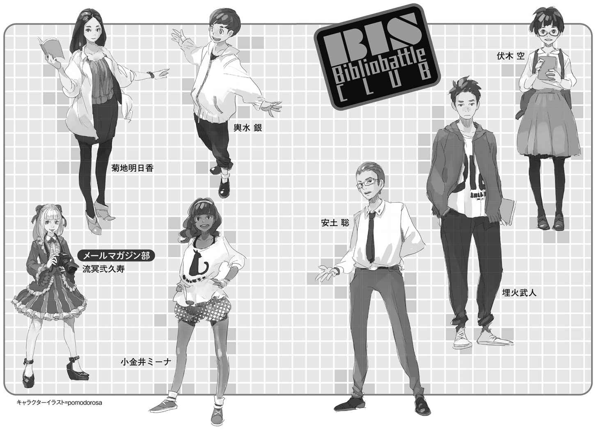

| ＢＩＳビブリオバトル部１ 翼を持つ少女 上 (創元ＳＦ文庫) | |
| 山本 弘 | |
| (2016) | |
この本は縦書きでレイアウトされています。
また、ご覧になる環境により、表示の差が認められることがあります。
本作品を電子書籍版に収録するにあたり、一部の漢字が簡略体で表記されている場合があります。
ＢＩＳビブリオバトル部 １
翼を持つ少女 上
山本 弘
ビブリオバトルとは、本を通して人をつなぎ、人と知識をつなぐ知的ゲーム。ＳＦ小説が大好きな15 歳の少女・伏木空は、ノンフィクションが好きでＳＦに理解のない同級生・埋火武人からビブリオバトル部に勧誘される。メンバーは、雑学本、ボーイズラブ、科学関係などそれぞれ得意分野について語り出すと止まらない個性派揃い。ここなら大好きなＳＦの話が思いきりできると大喜びで入部を決めた空は、張り切って図書室でのデビュー戦に臨む。「本を紹介する小説」という新分野を切り開く、日本初の本格的ビブリオバトル青春小説シリーズ開幕！
東京創元社
ＢＩＳビブリオバトル部 １
翼を持つ少女 上
山本 弘
SHE THAT HATH WINGS
by
Hiroshi Yamamoto
2014
本書の登場人物
●ビブリオバトル部
伏 木 空
高等部一〇年。ＳＦの大好きな少女。
埋 火 武 人
高等部一〇年。ノンフィクションしか読まない。〈燃える氷 〉。
安 土 聡
高等部一二年。関西弁も得意なＢＢ部部長。〈双面の話者 〉。
輿 水 銀
中等部八年。かわいいものが好きな少年。〈天然 の 狙撃手 〉。
小 金 井 ミーナ
高等部一一年。ボーイズラブ好きの混血女子。〈愛 の 伝道師 〉。
菊 地 明 日 香
高等部一二年。サイエンス部との掛け持ち。〈科 学 の 魔 女 〉。
●その他の学生・教師
流 冥 弐 久 寿
中等部八年。金髪の白人少女。メールマガジン部部員。
睦 月 清 麗 奈
高等部一〇年。空や武人と同じクラス。
三 益 若 菜
現代国語の教師。ＢＢ部の顧問。
朝 日 奈 光
世界史の教師。堅 物 という評判。

ビブリオバトル公式ルール
【公式ルール】
１ 発表参加者が読んで面白いと思った本を持って集まる。
２ 順番に一人五分間で本を紹介する。
３ それぞれの発表の後に参加者全員でその発表に関するディスカッションを二～三分行う。
４ 全ての発表が終了した後に「どの本が一番読みたくなったか？」を基準とした投票を参加者全員一票で行い、最多票を集めたものを『チャンプ本』とする。
【ルールの補足】
１ 各発表参加者が自分で読んで面白いと思った本を持ってきて集まる。
ａ 他人が推薦したものでもかまわないが、必ず発表者自身が選ぶこと。
ｂ それぞれの開催でテーマを設定することは問題ない。
２ 順番に一人五分でカウントダウンタイマーをまわしながら本を紹介する。
ａ 五分が過ぎた時点でタイムアップとし発表を終了する。
ｂ 原則レジュメやプレゼン資料の配布等はせず、できるだけライブ感をもって発表する。
ｃ 発表者は必ず五分間を使い切る。
３ 紹介された本について二～三分のディスカッションを行う。
ａ 発表内容の揚 げ足をとったり、批判をするようなことはせず、発表内容でわからなかった点の追加説明や、「どの本を一番読みたくなったか？」の判断を後でするための材料をきく。
ｂ 全参加者がその場が楽しい場となるように配慮する。
ｃ 質問応答が途中の場合などに関しては、ディスカッションの時間を多少延長しても構わないが、当初の制限時間を大幅に超えないように運営すること。
４ 全発表参加者に紹介された本の中で「どの本を一番読みたくなったか？」を基準に参加者全員で投票を行い最多票を集めたものを『チャンプ本』として決定する。
ａ 紳士協定として、自分の紹介した本には投票せず、紹介者も他の発表者の本に投票する。
ｂ チャンプ本は参加者全員の投票で民主的に決定され、教員や司会者、審査員といった少数権力者により決定されてはならない。
参加者は発表参加者、聴講参加者よりなる。全参加者という場合にはこれらすべてを指す。
（ビブリオバトル普及委員会）
ＢＩＳビブリオバトル部 １ 翼を持つ少女 上
そもそものはじまりは、俺の一人称がまだ「僕」だった頃。
あなたにはなかっただろうか。小さかった頃、家の中にある、とてもありふれた、どうということもない何かが、なぜか気味悪く感じられた経験が。
壁に飾られた肖像画。日本人形。動物の剝 製 。仏壇の中の小さな仏像。鏡。簞 笥 と壁の隙 間 の暗がり。柱の木 目 。何となく人の顔のように見えないでもない壁のしみ......そうしたものの前でなぜか不安になり、なるべくその場所を避け、どうしても前を通らねばならない時は顔をそむけ、早足で通り過ぎたりはしなかっただろうか。
後から思えば、なぜそんなものが怖かったのか、よく分からない。子供の頃はまだ人間というより動物に近く、理性が発達していなくて、非論理的な迷信じみた思考にとらわれやすいのかもしれない。あるいは現実と空想の区別がついていなくて、無生物が悪意を秘めているように感じられるのか。
僕の場合、不安の対象は、祖父の遺 した本だった。
僕の家は江戸時代から続く由 緒 ある造り酒屋で、家も立派だった。二階建てで、部屋は大小二〇室以上。黒 板 塀 に囲まれた庭があり、鯉 のいる池の縁 には盆 栽 があって、小さな松の木も立っている。庭に面した板張りの廊下には、今ではめっきり見かけない木製の雨戸の付いたガラス障 子 。友人を家に招くと、みんな大きさと古さに驚き、「時代劇に出てきそう」などと感心する。そして必ず「お屋敷」と呼ぶようになる。
そんな風に大げさに羨 ましがられるのが、僕は恥ずかしかった。いくら大きくても「お屋敷」と呼ぶほどじゃないと思うし、建てられたのも昭和の中頃だ。でも、何よりも恥ずかしかったのは、この家の大きさと豊かさが、先祖代々の人たちの努力の積み重ねであって、僕自身の功績なんかひとかけらも含まれてはいないということだ。僕は先祖の功績におんぶしているだけだ。だから家を褒 められても嬉しく思わない。逆に褒められるたびに自分の無力さを思い知らされ、肩身の狭い思いがする。
話が横道にそれた。本の話だった。
そんな大きな家だから、使わない部屋がいくつも余っていた。そのうち二部屋は、亡くなった祖父の書斎と書庫だ。
僕が生まれる前に亡くなっていたので、祖父の顔は写真でしか知らない。瘦 せていて人相が悪く、いかにも気難しそうな人だ。両親の結婚式の時の集合写真では、ひどい仏 頂 面 で写っていて、結婚に反対だったのではなかったのかと感じさせる。酒造りに関して熱心で、同業者の間での評判は良かったものの、家ではかなり厳格な人だったようだ。母は嫁入りした当時、大きな失敗をして、祖父にひどく叱 られたことがあったと言っていた。「今となってはいい思い出だけどね」と笑っているけど。
かなりの読書家だったらしく、本をたくさん持っていた。書斎にも本棚が二つあるが、書庫の方にはその一〇倍はある。総計は何千冊になるのか見当もつかない。もっとも、両親も祖母も読書に興味がないタイプで、祖父のコレクションにまったく関心がなく、価値も認めていないようだった。父が「安っぽいしょうもない本ばっかり遺しやがって」とか「黴 臭 い」とか愚 痴 っていたのも記憶にある。しかし、祖父の死後、処分するのも面倒だし、とりあえず処分する理由もないので、そのままにされているのだ。
僕は一度だけそこに探検に入ったことがある。鍵はかかっていないし、出入りが禁じられているわけでもなかったが、幼い僕にとってはちょっとした冒険だった。
本に興味があったわけじゃない。そもそも、まだ小学校に上がる前だったから、漢字はほとんど読めなかった。自分の名前と、「宇宙」「恐竜」「仮面」「戦隊」ぐらいしか。だからイラストや写真の入っていない本なんか、まったく関心外だった。ただ、自分の家の中に入ったことのない部屋があるのが気になったのだ。
書庫は一〇畳ぐらいあるはずだった。でも、本がぎっしり詰まった本棚が林立しているせいで、威圧感を覚え、広くは感じられなかった。窓はなかった。厳密に言えば、窓のある側の壁もすべて本棚でふさがれていたのだ。蛍光灯はあるものの、なんとなく薄暗くて陰気な印象があった。そう感じられたのは、本が古いものばかりだったせいもあるのだろう。どれも僕が生まれる前の本で、中には背表紙が黄色っぽく変色しているものもあった。
そしてあの匂 い――古本特有の枯 れたような匂い。一冊一冊はたいしたことはなくても、何千という数になると意識せざるを得ない。不快ではないものの、時の深 淵 を覗きこむような、遠回しに「過去」と「死」を暗示する異臭。それはまだ死というものを明確に意識していない子供にさえ、本能的な不安を呼び起こす。
祖父の膨大なコレクションは、僕には無意味で得 体 の知れない物体の集まりでしかなかった。手に取ろうとも思わなかった。それどころか、周囲に大 渓 谷 のようにそそり立つ大量の本を、子供の視点で見回していると、形のない闇のような感情が胸にこみあげてきた。背表紙に印刷された文字も、みんな意味不明で、呪文のようだった。こんなわけの分からないものを、何十年もかけて集め続けた祖父――その心理は、子供の理解を絶していた。
しかもその祖父はもう死んでいる。ここにある大量の本は、いわばすべて遺品なのだ。そう考えると、まるでエジプトの王の墓に閉じこめられているような気がして、ますます恐ろしくなった。小さかった僕は、這 うようにして書庫から逃げ出し、それ以後、近づかなかった。再び足を踏み入れることになったのは、一〇年も経 ってからだ。
先にも述べたように、当時の僕はあまり漢字が読めなかったし、本に関心もなかったので、そこで見た題名はほとんど覚えていない。しかしなぜか、ある本棚の下から三段目あたりにあった、灰色の背表紙の一冊の本の題名だけは、しっかりと記憶に焼きついていた。
『フェッセンデンの宇宙』
時は流れ、僕の一人称はいつしか「俺」になっていた。
五月も終わりに近づいた金曜日の放課後、俺は来週の部活で使う本を探しに、市立図書館を訪れた。
学校の図書室にもかなりの冊数の本があるが、市立図書館はその何倍も大きい。それに学校の本はどうしても中高校生向けのものが多く、特に俺の好きなノンフィクションは貧弱な印象がある。だからわざわざ、家から電車と徒歩で三〇分ほどかかる市立図書館に出向くのだ。
市立図書館に通 いだしたのは、つい一年ぐらい前からだ。最初のうち、恥ずかしく感じたのを覚えている。俺は中等部時代から背が高く、がっしりした体格で、スポーツもそこそこ得意だった。そんな俺のイメージに読書は似合わないんじゃないか、図書館に出入りしていたら奇異の目で見られるんじゃないかという、軽い被害妄想があったのだ。今はもうそんなことは感じない。図書館には老 若 男 女 、ありとあらゆるタイプの人が訪れていて、俺みたいなタイプの学生など、ちっとも目立つ存在じゃないと知ったからだ。
その日も何十分もかけていろんな本を物色し、とりあえず二冊に絞った。一冊にしないのは、どちらかがハズレだった場合の保険だ。読むスピードは速い方だから、土日でどちらの本も半分は読めるだろう。読み比べてみてどちらか一方を選び、木曜の部活の日までに全部読めばいい。
他にも何か良さそうな本はないか――と思いながら、図書館の中をぶらぶらさまよった。そして、普段あまり近づかない、海外作家の文庫の棚の前を通りかかった。
そこに女の子がいた。
ショートヘアでメガネをかけた少女だ。長身の俺から見ると、とても小さい印象だった。飾り気のない白いブラウスと、ちょっと野 暮 ったいベージュのスカート。俺と同じくリュックを背負っているところを見ると、やはり学校帰りか。
Ｂ Ｉ Ｓ の生徒かな、と俺は思った。市内に中学や高校はたくさんあるが、制服がないのは俺が通っているＢＩＳ（美 心 国際学園）ぐらいのはずだ。身長や胸の発育の具合からすると中等部かもしれないな......。
後ろを通り過ぎようとして近づく。少女は脇の下に文庫本を一冊はさんだ状態で、本棚から二冊の文庫本を取り出し、両手に持って裏表紙のコピーを読んでいるようだった。何かを比べているのだろうか。横顔がやけに真剣だ。
突然、俺は彼女を知っていることに気がつき、足を止めた。
「あれ？ 伏 木 ？」
俺が声をかけると、その少女――伏木空 は驚いて振り返り、まん丸なダサいメガネで俺を見上げた。顔は俺の胸ぐらいの高さ。丸っこくてタヌキのような印象だった。
「あ......えと」
伏木はとまどっていた。俺の名前が思い出せないようだ。
「埋 火 武 人 。同じ一〇年Ｂ組の......て、一ヶ月以上になるのにまだ名前覚えてないの？」
無理のない部分もある。ＢＩＳ高等部は、大学と同じく授業は選択制で、同じクラスの生徒でもいくつもの教室でばらばらに授業を受けるのだ。生徒全員が教室に集まるのは、毎朝のショート・ホームルームと、水曜午後のロング・ホームルーム、それに学園祭などの行事の時ぐらい。だから「クラスメート」という意識は薄く、むしろ同じ授業を受けているグループ内で親しくなる傾向がある。俺と伏木は同じクラスだが、授業は世界史と数学ぐらいしか重なっていない。だからこれまで、話す機会もなかったのだ。
「ご、ごめんなさい」
俺の低音の声がなじっているように聞こえたのだろうか。伏木はおびえた様子で、ぴょこんと頭を下げた。その拍 子 に、脇にはさんでいた本が床に落ちた。
「あ......」
慌 ててしゃがみこみ、本を拾おうとする。しかし、両手に本を持っているので拾えない。本を持ち替えようともたもたしている。トロい奴だ。
その間に、俺は身を屈 め、落ちた本をかっさらうように拾い上げていた。その表紙絵を見て、妙な感じがした。そこに描かれているのは、レトロなデザインのロボットと、銃を構えた青い服の男、それに透明な箱に入った脳ミソだ。
『キャプテン・フューチャー全集２
挑戦！ 嵐の海底都市
脅威！ 不死密売団』
俺は一瞬、どう反応していいか分からなかった。何だ、これは？ この年齢の女の子が好きそうな本とは思えないんだが。
「何これ？ ＳＦ？」
そう言って伏木を見ると、さっきまでよりいっそうおびえた表情だった。俺は失敗に気づいた。まずい。これだとまるで、カツ上げでもしてるようじゃないか。
俺は「ほい」と本を返してやった。伏木はほっとした様子で、「ありがとうございます......」と、聞こえるか聞こえないかというぎりぎりの小声で礼を言った。
「そういうの、読むんだ？」
伏木は恥ずかしそうに顔をそむけ、答えない。頰がほんのりと赤い。まるでエッチな本を読んでいるのを見つかったかのように。
「もしかして、エッチな本？」
まさかそんなことはあるまいなと、冗談で言ってから、俺はまた失敗したことに気づいた。彼女の顔が今にも爆発しそうに真っ赤になったからだ。
「違います！ エドモンド・ハミルトンは――」
興奮して叫びかけて、図書館であることに気づいたのか、急に首をすくめた。
「......健全です」
その瞬間、頭に浮かんだのは、うちの部長がいつも言っている言葉だった――「他人の読書傾向を蔑 んではいけない」。
「悪かった」俺は素直に頭を下げた。「いいよ、べつに。何読んでたって――それ、借りるの？」
「......はい」
伏木はようやく落ち着いたようだった。両手に持った計三冊の本に視線を落とす。
「この三冊にしようと......」
「じゃ、カウンター行く？ 俺も」と、二冊の本を掲げて、「これ、借りるから」
俺はカウンターの方に歩きだした。伏木も後からついてくる。
二つある貸し出しカウンターは、幸い、どっちも空 いていた。俺たちはほとんど同時に手続きを開始した。
貸し出しカードを司書に渡しながら、伏木の方をちらっと見る。彼女も財布からカードを出しているところだった。『キャプテン・フューチャー全集』といっしょに、さっきはよく見えなかった二冊の本もカウンターに置かれていて、タイトルが読めた。
『さようなら、いままで魚をありがとう』
『ここがウィネトカなら、きみはジュディ』
何だろう。意味は分からないけど、妙に気になるタイトルだ。
俺たちはほぼ同時に貸し出し手続きを終え、図書館を出た。市の中心部から離れた立地だが、駅はすぐ近くなので通うのは苦にならない。爽 やかな五 月 晴れの空の下、並木道をなんとなく女の子と並んで歩く。青春だな、という気がした。あまり俺好みの子じゃないのは、この際、我慢しよう。
ちなみに俺の好みは「巨乳」「長髪」「快活」。伏木はそのどれにもかすりもしない。スリーストライクでアウトだ。
「南 早 野 方面？」
「あ、はい......虹 ヶ 丘 です」
俺の降りる駅よりひとつ前だ。
「ああ、俺は月 立 」
「そうですか......」
伏木はまだ俺のことを警戒しているのか、態度がぎこちなかった。
ホームで電車を待つ間も、彼女は落ち着かない様子だった。男といっしょにいるのに慣れていないのだろうか。俺から離れたいのかもしれない。でも、クラスメートなのに離れようとするのも変な話だから、やむなく隣にいる......という感じがした。
それは俺も同じだ。伏木に異性として興味があるわけじゃない。というか、この年齢でこんなにも異性を感じさせない女子も珍しい。親しくなろうとは思わなかったから、別々の車両に乗ったってかまわないのだ。でも、同じ方面に帰るのにわざわざ別れるというのも不自然だ。俺が彼女を毛嫌いしてるんじゃないかと誤解されかねない。だから隣にいる。
教室の中での伏木のことを思い出そうとする。どうも印象が薄い。同じクラスになって一ヶ月以上になるのに、彼女の特徴を示すエピソードが何も思い当たらないのだ。誰かと親しげに話しているのを見た記憶もない。声も授業中に何度か聞いたことがある程度。勉強はできるようだったが、趣味とかプライベートなことはさっぱり分からない。今から思うと、まるで故意に自分の存在を消していたかのようにさえ思える。
過去のことも知らない。中高一貫の学校で、俺を含めクラスのほぼ全員が、エスカレーター式に中等部から上がってきている。だが、伏木は編入試験を受けて今学期から入学してきた。だから以前の彼女を知る者がいないのだ。
考えてみると、こいつってけっこう謎の奴なんじゃないか？ ＳＦなんか読んでるのも含めて。
このまま黙っているのも気詰まりだ。俺は話すきっかけをつかもうと、適当な話題を探した。
「えーと、さ」
俺が喋 ると、隣の彼女の肩が、びくっと震えるのが分かった。
「『キャプテン・フューチャー』......だっけ？ それって面白いの？」
「あ、えーと......」彼女は言葉を探しているようだった。「......スペースオペラなんです」
面白いのかと訊 ねてるのに、その答え方はないと思うが。
「オペラ？ オペラなの？」
そんな感じには見えなかったが。
「いえ、そうじゃなくて、スペースオペラというのは......」
彼女はそこで言葉を切り、顔を上げ、線路の上の青空に走っている架線を見つめた。どう説明すべきか、頭の中で整理しているらしい。やがて、また口を開いた。
「一九三〇年代、アメリカで、ラジオのメロドラマが流 行 ってたんだそうです」
「はあ？」
なぜ急にメロドラマの話になる？
「そういう番組は石 鹼 会社がスポンサーであることが多かったんで、ソープオペラと呼ばれたそうです。安っぽいってイメージもあったんでしょうね。その後、今度は西部劇の映画や小説が流行して、ソープオペラからの連想でホースオペラと呼ばれるようになりました。一九三〇年代のなかばぐらいには、『フラッシュ・ゴードン』という宇宙もののコミックスがヒットして、映画化もされました。その頃から、宇宙を舞台にしたコミックスや小説がいっぱい書かれるようになって、三〇年代の末にはすごいブームになったんです。ただ、大半が安直な作品だったんで、それをバカにして、〝あんなのはホースオペラの馬を宇宙船に置き換えただけのスペースオペラだ〟と言われるようになりました。その言葉が定着して、宇宙を舞台にした冒険ものをスペースオペラと呼ぶようになったんだそうです」
すごい。伏木がこんなに長く喋ったのを聞いたのは初めてだ。
「ああ、つまり『スター・ウォーズ』みたいなやつ？」
「はい。『スター・ウォーズ』は典型的なスペースオペラですね。ジョージ・ルーカスはもともと『フラッシュ・ゴードン』を映画化したかったんですけど、版権が取れなかったんで『スター・ウォーズ』を作ったと言われてます」
「じゃあ、その『キャプテン・フューチャー』も、『スター・ウォーズ』みたいな話なんだ？」
「うーん......」
伏木は口に拳 を当て、また悩んだ。
「何？」
「いえ、『キャプテン・フューチャー』がスペースオペラなのは事実なんですけど、『スター・ウォーズ』と同じかと言われると、それはちょっと違うな、と......」
「どう違うの？」
「キャプテン・フューチャーは宇宙のヒーローなんです。本名はカーティス・ニュートン。月面に基地を持っていて、フューチャーメンというチームを指揮しています。ロボットのグラッグ、アンドロイドのオットー、それに脳ミソだけのサイモン・ライト教授――事件が起きると宇宙船コメット号で出動して、科学の力で謎を解き明かして、悪人をやっつけるんです」
「なんかそれ、ダサくない？」
うっかりそう言ってしまって、伏木が傷つくかとひやりとしたが、そんなことはなかった。彼女は軽く苦笑して言った。
「現代の目で見て古臭 く見えるのはしかたないですね。一九四〇年代に書かれたシリーズですから」
「そんなに古いんだ？」
「はい。第一作の『恐怖の宇宙帝王』が書かれたのは一九四〇年です。科学知識も当時のレベルですね。太陽系の惑星にはみんな呼吸可能な大気があって、火星人とか木星人とか平然と出てきますし」
「木星人って......」
「でも、逆にすごいと思うんですよね。だって太平洋戦争の頃ですよ？ そんな時代に、太陽系を駆けめぐる冒険ものを書いてたって、驚くべきことだと思うんですよ」
「まあ、確かに......」
「実際、『キャプテン・フューチャー』は、その頃のスペースオペラの中でも飛び抜けて評価が高いんです。当時、アメリカではたくさんの作家がスペースオペラを書いてましたけど、今でも読み継がれていてファンが大勢いるのは三人だけです。『火星』シリーズ、『金星』シリーズのエドガー・ライス・バローズ、『スカイラーク』『レンズマン』のＥ・Ｅ・スミス、それに『キャプテン・フューチャー』のエドモンド・ハミルトン......」
「日本でも？」
「ええ。全集が出るぐらいですから、ファンが多いんだと思います。ああ、一九七八年に、日本でテレビアニメになってるらしいんですよね。YouTubeでオープニングぐらいしか観 たことありませんけど」
「君もファンなんだ？」
伏木は恥ずかしそうに笑った。
「私の場合は、ちょっと違いますね」
その時、電車がホームに入ってきた。俺たちは乗りこみ、空いていた席に並んで座った。
電車が動きだすと、俺は話を再開した。
「ちょっと違うって、どういう風に？」
「普通、ハミルトンのファンは、『キャプテン・フューチャー』から入るものらしいんです。でも私の場合、最初にスペースオペラ以外のハミルトンの短編を読んで、ファンになったんです。それで『キャプテン・フューチャー』も読んでみようかなって......」
「『キャプテン・フューチャー』以外の本も出てるの？」
「はい。今、日本で手に入るのは、創元ＳＦ文庫の『反対進化』と『眠れる人の島』、それと河出書房新社の『フェッセンデンの宇宙』......」
「『フェッセンデンの宇宙』？」
俺はその言葉に反応した。小さい頃に見た背表紙のイメージが、脳裏にフラッシュバックする。
「それ、俺の家にあるわ」
「ほんとですか？」
「うん、祖 父 ちゃんの本棚に確かあった。読んだことないけど」俺はふと、興味が湧いた。「どういう話なの、あれ？」
「短編集です。表題作の『フェッセンデンの宇宙』は、実験室の中に人工の小さな宇宙を創 った科学者の話です。名作ですよ」
「宇宙を......創る？」
「はい。小さいけど、恒星の周囲に惑星が回っていて、その上には知的生物も住んでるんです。フェッセンデンは顕 微 鏡 でそのミニチュアの宇宙を観察しながら、いろいろな実験をやるんです。彗 星 の軌道を変えて惑星にぶつけたり、二つの惑星の間に宇宙戦争を起こさせたり、惑星の海を干 上 がらせたり」
「住民はたまったもんじゃないな」
「ええ。そうやっていくつもの惑星を面白半分に滅ぼすんです。物語の最後で、語り手はこの宇宙もどこかの科学者によって創られたミニチュアじゃないかって想像するんです。その科学者が興味本位に地球を破壊しにかかるんじゃないか、〈あの天上にもフェッセンデンがいるのではないだろうか〉って」
「へえ。面白そうだな」
そうは言ったものの、読む気は起こらなかった。あまりにも荒 唐 無 稽 すぎて、俺の好みに合いそうにないからだ。「面白そうだな」というのは、彼女の機嫌を損ねないための社交辞令みたいなものだ。
だが、伏木は文字通りに受け取ったらしかった。「ぜひ読んでみてください！」と力説する。
「私が初めて読んだのは、小学校四年の時です。ポプラ社から出てた『科学者たちの陰謀』っていう、赤 木 かん子さんの子供向けのＳＦアンソロジーに、『人工宇宙の恐怖』っていう題で収録されてたんです。それがすごく印象に残ってて、中学に入ってから図書館で河出書房新社の奇想コレクション版を借りて読んで、その後、お小 遣 いで河出文庫版の『フェッセンデンの宇宙』を買い直しました」
「へーえ......」
よっぽど惚れこんだのか。
「そう言えばお祖父さんの本って、奇想コレクション版ですか？ 文庫版ですか？」
「何か違うの？」
「『フェッセンデンの宇宙』はまず奇想コレクションのシリーズで出て、その後に文庫化されてるんですけど、その時に収録作が追加されてるんです。『世界の外のはたごや』と『漂流者』。あと、『フェッセンデンの宇宙』が二本入ってます」
「二本？ 同じのが？」
「『フェッセンデンの宇宙』が最初に〈ウィアード・テールズ〉に発表されたのは一九三七年なんですけど、一九五〇年にアンソロジーに収録される際に書き直されてるんです。昔から日本のＳＦファンの間で親しまれていたのは一九五〇年版の方だったんですけど、奇想コレクションに収録されてるのは一九三七年版の方だけだったんです。文庫では両方とも収録されてるんで、読み比べることができます」
こいつ、かなり熱烈なファンのようだ。これはうかつに茶 化 せないぞ。こういうタイプは、好きなものをけなされると逆上するものだから。
とりあえず、当たり障 りのない質問をした。
「どう違うの？ 三七年版と五〇年版と」
「ストーリーはほとんど同じですけど、一三年の間にハミルトンが上 手 くなってるのが分かりますね。いちばん大きな違いは、語り手の役割です。三七年版では、語り手はフェッセンデンの実験を最初から非難してるんですけど、五〇年版ではフェッセンデンといっしょになって楽しんでるんです」
いつの間にか、教室や図書館での無口な態度が噓のように、伏木は饒 舌 になっていた。こんなにすらすらと言葉が出てくるということは、これまでよほど言いたいことが溜 まっていたのか。
「上手い改変だと思います。読者を巻きこんでるんです。読者は語り手の目を通して作品世界を見ますから、神のような力をふるって世界を自由に操 って、小さな生き物をいたぶる楽しさを、語り手といっしょに満喫します。でも、突然、気がつくんです。それがおぞましい行為だということに......」
伏木はそこで不自然に言葉を切った。その横顔には、なぜか憂 いの色があった。
何秒かして、彼女は急に振り向いて俺の顔を見た。
「でも、そんな本をお持ちということは、お祖父さんもＳＦがお好きなんですか？」
「さあ、どうなのかな。よく知らないんだ。俺が生まれる前に死んでるから」
「そうですか......」
伏木はがっかりしたように顔をそむけ、車窓の外の風景に目をやった。
と、突然、「えっ!? 」と声を上げ、振り返って俺をまじまじと見つめた。
「あなたが生まれる前に亡くなってる!? 」
「ああ、そうだけど......？」
「いつ頃ですか!? 」
「何年だっけ？ とにかく二一世紀になる前だよ」
「じゃあ、その『フェッセンデンの宇宙』ってこう――」と、手で形を示し、「縦に細長い判型でした？ 背表紙は銀色？」
俺は記憶を反 芻 した。記憶の中では背表紙は灰色だったが、言われてみれば、あれは銀色に近かったかもしれない。
「ああ、そうだったかも」
「それって！」伏木はほとんど悲鳴のような声を上げた。「ハヤカワＳＦシリーズ版じゃないですか！」
「えっ？ 『フェッセンデンの宇宙』って他にもあるの？」
「一九七二年に早川書房のハヤカワＳＦシリーズから出た版があるんです。奇想コレクション版が出たのは二〇〇四年ですから、お祖父さんが買っていたのはハヤカワＳＦシリーズ版だとしか考えられません」
「珍しいの？」
「とっくに絶版ですし、古書店にもなかなか出回りません。たぶん、マニアが手放さないんだと思います。私も実物は見たことありません。ネットの古書通販では手に入るみたいですけど、けっこう高値がついてます」
「へえ......」
「見せてください！」伏木はメガネの奥で眼 を輝かせていた。「見てみたいんです！」
祖父の本を見せるぐらい、どうということはない。俺は承諾した。
俺たちは月立で降りた。駅前に商店街もスーパーもない小さな駅だ。昔ながらの、店先にアニメのぬり絵やジグソーパズルを置いている文房具店や、アイスクリームの冷凍ショーケースを置いている駄 菓 子 屋なんかがある。よく潰 れないものだと、前を通るたびに不思議に思う。時代の進歩に置き忘れられたような街だ。
俺の家に向かって、駅からだらだらと続く長い坂道を登る。その間、伏木はハミルトンの魅力を熱く語り続けていた。
「まず、すごいスケールですね。『フェッセンデンの宇宙』もそうですけど、宇宙的な規模の話とか、何千何万年、時には何億年っていうタイムスケールの話を、それも短編でさらっと書いちゃうんです。地球なんかあっさり滅ぼします。だからハミルトンは、アメリカではワールド・レッカー――〝世界破壊者〟っていう異 名 があったそうです」
「世界破壊者？」
「しょっちゅう地球を破滅させたり、危機に陥 らせたりしてるから、ってことらしいです」
それって「Ｂ級だ」って皮肉られてるんじゃないだろうか。少なくとも俺には、そうとしか思えない。
「あと、奇想ですね。よくこんな変なこと思いついたなあ、という奇想天外な話をいっぱい書いてるんです。それも、ちっとも気取らずに、思いついたままをストレートにぶつけてくるんです。
たとえば『ウリオスの復 讐 』。古代アトランティス文明のウリオスという科学者の話です。彼の妻と愛人が、アトランティスを滅ぼして逃亡したんですけど、ウリオスはその復讐のために、忠実な召使いといっしょに、二人をどこまでも追跡するんです。その方法がすごくて、脳移植なんです」
「脳移植？」
「若い人間を捕まえて、その肉体に自分の脳を移植するんです」
何それ。グロい。
「妻と愛人の方も、やっぱり脳移植で、次々に新しい肉体に乗り換えて生き続けるんです。追う方も追われる方も、脳移植を繰り返して若さを保ちながら、何千年も追いかけっこを展開するんです。すごい話でしょ？ 最後に二〇世紀のアメリカで決着がつくんですけど、その結末がまた見事で......」
だめだ。それ、どう考えたってＢ級だろ。
「あと、絶望感ですね」
「絶望？」
「『キャプテン・フューチャー』は違いますけど、ハミルトンの短編って、虚無感とか悲しみとかが漂 ってるものが多いんです。宇宙のスケールとか、何億年という時間の中では、しょせん人類なんかちっぽけな存在でしかないんだっていう、悟りというかあきらめみたいなものが......『フェッセンデンの宇宙』もそうですけど、『呪われた銀河』とか『反対進化』とか『世界の外のはたごや』とか。
でも、そういうのを読んで気が滅 入 るかっていうと、ぜんぜんそんなことないんです。絶望のスケールが大きすぎて、逆に感動しちゃうんです。ああ、こんなものすごいスケールで世界を眺めてる人がいるのか、って」
要するに現実逃避か。
しかし、夢見るような表情で語る伏木を見ていると、ハミルトンとやらへの思い入れの深さが感じられた。さっき、俺が「もしかして、エッチな本？」と言ったら赤くなったのも、エッチな本を読んでいると誤解されたのが恥ずかしかったからじゃなく、大好きな作家を侮 辱 されたのが我慢ならなかったのかもしれない。
「もちろん全部が傑作ってわけじゃありませんよ。駄作もたくさんあります。でも、できれば日本で訳されてる作品を全部読んでみたくて......」
「他にも訳されてるの？」
「ネットで調べてみたら、八〇年代に青 心 社 から『星々の轟 き』っていう短編集が出てるそうなんですけど、これも今では手に入らないんですよね。他にも『キャプテン・フューチャー』以外の長編が何冊も出てるんですけど、みんな絶版です。『時果つるところ』だけは、図書館で早川書房の世界ＳＦ全集を借りて読みました。あと、『スター・キング』と続編の『スター・キングへの帰還』は、二〇〇一年に創元ＳＦ文庫から復刊されてるんですけど、これも今では在庫切れです。それ以外の長編も、今ではみんな入手困難です。『銀河大戦』『太陽強奪』『虚 空 の遺産』『最後の惑星船の謎』『宇宙艦隊の奇襲』『スターウルフ』......あっ、『スターウルフ』も昔、日本でドラマ化されてるらしいですよ」
タイトルを聞くだけで安っぽそうだがなあ。つーか、何でそんなタイトルがすらすら出てくるんだ、お前は。
「それでハヤカワＳＦシリーズ......だっけ？ そのバージョンの『フェッセンデンの宇宙』も読みたいと？」
「ええ。河出文庫版とは収録作がかなり違ってるみたいなんで......ずっと気になってたんです」
「しかし、その歳で、そんな古い小説が好きだなんて......」
もの好きだな、と言おうとしたけど、そこは吞みこんだ。さすがに失礼かと思ったのだ。しかし、伏木はぜんぜん気にしていないようだ。
「古いって言ったら、芥 川 龍 之 介 とか森 鷗 外 の方が古いでしょ？ ゲーテとかヘッセとか、シェークスピアとか紫 式 部 とかも」
「そりゃそうだけど」
「ゲーテやヘッセを読んでても〝古い〟って言われないのに、ハミルトンやバローズを〝古い〟って言われるのは、個人的にすごく納得いきません」
いや、スペースオペラとかいう低俗なジャンルといっしょにしたら、ゲーテやヘッセに失礼だろ。
そんなことを話しているうち、俺の家に着いた。
「わ、すごい」
伏木は小声で驚いていた。黒 板 塀 と〈埋火〉という表札を掲げた大きな門――時代劇に出てきそうな外観だ。
門をくぐると、玄関まで五メートルほどの敷石の道が延びている。その右側にある庭園が、嫌でも目に入る。鯉 のいる小さな池。その周囲の植木や盆 栽 。それに松の木。
「うわ、すごいすごいすごい。お金持ちじゃないですか。すごい」
ささやき声ではしゃぐ伏木。俺の家を初めて訪れる人間が見せる、典型的な反応だ。この家の敷地に足を踏み入れると、雰囲気に圧倒され、自然に小声になってしまうらしい。
「埋火酒造って知らない？ 日本酒の蔵 元 」
「えっ？ じゃあ埋火さんって、蔵元の御 曹 司 ......？」
「その言い方はやめろ」
「え？」
「御曹司、お坊ちゃま......嫌いなんだよ、そういう言葉」
そう言いながら、玄関をがらっと開けた。
靴を脱いでいると、母が出てきた。もう五〇近いんだが、スキンケアのおかげで、外見はけっこう若く見られる。
「お帰り、武人――あら、お客様？」
「あの......お邪魔します」
伏木は礼儀正しくお辞儀した。首をすくめ、緊張しているようだ。
「あら、かわいらしい」
母は子犬でも見たかのように微笑 む。そりゃあ、俺との身長差があるから、小さく見えるんだろうな。
「あんたが女の子連れてくるなんて珍しいわね。ひょっとして、か――」
「ちげーよ」俺は遮 った。「ただのクラスメート。祖父ちゃんのコレクションが見たいって言うから連れてきた」
「コレクションって、あの古い本？」
「うん。見せていいだろ？」
「そりゃいいけど」母はちょっと怪 訝 な顔をして伏木を見つめた。「あんなもの見たがるなんて......もの好きな子ねえ」
おいおい、俺が言うのをこらえてた言葉をあっさり言うか。いくらそう思ってたって、ストレートに感想を述べちゃだめだろ。ほら、伏木が恥ずかしそうにしてる。
「こっちだ。ついてきて」
母と伏木をからませるのはまずいと思い、俺はさっさと廊下を歩きだした。伏木もスリッパをつっかけると、ぺたぺたと足音をたててついてくる。
「埃 っぽいかもしれないけど、気にしないでねー」
母が背後から声をかけた。
幼稚園の時以来、一〇年ぶりに入る祖父の書庫は、記憶にある印象とあまり変わっていなかった。あらためて目にする本の量は、やはり圧倒的だった。ちょっとした古書店が開けそうなほどだ。
違うのは、記憶にあるより狭く感じられるのと、蛍光灯を点 けると意外に明るいということ。前者は俺がまだ小さかったから、相対的に広く感じられたんだろう。後者は、不気味なイメージが焼きついていたせいで、記憶の中の映像も暗く改変されていたんじゃないかと思う。
中に入って振り返る。伏木は入口のところで、ぽかんと口を開け、立ちすくんでいた。驚きのあまり絶句する人間を、俺は生まれて初めて見た。
「......うわあ」
ようやく硬直が解け、ふらふらと歩きだす。俺を押しのけるようにして、入口の真正面にある大きな本棚に歩み寄った。七段ある棚の下から数えて三段目から七段目までが、ほぼまるごと、銀色というか灰色というか微妙な色の背表紙の本に占拠されている。上の方にある本は、安っぽそうな厚紙の箱に入っていた。下の方には透明なビニールのカバーがかかっているものもある。すべてが銀色じゃなく、なぜか同じ判型で金色の背表紙のやつも何冊か混じっていた。
伏木はゆっくりとしゃがみこみながら棚の上から下へ、また立ち上がりながら下から上へと目を走らせる。横顔が輝いていた。まるで見事な芸術作品を鑑賞しているかのようだ――ただの古本なのに。
「すごい」伏木は呆 然 とつぶやく。「すごい、すごい......ハヤカワＳＦシリーズがこんなにたくさん......」
「『フェッセンデンの宇宙』は、確かその下の方の段に......」
「はい、分かってます。見えてます」俺の助言を伏木は迷惑そうに遮った。「でも他の本もすごいです。ほら、フレッド・ホイルの『10 月１日では遅すぎる』って、ネットでタイトルだけ見て気になってたんですよね。何が遅すぎるんだろうって。シマックの『なぜ天国から呼び戻すのか？』とかもそうです。質問の意味が気になるじゃないですか。ソウルの『時間溶解機』とかクーパーの『太陽自殺』とかクレアの『アルタイルから来たイルカ』とかも。時間を溶かすってどういうことなの？ とか、太陽自殺って何？ とか、何でイルカがアルタイルから？ とか」
最初の驚きが去ると、彼女はだんだん興奮し、早口になってきた。棚の真ん中の段あたりに近づけている顔が、ケーキ屋のショーウィンドウを覗いているかのように、にこにこと楽しそうだ。
「こうして見ると、ＳＦのタイトルって、眺めてるだけでぞくぞくするのが多いんですよね。『長く大いなる沈黙』『闇よ、落ちるなかれ』『月は無慈悲な夜の女王』『この地球のどこにも』『アンドロメダのＡ』『地球の長い午後』『よろこびの機械』『宇宙震』『海竜めざめる』『天の光はすべて星』『人間の手がまだ触れない』......」
本棚に上下左右に視線を走らせ、憑 かれたように本のタイトルを読み上げているうち、彼女は何かに気づいたらしく、「あっ」と声を上げた。
「『盗まれた街』と『ドノヴァンの脳髄』がいちばん上にあるということは......そうか、これ、番号順に並んでるんですね。それで一九七二年発行の『フェッセンデンの宇宙』が下の方に......」
「これって貴重なもんなの？」
「はい。一九五七年から一九七三年まで発行されたシリーズ――初期のハヤカワ・ファンタジイっていう名前だった頃のも含めて、確か三〇〇冊以上あるはずですけど、それがかなり揃ってます」伏木は背表紙の上の方に打ってあるシリーズの番号をチェックする。「さすがにコンプリートじゃないですね。ちょくちょく抜けがあります」
確かに、ざっと見たところ、二〇〇冊以上は確実にある。祖父さん、かなりのＳＦコレクターだったらしい。
「その金色のやつは何だ？ 他より高いとか？」
「クラシック作品です。コナン・ドイルとかエイブラム・メリットとかの、主に第二次世界大戦より前の古典的な作品が金色の背表紙なんです」
「古典的って......俺にはどれも古そうに見えるんだけど」
いちばん新しいやつでも一九七三年ってことは、みんな四〇年以上前の本じゃないか。
「その下にあるのは？」
俺は本棚の下二段を占めている黄色や水色の背表紙のハードカバーを指差した。
「早川の海外ＳＦノヴェルズですね。けっこう有名な作品が揃ってます。『パーマー・エルドリッチの三つの聖 痕 』『へびつかい座ホットライン』『夜の大 海 の中で』『所有せざる人々』『我ら死者とともに生まれる』『もし星が神ならば』『ゲイトウェイ２／蒼 き事象の水平線の彼方 』......ああ、いいなあ。このへんのタイトルもしびれる」
タイトル・フェチなのか、お前は。
伏木はハヤカワＳＦシリーズと海外ＳＦノヴェルズを堪 能 したらしく、その左隣の文庫本の棚に移った。
「こっちは東京創元社の創元推理文庫ですね」
「推理？ ミステリなのか？」
俺は不思議に思った。『太陽系帝国の危機』とか『暗黒星雲のかなたに』とか『終点：大宇宙！』なんてタイトルは、ミステリとは思えないんだが。
「昔は創元推理文庫から、ミステリだけじゃなくＳＦや冒険小説も出てたんです。ほら、背表紙に赤い字で〈ＳＦ〉って書いてあるでしょ？ これがＳＦである印です。一九九一年に創元ＳＦ文庫という名前に変わりますけど......うわあ、こっちもすごいなあ」
伏木は嬉しそうに眼を細める。
「こっちは作者別に分類されてますね。かなり古いものからあります。ほら、『不老不死の血』とか『金星の尖 兵 』とか『明日プラスＸ』なんて、私もタイトル見るの初めてです。うわあ、『レンズマン』も小 隅 黎 さんの訳じゃない方だ。『レンズの子供たち』が『レンズの子ら』になってる。ああ、『スカイラーク』も四冊ともある。いいなあ......えっ、ちょっと待って」
彼女は棚の一 角 に吸い寄せられるように顔を近づけた。
「シオドー・スタージョン『原子力潜水艦シービュー号』......噓!? スタージョンってこんなの書いてたんだ!? 知らなかった！」
よく分からないけど、レアものらしい。
「こっちのは？」
俺は薄緑色の背表紙の文庫が並んでいる一角を指差した。『火星のプリンセス』『火星の女神イサス』などと書かれている。
「何で背表紙の色が違うの？」
「エドガー・ライス・バローズの『火星』シリーズです。さっきも言ったでしょ？ 日本でもハミルトンと並んでファンが多い作家です。バローズの場合、スペースオペラというより、ヒロイック・ファンタジーに近いんですけど」
「やっぱり『キャプテン・フューチャー』と同じ頃の小説？」
「もっと古いです。確か『火星のプリンセス』が最初に雑誌に発表されたのは一九一二年」
おいおい、一〇〇年以上前かよ。明治の終わりじゃないか。
「でも、お祖父さん、バローズのファンだったんでしょうね。シリーズ、コンプリートしてますよ。『金星』シリーズと『ペルシダー』も揃ってますし」
「ペルシダー？」
「地底世界です。地球空洞説に基 づいて書かれてるんです」
「はあ？ 空洞？」
「地球の内部がからっぽで、その内側に動植物が栄えてるっていう説です。空洞の真ん中に太陽があって、陽 が沈まないから夜がない世界なんです。文明が発達していなくて、恐竜や原始人がいるんです。主人公のディヴィッド・イネスという青年は、〈鉄モグラ〉というドリルのついた機械に乗ってペルシダーに行って、冒険を繰り広げるんです。レトロだけど面白いですよ」
いくら何でもレトロすぎるだろ。バカバカしすぎてついていけない。
「これって何だ？」俺はそのシリーズの一冊のタイトルが気になった。「『ターザンの世界ペルシダー』......？」
「ああ、バローズは『ターザン』の原作者でもあるんです。それでターザンがペルシダーに行く話を書いてるんです」
「読者サービス？」
「シリーズのクロスオーバーなんて、なかなかできることじゃありませんよ。ヒットしてるシリーズを二つ以上持ってないといけないんですから」
「これも古いの？」
「確か『ペルシダー』と『ターザン』がスタートしたのは、『火星のプリンセス』より少し後、一九一四年だったと思います。どれも一九五〇年にバローズが亡くなるまで、何十年も続くんですけど」
何でそんな試験に絶対出そうにない年号を暗記してるんだ、お前は。
「読んだことあるの？」
「最初の『地底の世界ペルシダー』だけは。前に古本屋さんで、一冊一〇〇円で売ってたのを見つけて買ったんです。本当はそんな古書価格じゃないはずなんですけど、ぼろぼろになってて、カバーも取れてましたから――ああ、これです」
伏木は『地底の世界ペルシダー』という本の背表紙を指差した。
「すみません。表紙を見てみたいんですけど、抜いていいですか？」
「ああ、いいけど......？」
「じゃ、失礼します」
彼女は細い指を文庫の上にかけ、繊細な工芸品でも扱うかのように、そっと本棚から抜き出した。手に取って、表紙をしげしげと眺める。
「うわあ......私のと違って、すごい美本だ。お祖父さん、本を大切にする人だったんですね」
何の気なしに彼女の肩越しにその表紙絵を見た俺は、動揺してしまった。先端にドリルのついた円筒形の機械（これが〈鉄モグラ〉なんだろう）の前に、豹 の毛皮をまとった黒髪の美女が立っている。何者かに捕らえられているのか、後ろ手に鎖 で縛 られ、どこか悲しげな表情を浮かべていた。そこまではいいのだが......。
「あの......それ、いつ頃の本......？」
「一九七〇年代です。確か」奥付を見て確認する。「そうです。一九七三年初版になってます。『ペルシダー』は先に早川から出てて、それを後追いする形で創元からも出版されたはずです」
「七〇年代って、そういうのが許されてたの？」
「はあ？」伏木は振り返り、きょとんと俺を見上げる。「何がですか？」
「いや、だってその絵......胸が......」
そう、その美女の右の胸は、毛皮からはみ出していて、乳首が見えているのだ。
「え？ ああ」伏木はようやく俺の言いたいことに気づいたようだが、平然としていた。「ダイアンは普段からこういう格好ですよ。ほら」
彼女は口絵を開いて見せた。見開きのカラーのイラストで、表紙に描かれた美女がヒーローといっしょに、崖の中腹で翼竜みたいな怪獣に追い詰められているところだ。やっぱり右の胸が露出している。
「しかし、表紙でそれは......」
「ネットで調べたことあるんですけど、他の表紙絵も同じようなものでしたよ――ほら、これなんかも」
伏木はシリーズの後ろの方から『石器の世界ペルシダー』を抜き出した。こっちは金髪の美女がマンモスをバックに立っているという図で、やっぱり片方の胸が大胆に露出している。
「でも、中にはいやらしいシーンなんかありませんよ。だって、一〇〇年前の小説ですし」
「でも、表紙がその......いかがわしいじゃん」
俺がそう言うと、伏木はひどくびっくりした様子だった。
「いかがわしいって......これ、武 部 本 一 郎 ですよ!? 」伏木は知ってるのが当然とばかりの口調で食ってかかってきた。「日本を代表する有名なイラストレーターですよ！」
「だって胸が......」
「じゃあ、ドラクロワの『民衆を導く自由の女神』とかもいかがわしいって言うんですか!? 」
「いや、それは......」
「『ペルシダー』だけじゃありません。『火星』シリーズも『金星』シリーズも、ハヤカワ文庫の『ターザン』シリーズも、武部さんの絵なんです！ そりゃあ、ハヤカワ版の『ペルシダー』の柳 柊 二 さんも、岩崎書店版の『火星のプリンセス』の山 本 貴 嗣 さんの絵もいいですけど、やっぱりバローズと言えば武部さんでしょ!? 」
でしょ、と同意を求められても、そんな名前知らねえし。
「日本だけじゃありません。バローズの小説の表紙というと、本国のアメリカでも、フランク・フラゼッタとかボリス・ヴァレホといった有名なイラストレーターが、マッチョなヒーローや裸の女の人の絵を描 いてます。どれも上手いんですよ。でも、肉食系というか、日本人にはとっつきにくい感じがするんですよね。その点、武部さんの絵って、タッチが日本的で、すごく柔らかいんです。それでいてエキゾチックで――」
「でもさ」お喋りが止まりそうにないので、俺は遮った。「七〇年代は有名だったかもしれないけど、今は忘れられてるんじゃない？」
「......かもしれません」
伏木は急にしょぼんとなった。『ペルシダー』と同じ段にある『火星』シリーズの背表紙を、悲しげに見つめる。
「......『ジョン・カーター』っていう映画が公開された時、それに合わせて、創元が原作の『火星のプリンセス』の新版を出したんです。私、そのニュースを知って、わくわくして本屋さんに買いに行ったんです。ネットで武部さんのイラストの素晴らしさは知ってましたから、それ目当てで......それなのに」
伏木は今にも泣き出しそうな顔になっていた。
「絵が武部さんじゃなかったんです！ それどころか、キャラクターさえ描いてなくて、表紙にはただ、火星の絵がべたっと......私もう、それ見て力が抜けちゃって」
「ええっと......」俺は慰 める言葉を探した。「それはつまり、今風の絵に変えられてたってこと？」
「今風って――武部さんの絵は時代を超えて素晴らしいですよ！ 他の何物にも変えられませんよ！ 何で変えちゃうんですか!? 『モナ・リザ』が古い絵だからって、新しい絵に変えたりします!? 納得いきません！」
「いや、分かった。そうだな、うん」
そう、よく分かった。こいつにＳＦの話を語らせるとうざいってことが。
伏木は創元推理文庫の棚を調べた後、隣にある別の文庫の棚に移った。棚の上の方はほとんど白い背表紙だが、下の方では水色の背表紙が多くなってくる。
「こっちはハヤカワ文庫ＳＦですね......うわあ」
さっきから伏木の「うわあ」を何度聞いただろうか。
「こっちも初期の頃――まだハヤカワＳＦ文庫って名前だった時代からのが、ずいぶん揃ってますね。『緑の星のオデッセイ』『青い世界の怪物』『宇宙嵐のかなた』『時の深き淵 より』『地球生まれの銀河人』『時間を征服した男』......このへんのタイトルもしびれますね。ああっ、ジェイムズ・Ｈ・シュミッツの『悪 鬼 の種族』！ ランドル・ギャレットの『銀河の間 隙 より』！ ポール・アンダースンの『大魔王作戦』も！ これ読みたかったんです！」
「白いのと水色のが混じってるのは何でだ？」
彼女に冷静さを取り戻させようと、俺はどうでもいい質問をぶつけた。
「白 背 と青 背 と呼ばれてます。最初の頃、ハヤカワＳＦ文庫はスペースオペラとかヒロイック・ファンタジーとか、娯楽色の強いものが多かったんです。最初はみんな白い背表紙だったんですけど、そのうちシリアスなＳＦも出すようになって、区別するために背表紙の色を変えるようにしたんです。今では『ペリー・ローダン』シリーズ以外、ほとんど青背になっちゃってますけど」
「こっちのは黄色いぞ？」
棚の一角には、黄色い背表紙の文庫本がずらっと並んでいた。俺は眼を近づけた。『類猿人ターザン』『ターザンの復讐』『ターザンの凱 歌 』......。
「ターザン？」
「さっき言った、バローズの『ターザン』シリーズです。七〇年代に早川書房がTARZAN BOOKSというシリーズを作って、『ターザン』を全巻、翻訳しようとしたんです。二五冊出す予定が、結局、二一冊出たところで打ち切りになっちゃったんですけどね。ただ、シリーズに入る予定だった『地底世界のターザン』――創元版の『ターザンの世界ペルシダー』ですけど、それは先に『ペルシダー』シリーズの一冊として出版されてるんで、実質上、『ターザン』シリーズの未訳作品は三冊です」
よく見ると背表紙の下の方に、〈ハヤカワ文庫特別版ＳＦ〉と書いてある。
「『ターザン』ってＳＦなの？」
「ヒロイック・ファンタジーの一種と解釈できるんじゃないでしょうか」伏木は自信なさそうだった。「実は私も『ターザン』は詳しくなくて」
詳しくなくてと言いつつ、シリーズの未訳作品が何冊あるかまで知ってるのか。これが「詳しくて」だったら、どんな専門的講義を聞かされるんだろうか。想像したくない。
「でもお前、こういうものをどう思うんだ？」
「どうって？」
「『ターザン』。これって白人がジャングルの王者になるって話だろ？ ジャングルで育っても、黒人では王者になれない――それって、白人の人種優越思想なんじゃないか？」
「あー」伏木は今初めて気づいたらしく、大げさにうなずいた。「かもしれませんね。でも、フィクションですし。それに一〇〇年前の人の偏見を、現代の基準で論じるのはどうかと......」
「一〇〇年前なら偏見でも許されるって言うのか？」
「そんなこと言ったら、ラヴクラフトとかの人種偏見はもっとひどいですよ」
Ｈ・Ｐ・ラヴクラフトという昔の怪奇小説家の名ぐらいは、俺も一般教養として知っている。今の世代にも人気があるらしい。読んだことはないけど。
「人種差別的なこと書いてるの？」
「差別〝的〟じゃなくて、もろですよ。知人への手紙の中で、有色人種に対する強い嫌悪をあからさまに書いてるんです。ラヴクラフトの作品には、邪神や怪物が人間と交わるとか、人間が堕落して怪物になるというモチーフが多いんですけど、それは彼の人種偏見が根底にあると言われてます。でも、そうした偏見は当時の人にとっては当たり前で、非難されなかったんです」
「なんか納得いかないな」
「そのへんは割り切るしかないでしょうね。私たちだって、一〇〇年後の人から見たら、偏見に囚 われてるのかもしれませんし」
「たとえば？」
「一〇〇年後には友好的な異星人との交流が進んでいて、異星人を怪物扱いする現代の映画やアニメが、〝偏見だ〟って非難されてるかもしれません」
「何じゃそりゃ」
どうも伏木の考え方は現実離れしてる。
「ああ、『キャプテン・フューチャー』もちゃんと揃ってますね」
「この文庫で出てたんだ」
「最初の何冊かはハヤカワＳＦシリーズで出て、後から文庫になったんです。創元の『キャプテン・フューチャー全集』は、この早川版の野 田 昌 宏 さんの訳したバージョンの新版なんです」
「何でそんな変なトリビア、いろいろ知ってんだ？」
ＳＦよりもその方が謎なんだが。
伏木は恥ずかしそうに笑った。「みんなネットの知識です。とにかくＳＦのことが知りたくて、暇さえあればいろんなサイトをめぐって読んでるもんで。あと、新刊は高くて買いにくいんで、古本屋さんで古くて安い本を探す癖がついちゃってるんです。だからどうしても、古いＳＦの知識ばっかり増えちゃって」
そんなにＳＦにのめりこんで勉強はだいじょうぶなのか――と言おうとしたけど、偏差値のそこそこ高いＢＩＳに入れるってことは、勉強もそれなりにできるんだろう。
「ああ、『銀河大戦』とか『さすらいのスターウルフ』とかもありますね。これはちょっと惹 かれます......あれ？」
伏木が急に変な声を出した。
「どうした？」
「これ......」
伏木が指差したのは、『航時軍団』というタイトルの本だった。作者名はジャック・ウィリアムスン。
「そっちのハヤカワＳＦシリーズにも、同じのがあったんですよね」
「バージョンが違うとか？」
「いえ、同じ早川で、ＳＦシリーズからの文庫化のはずですから、訳も同じはずです......あっ、このハリイ・ハリスンの『テクニカラー・タイムマシン』もそうです。ＳＦシリーズにありました」
「祖父さん、惚 けて、同じ本を買っちまったのかな」
そりゃあ、こんなにたくさん本があったら、ダブりもあるだろう。
「お祖父さんが亡くなられた時のお歳は？ おいくつぐらい？」
「確か七〇ぐらいだったんじゃないかな」
「さっきも言ったように、ハヤカワ文庫ＳＦの白背は、七〇年代の創刊当初に最も多かったんです。たぶんこの『航時軍団』が出たのも七〇年代でしょう。その頃、お祖父さんはまだせいぜい五〇歳ぐらいだったはずです。惚けるような歳じゃないでしょ」
「だったら何で同じ本を買ったんだ？」
「うーん......」
伏木はしばらく『航時軍団』の背表紙を見つめて考えこんでいた。
「......確かめたいことがあるんですけど、これ、抜いていいですか？」
「いいよ」
「では......」
伏木はさっきと同じように、本棚からそっと『航時軍団』を抜き出した。
「ああ！」
「どうした？」
「謎が解けました。ほら」
彼女は嬉しそうな顔で、表紙を俺に見せた。戦場のシーンらしく、死体が散乱する中、赤い鎧 のようなミニスカートのドレスを着た女がすっくと立ち、鞘 から剣を抜こうとしているところだった。
「これも武部さんの絵です！」
俺はようやく合 点 がいった。
「え？ ということは、祖父さん、イラスト目当てに、すでに読んでる本を買った？」
「そうですよ！ ほら、その証拠に」
伏木はその棚に並んでいる『征服王コナン』『風雲児コナン』『冒険者コナン』といった一連の本を指差した。
「ロバート・Ｅ・ハワードの『コナン』シリーズ。これもイラストは武部さんです。これ、ほとんど同時期に創元からも出てるんですけど、そっちのイラストは柳柊二さんだったんです。つまりお祖父さんは、武部さんのイラスト目当てで、早川版で『コナン』を買い揃えることにしたんじゃないでしょうか？」
ないでしょうかと言われても、俺にはちんぷんかんぷんな話だった。『コナン』と言われても、少年探偵しか思い浮かばないし。
「じゃあ、そっちの」と、俺は『テクニカラー・タイムマシン』を指差した。「もう一冊のダブってるやつは？ それも武部さんのイラストなのか？」
「どうなんでしょうね？ 確認してみましょう」
伏木は『テクニカラー・タイムマシン』を抜き出した。その表紙を見たとたん、俺たちは同時に「あっ」と声を上げた。
マンガ調の絵だった。バイキングのヘルメットをバックに、がりがりに瘦 せた赤い背広の男がムービーカメラを構えている。その絵柄はものすごく特徴的で、見間違えようがない。
「これって、『ルパン三世』の......」
「モンキー・パンチだよな」
俺たちはページをめくってみた。カラーの口絵、そして何枚も入っている本文イラスト、どれも確かにモンキー・パンチだった。
「ああ。思い出しました。前にネットでこの表紙イラスト、見たことあります」
「何？ じゃあ祖父さんはモンキー・パンチ目当てにこの本買ったの？」
「昭和五一年発行......ということは、一九七六年ですね」伏木は奥付を確認して言った。「その頃、もうアニメの『ルパン』って放映してたんじゃないですか？ お祖父さん、ファンだったのかも」
「信じられねえ」俺はかぶりを振った。「いや、祖父さんがアニメ観てたこともそうだけど、マンガ家に小説のイラストを描かせるってのがさ。それも表紙だけじゃなく、中にもこんなにたくさん......」
「この頃のハヤカワ文庫だと、珍しくなかったみたいですよ――ほら、これなんか有名です」
伏木は『テクニカラー・タイムマシン』を俺に押しつけ、また別の一冊を抜き出した。フランク・ハーバート『デューン／砂の惑星①』。黄色い表紙に、少年の絵が点 描 で描かれている。
「石 ノ 森 章 太 郎 です。この頃はまだ石 森 章太郎という名前でしたけど」
「『仮面ライダー』の人だよな？」
俺だってそれぐらいの知識はある。
「他にもありますよ。ニール・Ｒ・ジョーンズの『ジェイムスン教授』シリーズとハリイ・ハリスンの『宇宙兵ブルース』のイラストは藤 子 不 二 雄 。トマス・バーネット・スワンの『薔 薇 の荘園』は萩 尾 望 都 。平 井 和 正 『超革命的中学生集団』は永 井 豪 ......」
何その豪華すぎるメンツ。
「あと、何といってもこれですね」
伏木はもう「抜いていいですか？」と確認せずに本を抜くようになっていた。
タイトルは『大宇宙の魔女』。表紙は、またも女だった。しかもこっちは素 っ裸 。青い宇宙をバックに描かれた、髪の長いほっそりした美女――これもまた、見間違えようのない絵だ。
「松 本 零 士 だ......」
「ええ、Ｃ・Ｌ・ムーアの『ノースウェスト・スミス』シリーズ。松本さんのイラストで人気になったそうです」
「ああ、そうか。この頃は『宇宙戦艦ヤマト』のブームで......」
「いえ、この本が出たのは『ヤマト』より三年前、一九七一年です」
「その頃から松本零士って有名だったの？」
「いえ、まだ一部のマニアにしか知られてなかったはずです。誰だか知りませんけど、イラストに松本さんを起用しようと思いついた、素晴らしく先見の明のある編集者がいたんでしょうね」
そう言いながら、伏木はページをめくった。カラー口絵には、熱線銃（なんだろう、たぶん）を持った男の前で、やはり全裸の美女が、赤茶色の粘 液 に飲みこまれようとしている場面が描かれていた。
「ああ、ヴォディールの最 期 が......！」伏木は感嘆のため息をついた。「こんな絵だったんだ......」
「読んだことあるの？」
「論 創 社 のダーク・ファンタジー・コレクションで。でも、そっちにはイラストは入ってなくて。ネットで調べても、表紙の絵しかヒットしないし......私の持ってる本で、松本さんの描くノースウェスト・スミスのイラストが載 ってるのは、ハヤカワ文庫の野田昌宏さんの『ＳＦ英雄群像』ぐらいです。それも一枚だけ」
「これもスペースオペラなのか？」
「宇宙が舞台で、主人公のスミスは西部の無法者のイメージですから、定義上はスペースオペラですね。でも、雰囲気は『スター・ウォーズ』とも『キャプテン・フューチャー』ともぜんぜん違います。派手な戦闘シーンとかはまったくなくて、幻想的で、ファンタジーに近いんです」
さらにページをめくると、頭にターバンを巻いた半裸の娘が、男の足元にうずくまっている絵があった。
「......！」伏木は声にならない叫びを上げた。「松本さんの描くシャンブロウ！」
俺はもう「それ何？」と訊ねる気力もなくしていた。たぶん、有名なキャラクターなんだろう。
さらにページをめくる。主人公らしき男（ちょっとキャプテン・ハーロックみたいだ）に甘えるように抱きついている娘。さらに先のページでは、見開きで、長い髪の毛を広げて立っている全裸の娘......。
「う......！」
伏木は口を押さえた。その横顔を見た俺は驚いた。眼尻に涙が光っている。
おい、お前は松本零士のイラストで泣くのか？
「......完璧です」伏木は感動に震える声でつぶやいた。「小説を先に読んでたから分かります。イメージ通りです。これは完璧なシャンブロウ、完璧なノースウェスト・スミスです。他の誰が描いても、これ以上のものにはなりません。Ｃ・Ｌ・ムーアと松本零士――これ以上のマッチングはありえません」
伏木は大きくため息をつき、涙を拭 いながら微笑んだ。
「すごいです。この時代の創元推理文庫も、ハヤカワ文庫も。天才的な編集者がいたんでしょうね」
「頭の柔軟な奴だったんだろうな」
俺は『大宇宙の魔女』の隣にあった『異次元の女王』を抜き出して言った。こっちも松本零士のイラストで、やっぱり表紙は全裸の女だった。
「でも、これって現代のライトノベルみたいだよな。表紙が露出度の高い女の子で、マンガチックな絵で、カラー口絵と本文イラストが入ってて......」
「ええ、現代のライトノベルのスタイルの源流は、創元推理文庫とハヤカワ文庫だと言われてます」
「でも、今はこうじゃないんだろ？」
「ええ、さっきの『火星のプリンセス』もそうですけど、最近のＳＦはこういうイラストを使わなくなってきてるんです。本文イラストのある文庫なんて、ライトノベル以外にほとんどなくなっちゃいました。マンガ的な絵を表紙にしないことを頑 なに貫いている出版社もあるそうです。ライトノベルみたいに思われて軽薄そうに見えるからって」
まあ、俺もライトノベルのちゃらちゃらした表紙は苦手だが。
「でも、それは違うと思うんです」
伏木は愛 しそうに『大宇宙の魔女』の表紙を撫 でながら言った。
「本って、文章と装丁とイラストが一体になってるものだと思うんです。もちろん本文も大切ですけど、武部さんや松本さんみたいな素晴らしいイラストが付いてるんなら、いっそう素敵なことだと思うし、読者も手に取ると思うんです。特に私なんか、イラストの多い本ばっかり読んできましたから――」
大きくため息をつく。
「イラストがないがしろにされる風潮って、なんか悲しいです」
伏木はさらに棚を見ていった。文庫が多かったが、ハードカバーの本もけっこうあった。何か見つけるたびに、「うわあ、元 々 社 の最新科学小説全集が全巻!? 」「ＱＴブックスがこんなに並んでるの、古本屋さんでも見たことないです！」「ああ、ベイリーの『時間帝国の崩壊』！ これ、何でどこも復刊してくれないんですかね」「サンリオＳＦ文庫もこんなに！ これだけでどれぐらいの古書価格になるんだろ」「サンリオの『ＳＦ百科図鑑』!? うわ、これ見たことない！」「すごい！ 〈宇宙塵 〉のバックナンバーが揃ってる！」「ほらほら、お祖父さん、コバルト文庫までしっかりチェックしてますよ！ この『いつか猫になる日まで』、初版ですよ！」と、いちいち歓声を上げるのでうるさい。
「ええっ、エドモンド・ハミルトンの『太陽破壊者』？」伏木はまたまた変な本を見つけたらしい。「こんなの知りません。こんな本、出てたんですね」
抜き出して見ると、表紙には太陽に向かう宇宙船が描かれていた。これも松本零士のイラストだ。ぱらぱらめくってみると、やはり本文イラストも入っている。伏木は奥付をチェックした。
「昭和五三年......一九七八年ですね」
「この頃、もう松本零士はブレイクしてたんだろ？」
「たぶん......でも、日本文芸社って、あんまりこんな本、出してないような？」
「一九七八年っていうと、確か『スター・ウォーズ』の一作目がその頃だったんじゃ......？」
「ああ、そうですね。さっき言った、『キャプテン・フューチャー』のアニメ化や『スターウルフ』のドラマ化もその年です。スペースオペラがブームだったんですよ。それでＳＦをあまり出さない出版社からも、こんな本が出たんでしょうね」
伏木はそう言いながら目次を開いた。一 瞥 したとたん、ぷっと噴き出す。
「ぶわははははは！」豪快に笑いだした。「これ何ですか、これ？」
「これって？」
「アンソロジーなんですよ。中編が三本入ってるんですけど、この組み合わせが......」
伏木は目次を見せた。
エドモンド・ハミルトン
太陽破壊者
リイ・ブラケット
海賊小惑星
ハーラン・エリスン
第五銀河系の復讐
「エドモンド・ハミルトンとリイ・ブラケットとハーラン・エリスン！」伏木は笑いながら、俺の背中をぱんぱん叩いた。「どういうトリオですか？ ハミルトンとブラケットは分かるけど、何でここにエリスンが入るんですか？ しかもタイトルが『第五銀河系の復讐』ですよ!? もうおかしくって！」
なんかツボにはまったらしい。俺にはどこがおかしいのかさっぱり分からないのだが。
「有名な作家なのか？」
「『世界の中心で愛を叫んだけもの』の人ですよ」
またも伏木は、知ってて当然というように言う。そう言えばそんな感じのタイトルの小説があった気もするが、日本人作家だしＳＦじゃなかったと思うが。
伏木はページをめくり、エリスンとやらの「第五銀河系の復讐」の最初の数ページに目を通した。
「うわあ、ばりばりのスペースオペラっぽいですよ。しかもかなり俗悪」
嬉しそうに言う。俺も脇から覗きこむ。〈娘は服を脱がされパンツとブラだけで、両腕をスポット溶接された鎖につながれていた〉という文章が目に入った。
「それも一九四〇年代？」
「いえ、一九五八年の作だそうです。エリスンにもこんな時代があったんですね。へえ、貴重だなあ」首を傾 げて、「でもやっぱり、ハミルトンでブラケットでエリスンっていうのは......」
「そのブラケットっていうのは？」
「リイ・ブラケット。ハミルトンの奥さんです。やっぱりスペースオペラを書いてて、同じ業界のハミルトンと知り合って結婚したそうです」
何そのオタクなリア充カップル。
「女でもスペースオペラなんて書くんだ」
「私もまだ読んだことはないですけど、けっこう男らしい作品を書く人らしいですよ。ああ、ブラケットは映画の脚本も書いてたんです。ハワード・ホークスの『リオ・ブラボー』『ハタリ！』『エル・ドラド』、ロバート・アルトマンの『ロング・グッドバイ』......遺作は『スター・ウォーズ／帝国の逆襲』です。スペースオペラ小説でデビューして、最後の仕事がスペースオペラ映画の脚本って、なんか劇的な人生って感じがしません？」
よくそんなしょーもないことばかり暗記してるな。脳の記憶容量を無駄遣いしてないか。
ようやく俺たちは書庫を一周した。最後の二つの棚は、雑誌がぎっしり並んでいた。〈ＳＦマガジン〉〈奇想天外〉〈ＳＦ宝石〉〈ＳＦアドベンチャー〉......。
「〈ＳＦマガジン〉が丸 背 の頃からありますね」
「丸背？」
伏木は棚のいちばん上の左端を指差す。他の〈ＳＦマガジン〉は平 綴 じなのに、その十数冊が週刊誌のような丸綴じになっていた。かなり変色して、端が欠けているのが分かる。
「〈ＳＦマガジン〉は創刊から最初の二年間ぐらいは丸綴じだったんです。これだとたぶん、創刊号から全部揃ってますね......ああ、さすがにだいぶ傷 んでる」
「ずいぶん厚さに差があるな」
本棚に並んだ〈ＳＦマガジン〉は、厚さが等しくなく、たまに他の号の一・五倍か二倍ぐらいの厚さのやつが混じっている。
「〈ＳＦマガジン〉の創刊号は一九六〇年二月号なんで、毎年、二月号になるたびに、何周年記念っていう厚い号を出してたんです。あと、夏には別冊の増刊号も出してました。今はやってませんけど」
〈ＳＦマガジン〉は棚ひとつをまるごと占拠し、もうひとつの棚にまで食いこんでいた。最後の方には、〈小説ハヤカワ［ハィ！］〉という別の雑誌が何冊か混じっている。伏木の解説によると、誌名は違うが〈ＳＦマガジン〉の増刊号で、ナンバーは〈ＳＦマガジン〉と連続しているのだそうだ。
列のいちばん最後の号は、他の号よりかなり厚い。背表紙には〈創刊36 周年記念号〉と書かれている。
「四七六号......一九九六年二月......」背表紙のナンバーと発行年月を読み上げ、伏木は感慨深げにつぶやいた。「きっと、この頃に亡くなられたんですね......」
「ああ、そうだな」
「三六年間――私たちの人生の二倍以上も、〈ＳＦマガジン〉を買い続けてこられたんですね」
「ああ、たいした情熱だ」
俺には祖父の情熱なんかまったく理解できない。ただ、両親がこれを処分したくない理由は、なんとなく推測できた。数冊の本なら処分できても、これだけの量が集まると、別の意味を持ってくる――祖父の生きた証 、魂 の一部のように感じられる。
幼い頃、ここに入った俺は、死んだ祖父の魂の存在を感じ、恐ろしくなったのではないだろうか。
そしてどうやら、教室の隅で目立たないこの伏木空という少女も、祖父と同じ情熱を秘めているようだ。
「夕食はどうされるの？」
唐突に母が書庫に顔を出し、声をかけてきたので、俺たちは現実に引き戻された。
「食べて行かれる？」
「夕食？......あっ！」
腕時計を見た伏木は慌てた。
「もうこんな時間！ この部屋に一時間以上いたんだ！」
「遅くなるとおうちの方が心配されるの？」と母。
「いえ、そうじゃなく、今日は私が食事を作る当番なんで」
「まあ、おうちの手伝いされてるのね。偉いわ」俺に軽く咎 めるような視線を向けて、「武人もちょっとは手伝ってくれてもいいと思うんだけど」
「でも、今からだとスーパーに買い物に行ってる時間が......」伏木は小さくため息をついた。「今晩は買い置きのレトルトで済ませるしかないか......」
「だったら、ひと休みして、お茶ぐらい飲んで行きなさいな。さすがに何のおもてなしもしないでお帰しするのは気が引けるから」
「はい、ありがとうございます」
伏木は書庫の本棚から『フェッセンデンの宇宙』を持ち出してきた。応接間で母の出した番茶を飲み、煎 餅 を齧 りながら、テーブルの上に本を広げ、各収録作の最初のページを読んでチェックする。上半身をのけぞらせるような姿勢で、煎餅の粉が本に落ちないように注意しているのが分かる。
「やっぱり河出文庫版とはかなり違いますね。ダブってるのは『フェッセンデンの宇宙』――これはもちろん一九五〇年版です。あと、『翼をもつ男』『追放者』『時の廊下』『何が火星に』の計五本です。『時の廊下』は河出文庫版では『世界の外のはたごや』、『何が火星に』は『向こうはどんなところだい？』というタイトルになってました。『翼をもつ男』も、確か〝もつ〟が漢字でしたね......ああ、この『翼をもつ男』って、荒 俣 宏 さんの訳なんだ。すごい」
「他のは？ 読んだことはないのか？」
「いえ、『反対進化』は創元ＳＦ文庫の短編集に入ってました。これもすごいスケールの話でしたね。『ベムがいっぱい』も河出文庫の『20 世紀ＳＦ』の１巻に入ってるのを読みました。すごく笑えるギャグ作品なんです。ハミルトンはこんなのも書けるんだって感心しましたね。宇宙飛行士が火星に行ってみたら、ＳＦ作家が想像した火星人がみんな本当にいたっていうバカ話で、スペースオペラのセルフパロディになってるんです。特に笑えるのが紫 人間の台詞 で――」
「じゃあ結局」伏木の話がまた脇道にそれそうだったので、俺は強引に引き戻した。「読んだことのない作品は何本なんだ？」
「あ、はい。『未来を見た男』『虚空の死』『世界のたそがれに』、この三本です」
彼女は顔を上げ、思い詰めた表情で俺を見つめた。
「読んでみたいです」
「ああ、いいよ」と俺。「何だったらやるよ」
「ええ!? 」伏木は上半身をのけぞらせ、大げさなリアクションをした。「ほんとに!? 」
「ああ」母の方を向いて、「なあ、やっちゃっていいだろ？ どうせ要 らないもんだし」
「そうねえ」母は穏やかに笑った。「お祖 母 ちゃんに相談しないといけないけど、たぶん反対はしないと思うわ。古本屋さんに持っていっても二 束 三 文 だろうし。誰かに役立ててもらえるなら、お祖父様も浮かばれるんじゃないかな」
「聞いただろ？」俺は伏木に向き直る。「それ一冊でなくていい。読みたいのがあるなら全部持ってけ」
「えええーっ!? 」
伏木は喜びのあまり、今にも卒 倒 しそうだった。
だが、急に暗い顔になり、俯 く。
「......いえ、それはだめです。無理です」
「どうして？」
「だって、あんなにたくさんの本、貰っても家に置くスペースが......」
「全部やるとは言ってねえ！」俺は全力でツッコんだ。「読みたい本だけやるって言ってんだよ！」
「だって、全部読みたいです！」伏木は怒鳴り返してくる。
「正気か!? 祖父さんが三六年かけて集めた本だぞ。全部読むのに何十年かかると思ってんだ？」
「三六年じゃありません」
「ん？」
「〈ＳＦマガジン〉を買いはじめたのは創刊号からですけど、お祖父さんはその前からＳＦファンだったはずです。ハヤカワＳＦシリーズは一九五七年、元々社の最新科学小説全集は確か一九五六年のスタートですから」母の方を向いて、「お祖父さんがお生まれになったのは何年ですか？」
「確か大正一五年だったと思うけど」
「大正一五年......」伏木は考えこんだ。「一九二六年......〈アメージング・ストーリーズ〉が創刊された年......」
お前は年号をＳＦに関連づけて覚えてるのか？
「その年齢なら、子供の頃から海 野 十 三 あたりを読んでいたとしてもおかしくないんじゃないでしょうか？ 三〇歳で元々社の最新科学小説全集を読んで本格的にＳＦにハマったとか。いえ、〈星雲〉とか、日本語版の〈アメージング・ストーリーズ〉を読んでた可能性も......」
「私にはそういうことはよく分かんないんだけど」母は曖 昧 に微笑んだ。「ただ、昔からＳＦが好きだったってことは聞いてるわ。もっとも、家族は誰も読まなかったけど」
「誰も読まなかった？」伏木は驚いていた。「あれだけの本があるのに......誰も？」
「ええ。みんな興味なかったから」
あっさりと言う母。伏木は悔 しげに唇 を嚙 みしめた。
「......つまり、お祖父さんが亡くなられてからずっと、あの本は誰にも読まれてないんですね？」
「そうね」
「それって......すごくもったいないです」伏木の声は暗く沈んでいた。「本は読まれるためにあるのに、部屋の中にただ並んでるだけなんて......本がかわいそうです」
本がかわいそう――本にそんな感情を抱く人間も初めて見た。この数時間の伏木との会話で、いろんな新しい概念を知った気がする。べつに知りたくもなかったが。
「誰かが読んであげないといけません！」伏木は母に詰め寄った。「読ませてください！」
「だから、やるって言ってるだろ」と俺。
「だめです」
「何がだめなんだよ？」
「あのコレクションは貴重です。ただでいただくなんてできません」
「そんなに高価なのか、あれ？」
「たぶん、サンリオＳＦ文庫だけで一〇万円は軽く超えます」
「はあ？ 文庫本だろ？」
「サンリオＳＦ文庫は古書価格の値上がりが激しいんです。三〇〇〇円以上するのがざらにあります。ピーター・ディキンスンの『生ける屍 』は三万円するって聞いたことがあります」
「文庫で三万!? 」
「ちくま文庫から復刊されたんで、値下がりしたかもしれませんけど」
信じられない。たかがＳＦの文庫に三万って、ありえないだろ。マニアの価値観って分からん。
「他の本はそんなに高くないと思います。でも、六〇年代や七〇年代の本で美本だと、文庫でも一〇〇〇円以上することはよくあります。私のどうしても読みたい本だけセレクトしても、いったい総額何十万円になるか......」大きくため息をついて、「とてもお支払いできません」
「だから、ただでいいって」
「そんなわけにいきません。借りを作りたくありませんから」
「借りって......」
「そんな大きな借り、私にはとても返せません」急に小さな声になって、「......どうしてもというなら、身体 で払うぐらいしか......」
「何考えてんだ、お前!? 」俺の声はうわずっていた。「たかが本のことでそんなマジになるなよ！」
「マジになります！ 私にとって本は――特にＳＦは、最高にマジですから！」
参った。こいつ、かなり重症だぞ。
「だったら貸してやる。図書館だと思え」
「図書館？」
「そう。どっちみちその本は借りたかったんだろ？」
「はい」
「図書館で本を借りても金は取られない。それと同じだ。いくらでもうちに来て、読みたい本を借りていけばいい」
「本当に？」伏木は眼を丸くする。「何度でも？」
「ああ。貸すだけなら金は取らない。お前も俺に金銭的な借りを作ったことにならない――それでいいだろ？」
伏木はほっとした様子で、「ありがとうございます」と、テーブルに額 がつきそうなほど頭を下げた。
「あの、他にもお願いが」
「何だ？」
「ついでにあと二、三冊、貸してください」
伏木は結局、『フェッセンデンの宇宙』の他に、『太陽破壊者』『時間帝国の崩壊』『悪鬼の種族』を借りて帰った。本を入れた紙袋をしっかり抱きしめ、玄関のところで「ありがとうございます！」と何度もお辞儀すると、小走りに去っていった。
「いい子じゃない」伏木の姿が見えなくなると、母が楽しそうに言った。「礼儀正しいし、一 途 だし、真面目そうだし。ちょっと変なところはあるけど」
「ちょっとどころか、かなり変だ」
俺は早くも、自分が口にした提案を後悔しはじめていた。これから伏木は何度も我が家に来るのか。そのたびにあのお喋りを聞かされるのか。それを想像すると気が滅入る。
「ねえ。あの子、お嫁――」
「嫌だ」母が言い終えるより先に、俺はきっぱりと拒否した。
月曜日。
我がＢＩＳは南早野駅からバスで約一五分の距離、新興住宅街の中にある。背後はすぐに竹 林 だ。
少数精鋭の教育方針である。各学年四クラスで、一クラスは二〇人前後。限られた入学金と学費（それでも公立校に比べればかなり高いのだが）で維持できる範囲を想定して建てられたらしく、平面図を見ると、狭い敷地内にグラウンドと複数の校舎を強引に詰めこんだ印象がある。グラウンドもサッカーがぎりぎりできるかどうかという広さしかない。
もっとも、貧乏臭さはまったく感じない。ガラスを多用した校舎は現代的で、中は明るく、できて二〇年ぐらいにしかならないこともあって、清潔なイメージである。図書室、ＩＴ教室、音楽室、理科実験室、陶 芸 工作室、調理実習室、プラネタリウムなどなど、設備もけっこう充実している。ちなみに傾斜地に建てられている関係で、北校舎の二階が南校舎の一階につながっていたりする。校舎ごとに構造がまったく異なり、ちょっとした迷路のようで、方向オンチの人は教室の位置関係を把握するのに時間がかかるらしい。
いろいろユニークな点の多いＢＩＳでは、始業のチャイムなんてものすらない。生徒は授業開始時間の少し前、それぞれ自分の選択した教科の教室に行き、席に着く。時間になると教師がやってきて授業をはじめる。終了のチャイムもなく、次の時限の五分ぐらい前になると、教師が適当なところで授業をやめる。たまに教師が時計の針に気がつかずに授業を続け、生徒が「先生！ あと五分！ あと五分！」と注意することもある。その逆に、教師がきりのいいところで授業を終え、次の時限まで一〇分ぐらい間が開くこともある。アバウトな校風なのだ。
毎朝、午前八時三〇分から四五分までがショート・ホームルームの時間だ。たいていの場合、担任から簡単な連絡事項があるだけ。数分で終わることも多い。その日も担任は五分ほどで話を終え、教室を出ていった。生徒たちはというと、早くも次の教室に移動しはじめている者もいるが、まだ教室に残って駄 弁 っている者も多かった。
俺が移動の準備をしていると、伏木が「埋火さん！」と言って、机の間を小走りに近寄ってきた。満面の笑みを浮かべていて、少女マンガだったらバックに花が咲きそうだ。
「お借りした『フェッセンデンの宇宙』と『太陽破壊者』、読み終わりました」
そう言って紙袋を差し出す。大きさからすると、本が入っているようだ。
「『時間帝国の崩壊』と『悪鬼の種族』はこれから読むところです。読み終わりしだい、お返しします」
「ああ、そう」
「すごく面白かったです！」
俺が本を受け取ると、彼女は俺の前の席、すでに人が移動した後の椅子に横向きに座り、真正面から話しかけてきた。恋人とデートの予定でも話すかのように、うきうきと。
「『太陽破壊者』は典型的なスペースオペラでした。主人公は平凡なセールスマンなんですけど、ある時、久しぶりに故郷の町に帰ったら、自分の育った家も、自分が存在した記録もないってことに気づくんです。実は彼は銀河帝国の後継者で、敵の目を欺 くために偽 の記憶を植 えつけられて地球で暮らしてたんです。そこから舞台は宇宙に移って、太陽を破壊する超兵器をめぐる争いに巻きこまれるんです。『キャプテン・フューチャー』と同じで、娯楽に徹した作品ですね。堪能しました」
「あー、そりゃ良かったねえ」
俺は気のない返事をした。〝そんな話は聞きたくねえよ〟という言 外 のニュアンスをこめたつもりだったが、伏木には通じなかったようだ。
「もちろん『フェッセンデンの宇宙』も良かったです。『未来を見た男』は、一五世紀の男がタイムマシンの実験に巻きこまれて、現代にやってくる話でした。現代といっても一九四〇年代なんですけど。昔の人の視点で二〇世紀の文明が描写されるんです。ストーリーはひねりに欠けますけど......」
何？ こいつ自分の読んだＳＦのストーリーをいちいち俺に聴 かせようっていうの？
「それから『虚空の死』。これもいかにもスペースオペラのハミルトンって感じでした。氷の惑星に不時着した宇宙船の乗員が、修理に必要な材料を探すうちに、氷の下に埋もれた都市を発見して、怪物と遭遇したり、この惑星の滅亡の原因を知るっていう話なんです。ラストにちょっとしたどんでん返しがあります。それから、何といっても、『世界のたそがれに』――」
伏木は惚 けたような表情で虚空を見つめ、幸せそうなため息をついた。
「これぞハミルトンです。とても短い短編なのに、ものすごいスケールなんです。遠い未来、地球が荒廃して、人類も滅び去った後、たった一人生き残ったガロス・ガンという科学者の話です。彼は人類をなんとか復活させようとするんです。最初はゾンビみたいに死人を生き返らせて。その次は時間を超えて過去の人間を呼び寄せて。でも、どっちもうまくいかないんです。最後にマグマを刺激して、地球全体に火山活動を起こさせて、太古の状態に戻してしまうんです。そうして原始の地球にまた生命が生まれて、それが長い時間をかけて進化して人間になるのを待つんです。地下のカプセルの中で、何億年も眠りながら......オチがまた非情なんですよ」
俺はちらっと周囲に目をやった。クラスメートの何人かが、驚きの表情でこっちを見ている。そりゃそうだ。普段、教室でぜんぜん目立たない無口な伏木が、ものすごく熱っぽく喋ってるんだから。でも、そんなに大きな声ではないので、内容は聞こえていないのではないだろうか。
俺は伏木から受け取った紙袋を見下ろした。文房具か何か買ったのか、ファンシーな模様が入っている。まずい。女の子からこんなものを受け取ったうえに、何か熱く語りかけられている光景って、誤解されないか？
「いいですねえ」伏木は眼を細め、うっとりと頭を振る。「この壮大さ、この無常感は、まさにハミルトンの真 骨 頂 です。一九三六年、『反対進化』と同じ年に書かれてるんですよね。だから雰囲気もどこか似てます」
「あ、そう......」
「あと、訳がいいんですよ。小 笠 原 豊 樹 さん。わざとアナクロな訳文にしてて、時代がかった雰囲気がたまりません。〈我が望みは今や空 しく、人類はかくて真 にほろびゆくのであろうか〉とか、もうしびれますね。
ネットで調べてみたら、小笠原豊樹さんって、岩 田 宏 っていうペンネームで詩人としても有名だったんですって。詩人だから言語感覚も優れてたんでしょうね。おまけに英語だけじゃなく、ロシア語とフランス語にも堪能で、ＳＦやミステリの翻訳がいっぱいあるんです。早川から出てるブラッドベリの『火星年代記』とか『刺 青 の男』とか『太陽の黄 金 の林 檎 』とかも、この人の訳なんです」
「へえ......」
「作中に引用される詩の訳なんか、ほんとに活 き活きしてますね。私が好きなのは、『火星年代記』の中に出てくるバイロンの詩です」
そう言って伏木は、暗 唱 しはじめた。
われらはもはやさまようまい、
こんなにおそい夜のなかを。
心は今でも愛にみたされ、
月は今でも明るいが。
おい、ちょっと待て。お前は小説の中に出てくる詩まで暗記してるのか？ 記憶容量をどんだけＳＦが占めてるんだ。それにその詩はロマンチックな夜の詩じゃないのか。朝の教室にはぜんぜん似合わないだろ。つーか、ハミルトンの話はどうなった？
放っておいたら無限に喋り続けそうだ。とてもつき合いきれない。俺は教科書とノートを持って立ち上がった。
「俺、近代史の教室に行くから」
「つるぎは鞘より後に残り――えっ？」
「次の授業。お前、確か別の教室だろ？」
「はい――English Structureです」
「じゃあな」
ぽかんとしている伏木を置いて、俺は教室を後にした。
「タッケちーん」
近代史の授業がある２１３の教室に向かう途中、同じクラスの睦 月 清 麗 奈 が追いついてきて、横に並んだ。俺と同じく、月曜の一時限目は近代史を取っている。こいつとは中等部時代から四年続けて同じクラスだ。腐れ縁というやつか。
ちなみに「巨乳」「長髪」「快活」のうち、後の二つは満たしてるんで、俺の中の評価はそこそこ高い。胸に関しては、ＢＢ部副部長の菊 地 明 日 香 先輩にかなわないのだが。
「なーに、タケちん、さっきのあれ？」俺と並んで歩きながら、清麗奈はくすくす笑っていた。「フシギちゃんとえらくアツアツだったよねえ」
「フシギちゃん？」
「伏木空」
あいつ、女子にはそういうあだ名で呼ばれてるのか。まあ、確かにぴったりだが。
「何で急接近しちゃったの？ そんな伏線なかったのに」
くそ。やっぱりさっきの光景は、傍 からはそういう風に見られてたのか。
「ちげーよ。貸してやった本を返したついでに、あいつが一方的に感想を喋ってただけ」
「うそーっ！ あれは恋する女の顔だったよ。眼がきらきらしてた」
「あいつが恋してるのは俺じゃねえ。本だ」
２１３の教室に到着。まだ一限目がはじまるのに時間がある。俺は清麗奈と並んで席に着き、金曜日にあったことを手短に説明した。
「じゃあ、色恋じゃないんだ」
「そうだよ。だいたい何で俺が伏木みたいなのとつき合わなきゃなんないんだ？ ぜんぜんタイプじゃないのに。この学校なら、その気になったら、美少女なんてよりどりみどりだろ」
誇張ではない。我が校の誇れる点のひとつは、美少女率が高いことだ。男女比が一対二であるうえ（なぜ元女子校でもないのに、こんなに男女比に偏 りがあるのか、よく分からない）、「国際社会に通用する教育」がモットーなので、帰国子女やダブル（混血）、外国人も多い。金髪や茶髪、黒い肌も珍しくない。特にダブルの女の子は美人が多かった。その中では、伏木みたいな純日本系のぱっとしないタイプは埋没している。
「んなこと言って、彼女いないくせに」
「その気になったら、って言っただろ？ 今は恋にうつつ抜かしてる気分じゃないんだ」
実は去年、恋愛で手痛い体験をして、そのトラウマからまだ立ち直ってないだけなんだが。
「わはは、気取りすぎ！ そんなだからホモ疑惑立てられるんだよ」
「るせ！ とにかく、女子のネットワークにこの情報、流しといてくれ。変な噂 が広まったらたまらん」
「それはいいけど......でも、フシギちゃんにそんな趣味があったとはねえ。意外だなあ」
「あいつってどういう奴なの？ 女子の間での評価は？」
「ん～、まさにフシギ。以上」
「それだけかよ!? 」
「ほとんど話さないしねえ。仲のいい女子もいないし。今年から編入してきたから、過去のこと知ってる人もいないし。フレックスやアンスケの時間も、カフェテリアの隅で一人でおにぎり食べて、本読んでるだけだもん」
「うわー、他の学校だったら間違いなく、いじめのターゲットだな」
他の学校では〝ぼっち飯 〟というのは嘲 りの対象なのかもしれないが、我がＢＩＳではそんなことはない。というのも、フレックス・タイム（普通の学校で言うところの昼休みの時間）が二〇分しかないからだ。友達とわいわい話しながらのんびり食べている時間なんかない。
それではさすがに息が詰まるので、ほとんどの生徒はスケジュールを組む際、一日に一回ぐらいアンスケジュール（授業のない自由時間）を入れている。三時限目とか六時限目に入れることもあるが、フレックス・タイムの前か後、つまり四時限目か五時限目に入れて、それを食事時間に充 てている者が多い。でも、生徒によってスケジュールはばらばらだから、やはり友達が集まって食事をする機会は多くない。フレックスやアンスケの時間に、一人で黙々とランチを食べる姿なんて、この学校のカフェテリアではよく見られる光景なのだ。
「だからさ、まったく謎なのよね。口数少ないし、笑ってるところとかも見たことないし。感情の起伏に乏 しいタイプなのかなって印象だよね」
「感情の起伏に乏しい......ねえ」
我が家 の書庫での反応を見ていなかったら、俺もその印象に同意したかもしれない。だが、俺は知ってしまった。祖父のコレクションを前にした伏木は、喜怒哀楽、すべての感情を見せた。本当は感情豊かなのに、普段はそれを隠しているだけだ。
まだ、あいつには謎が多い。
「この際だからさ、タケちんからいろいろ訊き出してみたら？ 彼女の情報。家庭環境とか、何でこの学校に来たのかとか」
「やだね。他人のプライバシーなんて興味ねえ。ただでさえ、あいつに関わったの、後悔してんだから。あいつ、ＳＦのこと話しだしたら止まんないんだぜ？」
「そんなに本のこと話すの好きだったら、ＢＢ部に勧誘したらいいのに」
「それも考えた。でも、やだ」
「何で？」
「これ以上、あいつと深く関わりたくない。家に来られたり教室で話しかけられるだけでも迷惑なのに、部活でまで顔合わせるなんて、ぞっとする」
「それはまた嫌われたもんだねえ、フシギちゃん」清麗奈は笑った。「そんなに迷惑だったら、最初から関わらなきゃ良かったのに」
「そう思うけどな。関わっちまった以上、突き放せないだろ」
「はいはい。そういうとこがタケちんのいいとこで、損なとこなんだよね。あー、かわいいかわいい」
「男にかわいいって言うな」
「でもさ、発想の転換してみてもいいんじゃないかな」
「発想の転換？」
「そんなにフシギちゃんに被害受けてんだったらさ、いっそその被害を拡大しちゃうの。大勢の人間が被害受けたら、影響が分散されて、タケちんの受ける被害は少なくなるんじゃない？」
「......お前、悪魔的な考え方するな」
「ふふん、策士と呼んで」清麗奈は鼻高々だ。「でも、そんなに悪い考えじゃないでしょ？ 友達が増えるのは、フシギちゃんにもいいことだし」
それは検討に値 する意見だった。このまま伏木が俺にだけつきまとい、ストーカーみたいになるのは困る。俺以外にＳＦの話をする相手がいないから、俺に話しかけてくるだけだ。他にも話し相手を作ってやったら......。
「......考えてみるか」
俺はつぶやいた。
その日のフレックス・タイム。俺はカフェテリアをぶらついた。カフェテリアなんて名前だが、他の学校の学生食堂とあまりイメージは変わらない。曜日によってはラーメンとかきつねうどんとかも出るのに、「カフェテリア」を名乗るのは気取りすぎじゃないかと思う。そもそもメニューにコーヒーなんかなくて、飲みたかったら自販機で缶コーヒーを買うしかないのだが。
見回すと、伏木がいた。清麗奈の話通り、端の方の席でひっそりとおにぎりを食べている。ラップでくるんであるところを見ると、コンビニで買ったんじゃなく、家から持ってきたのか。おかかが混じっているようだ。
おにぎりを頰 張 りながら、文庫本を熱心に読んでいた。カバーがかかっているので、俺が貸した本かどうかは分からない。
「伏木」
近づいて声をかけると、彼女はびくっとして俺を見上げた。
「何読んでんだ？」
「ああ、これですか」彼女はほっとしたようだった。「お借りしたシュミッツの『悪鬼の種族』です。海に覆われた辺境の惑星に、パラファン族っていう異星人が侵攻してくるんですけど――」
しまった。こいつに「何読んでんだ？」なんて訊くんじゃなかった。
「――彼らは前に人類に戦いを挑んで敗北したことがあるんですけど、人類みたいに統一の取れてない種族に負けたことが信じられないんです。それで、きっと人類の背後にはもっと高等な種族が隠れていて、こっそり指揮してるんだって信じこんで、ツーベラと名づけたその高等種族を見つけようとしてるんです。この惑星を訪れたナイルっていう若い女性生物学者だけがそれに気づいて、ツーベラのふりをして、たった一人でパラファン族に立ち向かうはめになるんです。若い女性がたった一人で異星人の侵略と戦うんですよ？ 燃えるシチュエーションでしょ？ あと、何と言っても、この惑星の生態系の描写が素晴らしくて――」
「なあ」俺は優しく遮った。「お前、何か部活やってるの？」
「いえ、帰宅部ですけど？」
「だったら、俺の入ってるクラブに入らないか？」
伏木はきょとんとした。「クラブ？」
「ＢＢ部――ビブリオバトル部だ」
さあ、困りました。
埋火さんに部活に勧誘されてしまったんです。
どこの部にも入るつもりはありませんでした。学園生活に慣れてきたら、放課後にバイトするつもりでしたから。実際、来週から近所のおそば屋さんで週二日、働かせてもらえることになってるんです。
勉強に加えてバイトだけでも時間的にきついのに、さらに部活なんかが入ったら、ＳＦを読む時間がますます圧迫されてしまうじゃありませんか。一冊でも多くの本を読みたくてたまらないのに。
できればお断りしたいところなんですが、埋火さんには本を貸してもらった大きな恩があります。無 下 には断れません。好かれていないことは分かっていますが、これからも本を借りたいので、機嫌を損ねたくもありません。
「部活って言っても、木曜の放課後に一時間だけだしさ。たいして制約もないし、金もかからない。他の部と掛け持ちしてる部員もいる。とりあえず、いっぺんその眼 で部活を見てくれないかな。返事はその後でいい。面白いと思ったら入部してくれ」
そう説得され、私はビブリオバトル部とやらの活動を見学する約束をさせられてしまいました。
話には聞いたことがあります。自分の好きな本を紹介し合って、投票でその中から一位を決めるとかいうものらしいです。どこが面白いのかよく分かりません。たぶん、世界の名作とか、小難しい思想書とか、そういうものを薦 め合うんでしょう。そんな部に入りたいとも思いません。
だって、私が好きな本って、ＳＦばっかりですから。
そして、みんなＳＦの話なんか聞いてくれないってことは、身に沁 みて知ってますから。
小学校時代も中学校時代もそうでした。読んだばかりの面白いＳＦのストーリーを熱心に紹介しても、みんなちっとも面白がってはくれないんです。迷惑がり、私から離れていきます。
フレドリック・ブラウンの「ミミズ天使」の、筋は通ってるけど壮絶なまでにバカバカしい真相。
小 松 左 京 さんの「お召し」の不条理な恐ろしさ。
グレッグ・イーガンの「しあわせの理由」の、科学的だけどどうしようもなく人間的な、哀しみに満ちた結末。
アーサー・Ｃ・クラークの「メデューサとの出会い」で描かれた、リアルで壮大で美しい木星の雲海。
ロバート・Ｊ・ソウヤーのスケールの大きなビジョン。リチャード・マシスンのぞくぞくするサスペンス。星 新 一 さんがショートショートにこめた痛烈な皮肉。レイ・ブラッドベリの詩情。コニー・ウィリスの上品なユーモア。ロバート・Ｆ・ヤングの愛......。
でも、それらの感動や興奮を共有してくれる人はいませんでした。
いつしか私は、誰にもＳＦの話をしなくなっていました。話をすればするほど孤独になってゆくから。Ｂ Ｉ Ｓ に入ってからは、ＳＦの話を封印することにしました。おとなしく、口数を少なくして、誰からも嫌われないようにしようと誓いました。ＳＦの話さえしなければ、煙たがられることもないはずだから。
そう誓ったはずだったのに。
埋火さんにハミルトンの話をしたのは失敗でした。後から失敗だと気づいたんじゃなく、最初から失敗だと分かっていました。これまでに出会った多くの人と同様、彼もＳＦになんか興味を示さないって分かっていました。私の話を迷惑がるだろうと分かっていました。
それでも喋 らずにはいられなかったんです。私の中にあるものを吐き出さないと収まらなかったんです。
彼のお祖 父 さんのあの素晴らしいコレクションを目にしてからは、完全に歯止めが効 かなくなりました。私は喋りました。自分の好きな話題を喋りまくりました。彼には通じないと分かっていたのに。興味のない話をしても嫌われるだけだって知っていたのに。
私には学習能力がないんでしょうか。何度同じ間違いを繰り返したら気が済むんでしょう。自分が嫌になります。
埋火さんが貴重な本を貸してくださるのは嬉しいです。感謝しています。でも、だからこそ、ご迷惑をかけちゃいけないはずなんです。
それなのに、彼に会うたびに、ＳＦの話をしてしまう。
相手に嫌われるだけだって、孤独になるだけだって、自分を追いこむだけだって分かってるのに、なぜ私は自分を止められないんでしょう。
ＳＦのことを喋りたくてたまらない。喋らないと胸が苦しい。これはもう病気なんじゃないでしょうか。あるいはモーパッサンの「オルラ」みたいに、異生命体に取り憑 かれているとか――ＳＦの話を喋りたい異生命体って何よ!? と、自分でツッコミ入れたくなります。
これ以上、埋火さんと深く関わるべきじゃないんでしょう。本はもっと借りたいですけど、顔を合わせるのはなるべく避けるべきです。同じクラブに入るなんて、もってのほかです。でも、入部のお誘いをどうやってお断りしたらいいんでしょう。
私は悩みながら、六月第一週の木曜日を迎えました。
七時限目が終わった後、学校の図書室に向かいました。ＢＢ部は毎月第一週と第三週の木曜日、図書室を借りてビブリオバトルをやるのだそうです。
この学校の図書室は二階まで吹き抜けになっていて、一階と二階の間は螺 旋 階段で結ばれています。雰囲気はちょっとしゃれています。外国人や帰国子女が多い関係で、外国語の本もたくさんあります。もっとも、私はあまり訪れたことがありません。ざっと見て、ＳＦがほとんどないと分かったからです。『ハリー・ポッター』とか『パーシー・ジャクソン』とかはあるんですが。
行ってみると、入口のガラスにポスターが貼ってありました。二人の美形のアニメキャラが見つめ合い、不敵に微笑 み合っているイラストが描 かれています。二人ともそれぞれ手に本を持っています。誰が描いたか知りませんが、けっこう上手です。
Bibliobattle!
あなたの読みたい本は何？
知的書評合戦ビブリオバトル
本日15 時40 分より開催
ご自由にご参加ください！
どうやら図書室の一 画 、読書用テーブルが並んでいる場所で行なうようです。テーブルの位置はそのままですが、椅子を一方向に並べ変え、バトルの会場がセッティングされています。
私が到着した時、すでに十数人の観客が集まっていました。多くはＢＩＳの生徒で、見たところ高等部と中等部が半数ずつぐらいの印象です。教師も何人かいます。この人たちの投票で優勝が決まるようです。
「おう、来たな」
私を見つけて、埋火さんが近寄ってきました。大きな人です。話そうとすると見上げなくてはなりません。出会うたびに緊張します。座っている時はいいんですが、立っていると威圧感を覚えます。『月刊少女野 崎 くん』の野崎くんと佐 倉 さんぐらいの身長差があるんです。おまけに人生に楽しいことがないのか、いつも不機嫌そうな顔。笑顔なんか見たことがありません。正直、傍 に立たれると、熊に狙われているようで、ちょっと怖いんですけど。
今日の服装は、ストーンウォッシュのジーンズに、ブルー系統のゆったりとしたワークシャツ。これから山小屋に行って薪 割 りでもしそうな格好です。ファンタジーものなら、剣よりもバトルアックスかウォーハンマーが似合いそうな人です。
「こっち。うちのメンバー、紹介するよ」
そう言って、私を案内します。彼にしてみれば誘導しているんでしょうが、私はついて歩きながら、大質量天体の引力にひきずられているような印象を受けました。
他の椅子と向かい合う位置、外の廊下が見える広いガラス窓の前に、〈発表者席〉という紙が背もたれに貼られた椅子が置かれています。その横には小さなテーブル。近くには男女数人の生徒がたむろして、何か雑談しているようでした。中等部らしい幼い風貌の少年もいれば、一二年生（普通の高校なら三年生）らしき大人びた印象の女子生徒もいます。共通しているのは、みんな紙袋を持っていることです。本が入っているのでしょう。
「部長、こっちが例の......」
「ああ、入部希望者か」
部長と呼ばれて振り返ったのは、見たところ一一年か一二年ぐらい、メガネをかけた理知的な風貌の男子です。グレーの細いスラックスに、びしっと糊 の利 いた純白のワイシャツ。エンジ色のタイを締めていて、どこかの学校の制服のようにも見えます。私服通学のこの学校でも規律を求めるタイプなんでしょうか。メガネの奥の眼は細くて、（言い方は悪いですが）ずる賢そうな印象です。埋火さんが戦士なら、この人は参謀役の魔法使いでしょうか。
「よく来てくれた。ＢＢ部の部長、安 土 聡 。一二年Ａ組だ」
部長は背筋をぴんと伸ばし、はきはきと喋ります。冗談なんか通じそうにない、堅い感じの人です。怒らせたりしないかと、ますます硬くなってしまいます。
「伏木空くん、だったね？」
「は、はい」
「武人から聞いてる。なかなかの逸材らしいじゃないか。歓迎するよ」
あせりました。このままだと、なし崩しに入部させられそうです。
「いえ、まだ入部を決めたわけじゃ......」
「彼女、まだビブリオバトルを見たことがないんです」埋火さんがフォローしてくれます。「実際に観戦してみて、面白そうなら入部するって言ってます」
いえ、それは私が言ったんじゃなく、あなたが言ったんですけど？
「おお、そうか。では、今日のバトルは新入部員獲得がかかってるわけだな。特別、がんばらないと」
「それじゃあまるで、いつもはがんばってないように聞こえるけど？」
大人びた女子生徒が、つんとした皮肉っぽい口調で話に割って入ります。豊かな長い黒髪。かなりの美人さんで、おでこが広くて、これまた頭が良さそうな雰囲気を漂 わせています。パープルのＴシャツの上から、ゆったりとした白いシャツに袖 を通していて、ちょっと見ると科学者の白衣のようです。黒いミニのタイトスカートの下からは、黒いストッキングに包まれたすらりと長い脚が伸びています。プロポーションも見事で、同性として強い劣等感に苛 まれます。
「いやあ、がんばってるとも」部長さんは気 障 っぽく言います。「努力してないように見えるところが、僕の努力の成果だよ。遮 二 無 二 がんばってるように見せるのは、天才っぽくないじゃないか」
何でしょう。不安が胸をよぎります。バトルもののアニメなんかだと、こういう気障ったらしい自信過剰な喋り方をする人って、実力はたいしたことなくて、あっさり敗北するパターンなんですけど。
「まあ、バトルは努力じゃなく、結果がすべてだけどね」美人さんは軽い嘲 りの笑みを浮かべ、本が入っているらしい紙袋を掲げます。「今回は自信があるの。勝たせてもらうから」
「さあ、そううまくいくかな？」部長さんは私の方を振り返りました。「紹介しよう。副部長の菊地くんだ」
「菊地明日香。一二年Ｄ組。サイエンス部と掛け持ちしてるの。よろしく」
美人さんは私に優しく微笑みかけます。私より二つ上ですか。すでに大人の色気を漂わせています。私も二年経 ったらこんな風に......は、ならないでしょうね。神様は不公平です。
「分からないことがあったら、何でも訊 ねてね」
「は、はい。よろしくお願いします」
同学年の部長さんとは張り合ってるけど、後輩には優しいようです。でも、私はほっとするどころか、ますます不安になってしまいました。この真面目そうな二人が部長と副部長じゃ、かなり堅苦しいんじゃないでしょうか、この部。
「他の部員も紹介しておこう――おい、ミーナ」
「はいはーい」
部長さんに呼ばれ、ちょっと離れたところで本を読んでいた少女が元気よく返事しました。ちょこちょこと小走りに近づいてきます。たぶん私と同じぐらいの年齢。東南アジア系の人とのダブルなんでしょうか。顔が日本人離れしていて、肌が浅黒いです。大きな猫の絵が入った黄色いチュニックに、レースの付いた水玉のキュロットパンツ。細い素足を大胆に露出していて、やや幼い印象があります。ウェーブのかかった茶色い髪には蛍光イエローのリボン。もっとも、髪は染めているのかもしれません。
この学校に入って驚いたことのひとつは、服装が自由なだけでなく、髪を染めるのが校則で禁止されていないことです。生まれつき金髪や茶髪の人も少なくないので、髪の色を規制するのが無意味だからだそうです。
「こっちは新入部員になるかもしれない伏木くんだ」
「はーい」少女は選手宣誓のように手を挙 げて、高い声で陽気にあいさつしました。「小 金 井 ミーナ。一一年Ｂ組。漫研と掛け持ち。よろしくう」
私より一つ上でしたか。でも、菊地さんに比べると子供っぽくて、とっつきやすい感じがします。陽気なラテン系という感じです。ラテンじゃないですけど。
「伏木空です。よろしくお願いします」
「武人くんから聞いてるよお」小金井さんはにこやかに話しかけてきます。「ＳＦが好きなんだってえ？」
「はい」
「タイバニ？ 進撃？ ガンダム？ ギアス？」
「あ、いえ、アニメとかマンガはそれほど......活字ＳＦがメインなんで」
「活字かあ。ということは......」ぽんと手を打って、「『銀英伝』！」
「田 中 芳 樹 さんの『銀河英雄伝説』ですね。はい、読みました」
「おお、そうかあ。それは話が通じそうだなあ」
小金井さんは私の肩に馴 れ馴れしく手を回すと、耳元にささやきかけてきました。
「......で、カプは？」
「は？」
「カップリング。ご贔屓 の二人は誰？」
どうも質問の意図がよく分かりません。
「ええと、つまり、『銀河英雄伝説』の中で、好きなカップルは......ということでしょうか？」
「そうそう」
なぜそんなものを知りたがるんでしょうか。理解できませんが、とりあえず質問には答えた方がいいようです。
「そうですねえ。ラインハルトと......」
「ふんふん」
「ヒルダですかね」
「何でやねん!? 」
なぜか関西弁でツッコまれました。裏 拳 つきで。
「違うでしょ！」
「えっ、違うんですか？」
「あのさあ、カップルって言ったら、他にこう......あるでしょ？」
「じゃあ......ヤンとフレデリカ？」
「普通だー!? 」
小金井さんは混乱しています。何ででしょう。私の答え方は何か間違ってたんでしょうか。わけが分かりません。しかし、「変だ」とは言われ慣れてますが、「普通だ」と驚かれるとは思いませんでした。ちょっと新鮮で不思議な感じがします。
「何で!? どうして!? カプを訊かれてその反応はありえないでしょ!? 」
「ミーナ」部長さんが小金井さんの背後に立ち、軽く叱 るように言いました。「我が部のモットーを思い出せ」
小金井さんははっとして、ばつの悪そうな顔をしました。
「『自分の嗜 好 を他人に押しつけてはならない』......」
「そうだ。他人の嗜好が自分と違うからって、責めるのは良くないな。アピールしたいならビブリオバトルでやれ」
「はあい」
小金井さんはしょんぼりしました。意外に素直な人のようです――性格はよく理解できませんけど。
「それからこっちが輿 水 銀 。中等部の八年生だ」
「よろしくお願いします」
かわいらしい少年がおずおずと頭を下げます。純真そうな子です。八年生、つまり中学二年なのに、雰囲気はまだぜんぜん子供で、小学生のように見えます。上はだぶだぶの白いパーカーで、この子が着ているとパンダか何かの着ぐるみのようです。下は黒いサルエルパンツ。脛 のあたりが露出しています。すごく幼い感じのファッションですが、お母さんの趣味なんでしょうか。顔も幼くて、女の子のようです。マンガとかによくある、「男の子の格好をしてるけど実は女の子」という設定でも納得します。
「他にも、今日は来てないが、あまり顔を出さない幽霊部員が二人いる」と部長さん。「だから発表参加者の顔ぶれはちょくちょく変わる。だいたい、四人か五人でバトルする。今回はこの五人だ」
「はあ」
「あと――」ポケットからスマホを取り出し、画面をチェックします。「四分で三時四〇分だな。四〇分になったらスタートするから、そのへんに座って待っててくれ」
「はい」
私は席を探しました。空 いている席が最前列しかありません。こういうのって後ろから埋まってゆくものなんでしょうか。しかたなく最前列に腰を下ろします。発表者席とは二メートルぐらいしか離れていません。おまけに、ほぼ正面に近い位置です。埋火さんと向かい合うことになりそうで、ちょっと気まずいです。
「ビブリオバトル、初めて？」
私の隣、発表者席の真正面に座っていた少女が、明るく声をかけてきました。さっきの会話を聞かれてたんでしょうか。自分の前に折り畳み式の三脚をセットして、ビデオカメラを発表者席に向けてスタンバイしています。
透 き通るような長い金髪で、ルックスは完璧に白人ですが、日本語は流 暢 で、ぜんぜん訛 りがありません。この学校にはこういう人も多いんです。私より歳下のように見えますし、声も子供っぽいですけど、小金井さんの例があるので断言できません。
しかし、派手な格好です。ピンクベージュ系のブラウスに、フリルの付いたピンクのフレアースカート。靴下と靴もピンク系。もう一歩でコスプレの領域に突入しそうです。「実は魔法少女なの」とか言われても、信じてしまいそうです。
「あ、はい。初めてです」
「あたしはもう二〇回ぐらい観 てる。面白いよー。病 みつきになっちゃう」
「ビブリオバトル部の人......じゃないんですか？」
「違う違う。メルマガ部」
「メルマガ部？」
「これ」少女はにっこり笑って、ビデオカメラを指差しました。「校内であったことを取材して、メルマガにして配信してんの。昔は新聞部って名前で、紙に印刷したものを配ってたらしいんだけど、時代はもうメルマガでしょ？」
「はあ」
「これまでのＢＢ部の動画も、YouTube にいろいろアップしてるから、良かったら観てね。再生数、けっこう稼いでるよ。この学校のＢＢ部って、けっこう実力高くて、注目されてんのよ。去年は高校生書評合戦首都大会に県代表で出場して、秋 葉 原 に行ってきたの。準決勝で負けたけど」
白人の少女は、コーコーセーショヒョーガッセンシュトタイカイなんて早口言葉みたいな単語を正確に発音しました。日本人より日本語上 手 いんじゃないでしょうか。
それにしても、そんな大会があるなんてぜんぜん知りませんでした。ひそかに人気あるんですね、ビブリオバトル。
「ほんと、毎回、知らなかった本をいろいろ紹介してくれるから楽しいのよね。ええー、そんな本あったのー、すげー面白そー、って感じで。終わってからAmazonでポチることもよくあるよ。おまけにうちの部って、キャラがみんな個性的でさ。それぞれに必殺技、持ってるし」
「必殺技？」
「観てて飽きないのよ。だからあたしみたいなファンもいるわけ――あっ、あたし、ルメイ・ニクス。中等部八年」
少女は唐突に自己紹介しました。二つ下でしたか。
「ルメイが姓だからね。〝流れる〟っていう字に冥 土 の冥。ニクスは、エヴァンゲリオン弐 号機の弐に、久しく寿 って書くの」
頭の中にその漢字を並べてみました。流冥弐久寿――かなりのキラキラネームです。ルビがついてないと、正しく読める人はまずいないでしょう。
「冥という字が入ってる姓って珍しいですね」
ストレートに「変だ」とは言えないので、私は遠回しに指摘しました。
「うちのダディが日本に帰化する時に、かっこよく見える漢字を当てたのよ」流冥さんは苦笑します。「娘にも変な名前つけちゃってさ」
「はあ。苦労しますね」
「でも、センスは悪くないと思ってんだ。つーか、流冥弐久寿ってけっこうかっこいいんじゃね？ いかにも霊能力ありそうな感じでさ」
「あるんですか？」
「ないよ――そう言えば、あなた、名前は？」
「伏木空です」
「何年？」
「一〇年です」
恐縮するかと思いきや、流冥さんは「ああ、二個上かあ」と、あっさり流しました。
「なんかバーニング・アイスと親しげに話してたけど......」
「バーニング・アイス？」
「〈燃える氷〉。武人先輩の二つ名」
「二つ名？」
「そう、氷のように冷たく見えるけど、実はすごく燃えてるの。ぴったりだと思わない？」
「はあ......」
何でしょう、異世界に迷いこんだようなこの感覚は。
「他の部員にもみんな、二つ名があるのよ。部長の聡はヤヌス・トーカー」
上級生を呼び捨てですか。
「ストーカー......？」
「ヤヌス・トーカー、〈双 面 の話 者 〉――ああ、現実世界だと台詞 にルビがつけられないのがもどかしいよね。ヤヌスはローマ神話の、二つの顔を持つ神様。まあ、名前の意味はバトル見れば分かるから。あと、副部長の明日香さんはウィッチ・オブ・サイエンス、〈科学の魔女〉。ミーナさんはラブ・ミッショナリー、〈愛の伝道師〉、銀くんはナチュラル・スナイパー、〈天然の狙撃手〉」
「それ、誰がつけたんですか？」
「ん？ みんなあたし」
「............」
私はよく人から「痛い」と言われますが、この流冥さんもかなり痛い人のようです。噂 に聞く中 二 病という奴でしょうか。私もＢＢ部に入ったら、変な二つ名つけられちゃうんでしょうか。
「おっと、はじまるよ」
壁の時計を見ると三時四〇分きっかり。見回すと、図書室にはもう三〇人以上が詰め掛けていて、後ろの方では立ち見も出ています。二階の手すりに寄りかかって見下ろしている人もいます。けっこう人気があるようです。
マイクを持った部長さんが前に出て喋りはじめました。その横には四人の部員が並んでいます。
「えー、美心国際学園ＢＢ部主催、恒例の木曜放課後ビブリオバトルにご参加いただき、ありがとうございます。ＢＢ部部長の安土聡です。よろしくお願いします」
ぱらぱらと拍手が起きます。
「もうご存知の方も多いとは思いますが、今回初めてビブリオバトルに参加するという方もおられますので、簡単な説明をさせていただきます。
〝ビブリオ〟とは本を意味します。本を通して人と人をつなぎ、人と知識をつなぐ知的ゲーム、それがビブリオバトルです。数人の発表者が、それぞれ自分の推薦したい本を持ち寄り、その魅力を語ります。その中から、参加者全員の投票で、最も読みたい本、チャンプ本が決定します。発表者は〝発表参加者〟、観戦するみなさんは〝聴講参加者〟と呼ばれます。つまり、ここにいる全員が参加者です」
え？ ということは、私も参加者？ いつの間に？
「バトルは、ビブリオバトル普及委員会の定めた公式ルールに則 って行なわれます。発表参加者は一人ずつ前に出て、自分が推薦する本をアピールします。ただし、レジュメ等の資料を配布するのは禁止。用意した原稿を読み上げるのも、なるべく避ける方針です。ライブ感覚を大事にするためです。発表時間は五分。時間はこれで計測します」
部長さんはｉＰａｄをみんなに見せます。画面にはドーナツ形のカウントダウンタイマーが表示されていて、中央には〈０時間５分〉という文字が出ています。
「五分経ったらアラームが鳴ります。発表者は即座に発表を打ち切らなくてはなりません。また、五分間はすべて使い切らなくてはなりません。五分経つ前に発表を終えるのはなしです。
発表が終わった後、二分から三分程度の質疑応答の時間を設けます。本の内容について、疑問点、もっと知りたい点があれば、どんどん手を挙げて質問してください。ただし、発表の揚 げ足を取ったり、批判するような発言は避けてください。あくまで、その本を読みたいかどうか、その判断基準となる質問に限定してください」
バトルと言いながら、批判はしちゃいけないんですか。なんか〝慣れ合い〟って感じがしますね。
「あと、これはルールではなくエチケットですけど、発表中のお喋りや野 次 など、発表を妨害する行為は控えてください。笑ったり驚いたり感心したりするのはかまわないんですが。あと、スマホ、ケータイがマナーモードになっていることもご確認ください」
私の周囲の席の何人かが、スマホを取り出して確認しています。この学校は携帯電話の持ちこみも許可されていますが、授業中は電源オフ、それ以外の時間もマナーモードが推奨されています。
「全員が発表を終えたら、いちばん読みたい本を選ぶ投票が行なわれます。この会場では人数が少ないので、投票は挙 手 によって行なうことにします。一人一票です。注意していただきたいのは、投票の基準は〝どの本がいちばん読みたくなったか〟という点だということです。本の知名度、値段、文学的価値、歴史的価値......そういった要素を考慮する必要は一切ありません。純粋にあなたが読みたいと思った本に投票してください。最も多くの票を集めた本がチャンプ本となります――ここまでのところで、何かご質問は？」
みんな無言です。
「ないようですね。ではまず、発表の順番を決めさせていただきます。本日の発表者は――」と、横に並んでいる部員たちを指し示して、「こちらに並んでいるＢＢ部の部員、それに部長の僕を含めた計五人です。順番を決める方法は、ルールで規定されていません。普通はじゃんけんか、くじ引きで決めることが多いようです。我が部では、伝統的にこういうものを使用します」
部長さんはワイシャツの胸ポケットから、トランプのカードを取り出しました。それを手慣れたしぐさで、さっと扇 状に広げてみせます。全部で五枚。エース、キング、クイーン、ジャック、それにジョーカーです。
「五人でこのカードを引いて順番を決めます。エースを引いた者が一番、キングが二番、クイーンが三番、ジャックが四番、そして最後がジョーカーです。我がＢＩＳビブリオバトル部では、順番を決めるのにこういう独自の方法を採用しています。なぜなら――」
部長さんが意味ありげに言葉を切ると、会場からいっせいに声が上がります。
「かっこいいからだ！」
「そうです、かっこいいからです」部長さんはにんまりと笑います。「どうせならかっこいい方がいいでしょ？」
やっぱりかっこつけるのが好きな人のようです。
部長さんはカードをシャッフルし、裏返しにしてテーブルに並べました。部員たちが一枚ずつ引いていきます。残った一枚を部長さんが取ります。
「決まりました」
五人は自分の引いたカードを名札のように胸の前に掲げて、私たちに見せました。順番に並びます。埋火さんがエース、部長さんがキング、菊地さんがクイーン、銀くんがジャック、小金井さんがジョーカーです。
「発表はこの順番です」
「わお」私の隣で、流冥さんが小さく感嘆の声を上げました。「すごい偶然。今回はイメージぴったりだよ」
「イメージ？」と私。
「そう。武人くんはまさにエースだし、聡部長はキング、明日香さんはもちろんクイーンだし、銀くんがジャックで、ミーナさんはジョーカー」
どういうことなのか訊ねようとしましたが、埋火さんがすでに本の入った紙袋とマイクを持って、発表席に着いていました。部長さんが近くの小さなテーブルの上に、全員に見えるようにｉＰａｄを立てます。他の三人は発表者の斜め後ろで、席に座って待機しています。
流冥さんはビデオカメラのファインダーを覗いて視界を確認しました。これから撮影するようです。
「では、一番手はエースを引いた一〇年の埋火武人くんです」
そう言いながら、部長さんはｉＰａｄの画面に手を近づけました。
「では......ビブリオバトル、ＧＯ！」
そう言って、画面をタップしました。タイマーが動きだし、残り時間を示す数字を取り囲む白い円に、ゆっくりと赤いラインが広がってゆきます。部長さんは退いて、他の三人と並んで座ります。
「どうも。よろしくお願いします」
埋火さんは軽く頭を下げました。顔を上げると、私と視線が合いました。やっぱり冷たくて不機嫌そうで、〝何でお前がここにいるんだ〟とでも言いたげな顔です。あなたがここに誘ったんでしょうに。
「僕たちの周囲には――」と、埋火さんはｉＰａｄを軽く指し示します。「文明の利器があふれています。パソコン、ケータイ、テレビ、冷蔵庫......それが当たり前だと思いがちですね。でも、忘れてはいけないのは、世界には未 だ文明というものを知らない人たちも大勢いるということです。今回、僕が紹介するのもそんな本です」
この人、発表の時には一人称が「僕」になるんですね。
埋火さんは本を紙袋から出し、私たちに示しました。表紙はジャングルの中の広い空き地の写真。槍 らしきものを担いでいる先住民の人たちも映っています。紹介する箇所の目印にするためでしょうか、何十枚もの付 箋 がページにはさんであります。
「ザビーネ・キューグラー『ジャングルの子』。タイトルだけ見ると、『ターザン』みたいなフィクションかと思われるかもしれませんが――」
ターザン、と言った瞬間、ちらっと私を見ました。一瞬でしたが、視線の中に侮 蔑 の感情が含まれている気がしました――被害妄想かもしれませんけど。
「これは実話です。八歳の時から西パプアのジャングルで育った女性の自伝です。副題は『幻のファユ族と育った日々』。ファユ族というのは、一九七八年に発見された部族です。当然、文明なんか何も知りません。石器時代の暮らしを続けているんです。著者のザビーネ・キューグラーさんはネパール生まれのドイツ人。お父さんは宣教師で言語学者。その関係で、奥さんと三人の子供を連れて、ジャングルの奥深くで未開の人たちと暮らすようになりました。ちなみにこの本には――」
と、本をこちら向きに開いて、写真の載 っているカラーページをみんなに見せます。裸の先住民たちや、彼らと並んでいる金髪の少女の写真が何枚もあります。
「こんな風に写真もたくさん載っていて、ファユ族の暮らしがどんなものか、ザビーネさんがその中でどのように育ったか、読者によく分かるようになっています」
埋火さんの喋り方は簡潔です。余計な感情をこめません。見たことはありませんが、学会の論文発表ってこんな感じなんでしょうか。
「だいたいこういう題材だと、テレビなんかで取り上げられる時には、彼らの世界の表面だけを見て賛美しますよね。〝世界にはまだこんな楽園が〟とか〝文明に毒されていない純粋な人々〟みたいな感じで。この本でも、石器時代の生活が、子供の視点から楽しく描かれていて、ザビーネさんが自分の育った世界を愛していることがよく分かります。でも、ザビーネさんはファユ族の世界の負の側面も描いています。ここは素晴らしい世界、私にとっての故郷だけど、決して理想の楽園なんかではないんだと。
たとえば、女性の人権は無視されています。結婚は女性の意思に反して行なわれます。女性が拒否すれば暴力によって略奪されます。結婚した後も暴力は絶えません。夫が妻を矢で射る、なんてこともあります」
私は軽く動揺しました。聴衆の間にも、「えっ？」という感じの小さなざわめきが起きます。
「そうなんです。気に食わないと矢で射るんです。しかも出産を控えた妻を。女性の地位はそれぐらい低いんです。他にも、他人が放置したものは自分のものにしていいという観念があるため、泥棒が平然と横行しています。キューグラー一家の持ち物も、目を離すとすぐ盗まれてしまいます」
埋火さんは本の内容を、静かに、淡々と紹介してゆきます。決して声を荒らげたりはしません。でも、不思議に退屈な感じはせず、むしろ教師の講義よりも頭に入ります。五分間という制限のせいかもしれません。教師はもっと長い時間、だらだらと喋るものですから。
私はいつの間にか、すっかり彼の話に聞き入っていました。
「しかし、キューグラーさん一家が最も心を痛めたのは、部族間の戦争です。幼いザビーネさんの目の前でも、殺し合いが展開します。というのも、彼らの世界には、部族の者を殺されたら必ず復 讐 しなければならないという掟 があるからです。復讐には復讐で応 酬 する。そのため、いつまでも殺し合いが続きます。そのせいでファユ族の人口は減少し、絶滅の危機に瀕 していました」
ここで埋火さんは、ちょっと間を置きました。みんなに考えさせるためでしょうか。
「でも、彼らを原始的だとか野蛮だとか非難できるでしょうか？ 僕がこの本を読んで感じたのは、実はジャングルの外でもあまり変わらないんじゃないか、ということです。イラクやパレスチナを見てください。復讐には復讐という殺し合いの連鎖がえんえんと続いています。人類は石器時代から何万年も同じことを続けてるんじゃないでしょうか？ 弓矢が銃や爆弾に変わっただけで」
埋火さんの口調はあくまで静かです。決して声 高 に訴えることはしませんし、自分の感情を押しつけてもきません。でも、その穏やかな声の奥には、この世界の不条理に対する熱い怒りが感じられます。
バーニング・アイス――〈燃える氷〉。まさに二つ名の通りです。
「キューグラー一家は決して西洋的な考えをファユ族に押しつけようとはしませんでした。ただ自然に振る舞い、自分たちの生き方を彼らに見せるだけ。妻を敬 うこと、他人の罪を赦 すこと――ただそれだけのことが、ファユ族の世界を静かに変えていきます。一家との接触によって、ファユ族の間に〝赦し〟という概念が芽 生 え、抗争はしだいに収束に向かいます。最後には、人々は改心して、それまで一家から盗んでいたものを返しに来ます。このへんは本当に感動的です......」
そこでまた、埋火さんは言葉を切り、表情を曇らせます。
「フィクションなら、ここで終わればハッピーエンドだったでしょう。でも、これは小説ではなく事実です。だから、ハッピーなままでは終わりません。ドイツに戻ったザビーネさんは、強烈なカルチャーギャップに遭遇するんです。文明社会の暮らしは、ファユ族の世界とはあまりにも違いすぎたんです。打ちのめされ、ついには自殺未遂をするまでに追い詰められてゆきます。このあたりは重苦しくて、読んでいて胸が詰まります」
喋りながら、埋火さんはちらっとカウントダウンタイマーを見ます。あと三〇秒を切っています。
「でも、そんな彼女を再生させ、生きる力を与えたのは、やはり少女時代のジャングルで過ごした体験でした。家族の愛、そしてジャングルでの思い出に支えられて、彼女はまた、生きてゆく決意をするんです」
あと五秒です。
「本当に感動的な本です。この文明について考えさせてくれます」
タイマーがゼロになり、チリンチリンとアラームが鳴りました。埋火さんは「ご清聴感謝します」と言って、軽く頭を下げました。ぱらぱらと拍手が起こります。私も拍手していました。退屈かと思いきや、意外に聞かせるじゃないですか。
「これで埋火くんの発表は終了です」部長さんが前に出てきました。「質疑応答の時間を設けます。何かご質問のある方は？」
「はい」と、私の三つ横の席の少年が手を挙げました。中等部のようです。部長さんが「そこの方」と指差します。
「それっていつ頃の出来事なんですか？」
「一九八〇年代ですね」埋火さんは即答します。「この本が書かれたのは二〇〇五年ですが」
「今、ファユ族ってどうなってるんですか？」
「うーん、ネットで調べたけど、あまり詳しいことは分からないんですよね。ただ――」
埋火さんは付箋を頼りに本を開き、カラー写真を見せました。赤いシャツを着た子供たちが並んで映っています。
「こんな風に、最初の頃は裸だった人たちが、後の方になると服を着るようになっています。キューグラー一家との接触で、文明化が進んだんですね。今はもっと文明が入りこんでるのかもしれません」
別の女子生徒が手を挙げました。こっちは私より年長のようです。
「それっていいことなんでしょうか？ 未開の部族が文明化するというのは。彼らの伝統や文化を破壊していることになりませんか？」
鋭い質問ですが、埋火さんは動じません。
「それはザビーネさんもしょっちゅうされる質問だそうです。それに対して、彼女はこう答えています」
彼は別の付箋の貼られたページを開きました。私は感心しました。あのたくさんの付箋は、あらかじめ来るであろう質問を予想して、それに対する答えのあるページに貼ってあったようです。
彼はゆっくりと、正確な口調で読み上げました。読み間違えたりつっかえたりして、著者の言葉を損 ねてはいけない――そんな配慮が伝わります。
「〈そういうとき、わたしは逆にこう問い返す。人々が自己破壊的な伝統にとらわれているせいでお互いに殺し合っているような、子どもたちが毎日不安と恐怖の中で暮らしているような、そんな場所のいったいどこが楽園なんですか？〉......」
埋火さんは静かに本を閉じます。
「さっきの女性の人権の問題もそうですが、文明化されていないということは、近代的な医療を受けられなくて、寿命も短いということです。それが良いことだとは誰も思わないでしょう。もちろん――」何か発言しかけた女子生徒を遮 ります。「我々の文明が正しいものなのかどうか、彼らの世界を我々の文明に染めるのが良いことなのかどうか――そこは議論の分かれるところでしょうね。単純に白黒決められない問題だと思います」
女子生徒は挙げかけた手を下ろしました。納得したのではなく、限られた時間で議論するには大きすぎる問題だと悟ったからでしょう。
「できればこの本を読んでください。あなたの理解が深まると思います」
そう言って微笑む埋火さん。わあ、この人、笑みを浮かべることなんてできたんですね。仏 頂 面 しかできないのかと思ってましたよ。
私の中の埋火さんの評価が、ちょっとだけ変わりました。
次の発表は部長さんです。埋火さんからマイクを受け取り、入れ替わりに発表者席に座ります。カウントダウンタイマーを作動させる係は、副部長の菊地さんがやるようです。
「ちょっと」
ｉＰａｄをタップしようとした菊地さんを、部長さんが止めました。
「あれ言うの、忘れないで」
「言うの？」
菊地さんは露 骨 に嫌そうな表情です。
「もちろん」
「言わなくちゃだめ？」
「決まりだからね」
「あなたが勝手に決めたことでしょ――まあいいけど」
菊地さんはあきらめたように、「ビブリオバトルＧＯ」と棒読みで言って、ｉＰａｄをタップしました。
そのとたん、部長さんの表情が変化しました。それまでの真面目で冷たそうな顔から、一転してにこやかな笑顔に。
「まいどー！ ＢＢ部部長の安土聡です。よろしゅう頼んます！」
大阪弁!?
「僕こう見えても小学校六年まで大阪の河 内 長 野 っちゅうところに住んでたんですわ。そやから今でもこんな風に大阪弁ぺらぺらなんです。普段は標準語で喋ってますけど、こんな風に喋るんがむしろ楽なぐらいで」
猛烈な早口の大阪弁を、笑顔でまくしたてる部長さん。さっきまでの真面目そうな人と同一人物とは、とても思えません。
〈双面の話者〉――こういう意味だったんですか。
「さて、みなさんは『探偵！ナイトスクープ』という番組をご存知でしょうか？ 関西ではもう二五年以上続いてる超人気番組。視聴者からの疑問を元に、探偵が出かけていって調査するというバラエティ番組です。大阪の朝日放送で、金曜日の午後一一時台――深夜の一一時台ですよ？ そんな時間に放送してるのに、視聴率が毎週、二〇パーセント前後あるんです。『サザエさん』とかと競 るんですよ。最盛期には三〇パーセント超えることもザラやったという、関西人やったらみんな知ってる、超おもろい番組なんですわ。僕も小学校の頃、よう観てましたけど」
すみません。ぜんぜん観たことありません。生まれも育ちも関東なんで。
「名作と言われる調査がいっぱいあります。〈謎の爆発卵〉〈母乳でケーキ作り〉〈パルナスの歌〉〈カーネル・サンダース像救出作戦〉......そんな中、まさに名作中の名作、伝説とも言える調査がこれです」
部長さんはここでようやく本を見せました。やや厚めの文庫本です。表紙には、両手に扇 子 を持ち、頭や爪先にも扇子を載せて踊っている裸の男の絵が載っています。浮世絵でしょうか？
「『全国アホ・バカ分布考』。この番組から生まれた本です。著者の松 本 修 さんはこの番組のプロデューサーです。
そもそものきっかけは、視聴者から送られてきた一通の手紙に書かれてた疑問でした。〝アホ〟と〝バカ〟の境界線はどこにあるのか――人を罵 る時、関西では〝アホ〟、関東では〝バカ〟と言いますよね。そやけど、その地理的な境界線はどこなんや。大阪と東京の途中のどこで〝アホ〟が〝バカ〟に変わるんや......という、まあどうでもええような疑問やったんですね」
確かにどうでもいい疑問です。でも、私には気になりました。疑問そのものではなく、なぜそれが一冊の本になり、部長さんがビブリオバトルで取り上げる気になったかが分からなかったからです。
「そこで北 野 誠 探偵が調査に行きました。一九九〇年一月のことです。東京から大阪に向かって移動しながら、このへんでは人をバカにする時に何て言うのか、というのを、その土地の人に訊ねて回ったんですね。そうしたら！ 意外な事実が判明したんです！」
部長さんは力強くそう言った後、数秒間、沈黙しました。〝ため〟というやつです。私は思わず引きこまれ、身を乗り出しました。「意外な事実」というのを知りたくて。
やがて口を開いた部長さんは、ささやくように言いました。
「〝アホ文化圏〟と〝バカ文化圏〟の間に、〝タワケ文化圏〟が存在したんです」
図書室は爆笑に包まれました。私も笑っていました。なんかお笑い芸人のトークを聞いているようです。
「そうなんです。名古屋のあたりでは〝タワケ〟て言うんですよ。さらに調べていくと、滋賀県と岐阜県の間、関 ヶ 原 のあたりが、〝タワケ〟と〝アホ〟の境界線やということも分かりました。
まあ、これだけやったら、ただの一発ネタのお笑いなんですけど、ここで新たな疑問が生まれたんですね。それやったら〝タワケ〟と〝バカ〟の境界線はどこやねん？ いや、関東と関西だけやない、日本各地で〝アホ〟〝バカ〟〝タワケ〟はどんな風に分布してるんやろか？
そこで大々的な調査が行なわれました。番組が全国の三〇〇〇箇所以上の市町村の教育委員会にアンケートを出したんですよ。あなたの地方ではアホ・バカのことは何と言いますか、と。他にも一般視聴者からの情報もたくさん寄せられました。途中経過は省略して、結果をお見せしましょう――こうです」
部長さんは文庫本のカバーをさっとはずし、裏返してみせました。「おおっ」というどよめきが起こります。なんと、カバーの裏はカラーの日本地図になっていたのです！ こんな本は初めて見ました。
日本地図には〈全国アホ・バカ分布図〉と書かれています。距離があるので細かいところまでは見えませんが、日本列島が赤や青やオレンジやピンクなど、たくさんのシンボルでびっしり覆い尽くされています。よく分かりませんが、何だかすごいものだという感じがします。
「これは日本で使われている主要なアホ・バカ言葉が、どのように分布してるかを示した図なんですけど、まったく予想外の結果が出たんですね。なんと近畿地方の〝アホ文化圏〟を中心にして、アホ・バカ言葉が左右対称に分布してたんです」
部長さんは図を指差して説明します。
「近畿地方が〝アホ〟で、東日本全域と九州・中国・四国の一部が〝バカ〟。それだけやないんですよ。中部地方全域と山口・高知・大分あたりに〝タワケ〟が分布してます。他にも、〝トロイ〟が愛知・静岡・岐阜と四国南部に、〝コケ〟が北関東と広島・愛媛に、〝ダラ〟が石川・富山と鳥取・島根、〝アンゴウ〟が三重と岡山......というように、同じ種類のアホ・バカ言葉が近畿地方をはさんで存在してるんです。
なぜこうなってるのか？ そこで注目されたのが柳 田 國 男 の唱 えた〝方言周 圏 論〟という説です。どういうことかというと、方言というのはもともと都 ――その国の文化の中心で生まれたもので、それが何世紀もかけてゆっくりと地方に広まっていったという考え方です。
今はテレビやネットがありますから、新しく生まれた言葉は、あっという間に日本全国に広まりますよね。でも、そんなもんがなかった時代、言葉は人から人へ、徒歩で広がってゆくしかなかったわけです。都で新しい言葉が生まれても、それが広まるのに時間がかかる。まだ伝わってない地方では古い言葉が使われ続けてる、ということなんです。
ちなみに言語学の専門の先生の分析によりますと、今みたいに交通や通信が発達する前、言葉の広がる速度は一年間に九三〇メートルやったそうです。時速に直すと約一〇センチ――カタツムリよりも遅いですね」
また笑いが起こります。
「ちなみに柳田國男が注目したのは、この〝カタツムリ〟という言葉の分布でした。近畿地方では〝デデムシ〟とか〝デンデンムシ〟って言うんですけど、近畿から東西に離れるにつれて、〝マイマイ〟〝カタツムリ〟〝ツブリ〟〝ナメクジ〟と名前が変わってゆくんですね。つまり〝ナメクジ〟がいちばん古い言葉で、〝デンデンムシ〟が新しい言葉ということになります」
だんだん分かってきました。部長さんの話は単なるバラエティ番組のネタなんかじゃありません。言葉の裏に秘められた壮大な日本の歴史なんです。
「当然、海峡とか山脈とかが途中にあると、そこで言葉の広まる速度は鈍 ります。〝アホ〟と〝タワケ〟の境界線が関ヶ原やというのも、〝アホ〟が鈴 鹿 山脈を越えられへんかったことを意味してるんですね。同じように、〝ダラ〟と〝バカ〟の間も日本アルプスで隔 てられてます。〝アンゴウ〟も〝アホ〟に押されて志 摩 半島に押しこめられて、そこでストップしてます」
言葉の広がりを擬人化して語る部長さん。確かにこれは、言葉を生物として考えると分かりやすいです。人から人へと憑 依 して広がってゆく、目に見えない生物。
「日本では千何百年もの昔から、長いこと京都が文化の中心でした。そやから、新しい言葉はまず京都で生まれる。〝バカ〟という言葉が生まれて地方に広まってゆく。次に〝タクラダ〟〝ホウケ〟〝ダラ〟といった言葉が生まれて、〝バカ〟を追いかけて広まってゆく。さらに〝ダボ〟〝デレ〟〝コケ〟〝タワケ〟......というように次々に新しい言葉が生まれては、波 紋 を描くように広まっていって、最後に〝アホ〟が生まれた。そうやって同心円状の分布ができたんですね」
カタツムリよりもゆっくりと日本列島に広がる言葉の波紋――なんて刺激的なイメージでしょうか。そう、まさしくこれはセンス・オブ・ワンダーというやつです。
「この調査結果は、九一年五月の『ナイトスクープ』で発表されて、大きな反響を呼びました。この回の放送で、『ナイトスクープ』は日本民間放送連盟賞テレビ娯楽部門最優秀賞や第九回ＡＴＰ賞グランプリを受賞してます」
あちこちで「へえ」「ほう」と、小さく驚きの声が上がります。
「ちなみに文献で見ると、〝バカ〟という言葉は一四世紀なかば、『神 道 集 』とか『太平記』という書物に最初に出現するそうです。生まれたのはもう少し前、平安時代かもしれません」
時間はあと三〇秒です。
「というわけで、ここらで結論と参りましょう」
部長さんは軽く咳払いをすると、声を張り上げました。
「関東人、威 張 るな！ お前らが使 てる〝バカ〟は、何百年も前に関西人が使てた時代遅れの言葉や！」
また爆笑。
「標準語っていうけど、それは単に徳 川 家 康 が江戸を都にしたからや！ 日本の言葉の中心はずっと関西。つまり関西弁こそ標準語。こっちから見たらそっちの方が方言なんやぞ――というわけで、発表を終わらせていただきます。ありがとうございました」
タイマーのアラームが鳴りだします。すごい。時間ぴったりです。拍手が起こります。
「何か今の発表について、ご質問は？」
部長さんが問いかけると、「はい」と声が上がりました。さっきとは別の、中等部らしい少年です。
「あのー、僕の父の田舎 では〝ゴジャッペ〟なんですけど......」
また会場に笑いが起こります。
「〝ゴジャッペ〟については何か書いてありますか？」
「ああ、ありますよ」部長さんはまた地図を示します。「茨城と千葉は〝ゴジャ文化圏〟やそうです。このあたりには〝デレ〟とか〝デレスケ〟という言葉も分布してます。これは京都ではなく江戸から広まった言葉なんかもしれません」
「じゃあ、方言周圏論に当てはまらない言葉もあるわけですか？」
「はい。たとえば北海道全域と東北の一部に分布する〝ハンカクサイ〟は、西日本に対応する地域が見当たりません。これはこの地域で独自に生まれた言葉なんじゃないでしょうか。あと、福島の西部だけに存在する〝オンツァ〟なんてのもあります。この場合、会 津 盆地の中に言葉が閉じこめられて、独自の進化を遂げたのかもしれませんね」
言葉のロストワールド――メイプル・ホワイト台地みたいなものですか。
次に手を挙げたのは、後ろの方に立っていた年配の教師です。あれは確か古典の先生ですね。
「私は岩手出身なんで〝ホンズナス〟なんだけど」また笑いが起きます。「〝ホンズナス〟も都から伝 播 した言葉なのかな？」
「はい、〝ホンズナス〟とか〝ホジナシ〟とか〝ホデナス〟といった言葉は東北地方一帯に分布してますけど、九州の方にも〝ホがねー〟とか〝ホがなか〟という言葉があるそうです」部長さんはいつの間にか標準語に戻っています。「これはおそらく語源は同じで、〝ホンジナシ〟――つまり正気を意味する〝本 地 〟がないことを意味してるんじゃないか......と、この本では推測されてます」
「だとしたら、いつ頃生まれたのかな？」
「どうなんでしょうねえ」部長さんは腕組みをします。「分布から見て〝バカ〟と同時期か、それより少し早いぐらいに都を出た、最も古いアホ・バカ言葉ということになります。つまり平安時代の終わりあたりか......正確な時代までは、ちょっと分かりません」
「なるほど――いや、面白い話をありがとう」
ええ、ほんとに面白い話でした。国語や日本史の授業もこんなに面白いといいんですけど。
部長さんの発表が終わりました。次は菊地さんです。部長さんと交代に発表者席に座ります。
部長さんは「ビブリオバトル、ＧＯ！」と言って、ｉＰａｄをタップしました。
「さて、みなさん」
菊地さんは落ち着いた口調で話しはじめます。
「『巨人の星』というマンガをご存知でしょうか？」
は？
「梶 原 一 騎 原作、川 崎 のぼる作画。一九六六年から〈週刊少年マガジン〉で連載開始され、大ヒットして、アニメにもなりました。当時、やはり梶原一騎原作の『あしたのジョー』『タイガーマスク』『柔道一直線』などとともに、日本にスポ根 ブームを巻き起こしたそうです」
私の困惑をよそに、菊地さんは淡々と喋り続けます。周囲の人の顔をうかがうと、やはりみんなとまどっている様子です。ビブリオバトルって、昔のマンガなんか紹介したりするんでしょうか？
でも、菊地さんの口調には、ふざけている様子がまるでありません。まるで理科の授業のような口調なんです。若き天才女性科学者、というイメージです。
「『巨人の星』と言えば有名なのが、主人公の星 飛雄馬 が投げる〝消える魔球〟、大リーグボール２号です。みなさんも名前ぐらいは聞いたことがあるかもしれません。大リーグボール１号はわざと打者のバットに当てて凡 打 に打ち取るというものだったんですが、２号は違います。打者の前で煙のように消えてしまうんです」
菊地さんはまだ本を取り出しません。どうも『巨人の星』の話をしたいわけではなく、何か別の話の枕のようですが......それにしても、いったい何の話につながるんでしょうか。まだ見当もつきません。
「当時、『巨人の星』は国民的な人気マンガでしたから、飛雄馬が初めて大リーグボール２号を投げた時、大変な話題になったそうです。最初のうち、その原理はまったく謎でしたから、野球解説者やタレントなどの有名人が、ボールが消える原理について、いろんな仮説を述べ合ったそうです。そんな中、非常に面白い説を提唱した本があります――これです」
菊地さんはようやく袋から本を取り出しました。あれは――講談社のブルーバックス？
「『不確定性原理』。初版は一九七〇年ですが、二〇〇二年に新版が出ましたので、今でも読むことができます。著者の都 筑 卓 司 さんは物理学が専門で、科学解説書を何冊も書いておられます。二〇〇二年七月、この『不確定性原理』新版の出版直前に亡くなられています。で、この本のプロローグがこのように――」
と、ページを開いて本文イラストを見せます。マンガの一場面です。場所は球場。投手が投げたボールが、バッターの前の空中で消えています。これが消える魔球ですか。
「大リーグボール２号の解説になっています。著者の分身らしいコン゠ピューター教授という科学者が出てきて、スポーツ新聞の記者の前で、ボールが消える原理を推理するんです。その推理というのは――」
菊地さんはちょっと間を置きます。
「大リーグボール１号が古典物理学的なボールであったのに対し、大リーグボール２号は量子論的ボールである――というものです」
参加者の間からくすくすという笑いが洩 れます。全員が笑ってはいません。分かる人だけ笑ってるという感じです。たぶん理系の人なんでしょう。
私はというと、笑っていいのかどうか分からず、もやもやした気分です。いちおうイーガンとかは読んでますから、量子論の基礎知識ぐらいはありますけど......量子論的ボール？ ジョークなんでしょうか？
「通常のボールの振る舞いは古典物理学的――つまり位置や運動量を確定することが可能です。どこをどんなスピードで飛んでくるか、理論的に予想できるわけです。それを狙ってバットを振れば、原理的には必ず当たります。それに対し、大リーグボール２号は不確定性原理により、ストライクゾーンいっぱいに広がる確率の雲となって飛んできます。でも、打ち取れないわけではありません。確率的には当たるんです。確率の雲が濃いところを予想してバットを振れば、何回かに一回かは当たる。まったく無敵ではないんですね。
さらにコン゠ピューター教授は、次の魔球、大リーグボール３号の原理を予想します。それは波長の長いボールです。量子論では粒子は波のように振る舞います。障害物にぶつかった場合、波長が短いとはね返されますが、波長が長いと波が障害物をすりぬけます。つまりバットの大きさに対して十分に波長の長いボールを投げれば、バットをすり抜けてしまうから絶対に当たらない。波長の長いボールとは何か？ それは運動量の小さいボール、超スローボールである......」
ここで、それまで大真面目な顔をしていた菊地さんが、ふっと笑みを浮かべます。
「もちろん、これは全部、ジョークです」
ああ、やっぱりそうでしたか。
「たとえ話で説明してるんですね。難解なように思える不確定性原理も、こういう風に解説されるとよく分かります。この本には他にも、読者の理解を助けるいろんな工夫が詰まっています。科学の本なのにちっとも退屈じゃない。楽しいんです。光電効果の説明をするのに、夏 目 漱 石 の『三四郎』を引用したり――ああ」
菊地さんはちらっと私を見ました。
「最終章はＳＦになってます」
ＳＦですか!?
「今で言う架空戦記ですね。太平洋戦争中、日本軍が――作中ではＸ国という仮名になってますけど――不確定性原理を利用した新兵器で連合軍を苦しめるという話です。これもなかなか面白いです」
菊地さんは喋りながら、ちらちらこっちを伺 って、私の反応を見ています。気のせいじゃありません。私、明らかにターゲットにされてます。〝ほらほら、これってあなたの好きそうな話よ？〟と言われている気がします。きっと、私がＳＦを好きだということを、埋火さんから聞いていたのでしょう。
ああ、なるほど――理解しました。この少ない参加者だと、たった一票でも勝敗を分けるんです。つまり、参加者の中の特定の人物をターゲットにして、その人に狙いを定めてアピールすることで、確実に一票を稼ぐという手もあるわけです。
奥が深いです、ビブリオバトル。
「あと、私が感心したのは、トンネル効果を忍術にたとえるくだりですね。トンネル効果というのはミクロの世界の現象で、本当は超えられないエネルギーの障壁を、粒子がすり抜けるというものです。放射性元素の崩壊なんかも、トンネル効果が関係しています。
でも、トンネル効果はミクロの世界の中だけの出来事じゃありません。実は私たちの住む日常世界のスケールでも、確率は非常に小さいですが、起こり得るんです」
菊地さんは後ろに手を伸ばし、ガラスの窓をこんこんとノックしました。
「普通、人間が堅い壁にぶつかったらはね返されますよね。でも、それははね返される確率が高いというだけなんです。ごくごく小さい確率ですが、壁にぶつかってもトンネル効果ですり抜けることがありえます。どれぐらいの確率かというと――」
本を開いて読み上げます。
「体重六〇キロの人が、高さ一〇メートルの壁にぶつかる場合、通常の気温だと、トンネル効果ですり抜ける確率は、およそ一〇の二四乗分の一です」
また笑いが起きます。今度は私も笑いました。一〇の二四乗分の一って、一兆分の一のさらに一兆分の一ですよ？
「だから囚人が刑務所の壁をすり抜けて脱走する心配はありません。でも、確率はとても小さいけどゼロじゃないんだ、ということを覚えておいてください。ミクロの世界と、私たちの生きているマクロの世界は、つながっているんだということを。
この他にも、中間子の話とか、シュレディンガーの猫の話とかも面白いんですが、紹介する時間がありません。あとはご自分で読んでみてください。面白いですから――以上です」
すごいです。また五分ぴったりです。
質疑応答の時間。手を挙げたのは、さっき『ジャングルの子』について質問した中等部の生徒です。
「その本、難しいんでしょうか？ 対象年齢は何歳ぐらいですか？」
「特に対象年齢はありません。私は一〇年生の時に読みましたけど、すらすら頭に入りました。中等部の人でも読めるかもしれませんね。公式とかは出てきますけど、本当に必要最小限ですから」
次に高等部の男子生徒が手を挙げます。
「都筑先生の本は、他にどんなものをお読みですか？」
おっ、これは都筑卓司という人を知っている人ですね。おそらく理系の生徒が、菊地さんの読書量に探りを入れてるんでしょう。
「私が読んだのは、これ以外に二冊だけです。『マックスウェルの悪魔』と『タイムマシンの話』」
タイムマシン!?
「『マックスウェルの悪魔』は熱力学についての本ですね。『タイムマシンの話』は――」ここでまた菊地さんは、ちらっと私を見ました。「いわゆるタキオン、超光速粒子の話です。特殊相対論に関する入門書でもあります。これもプロローグがＳＦ仕立てで、ミステリアスで面白かったです」
うわあ、そう言われると、読みたくなっちゃうじゃないですか。
「都筑先生の本に関しては批判もありますよね」男子生徒は食い下がってきます。「エンターテインメントに寄りすぎて、科学書としては不正確なんじゃないか、とか......」
あー、これはちょっとルール違反の質問なんじゃないでしょうか？ さっき、部長さんが、批判するような発言はしないように言ってたでしょうに。
でも、菊地さんは動じません。「面白いことが悪いことなんでしょうか？」と、笑顔で切り返します。
「専門書ではなく入門書なんですから、読者が興味を持つように工夫するのは当然です。そのために現実にはありえない設定――ＳＦ的なたとえ話を用いるのが悪いことだとは思いません」
「でも――」
「それに、科学的に不正確って言ったら、ジョージ・ガモフの『トムキンス』シリーズなんかもそうでしょ？ あのローレンツ収縮の描写、明らかに間違いですよね？――お読みになりました、『トムキンス』？」
「あ、いえ......」
逆襲を食らって、男子生徒はたじたじとなっています。菊地さんは勝利の笑みを浮かべます。
「読んでみてください。面白いですから」
ああ、なんかかっこいいです、この人！ まさに〈科学の魔女〉。
四人目は銀くんです。菊地さんに代わって席に着きますが、みんなの注目を集め、おどおどしているように見えます。
「ビブリオバトル、ＧＯ！」
部長さんのタップで、タイマーが回りはじめました。
「こんにちは」
と言う銀くん。でもマイクが入っていません。慌 ててスイッチを入れます。
「あ、あの......八年Ｂ組、輿水銀です。よろしくお願いします」
固くなってますね。あがり症なんでしょうか。ちょっと心配になります。
「今日、僕が紹介する本は――あっ、違った。その前に前 説 だ」
手 際 も悪いですね。
「僕が小さい頃――今でも小さいですけど、小学校三年の頃です。学校の図書室で借りた本を読んだんですね。小説です。題名は思い出せないんですけど、地球なんとかとか、なんかそんな感じだったような気がします」
地球なんとかって、うろ覚えすぎませんか。
「その中にすごく頭のいい女の子が出てきて、あのー、からかわれてるんですよね、学校で。〝いちばん好きな動物は何ですか〟って質問で、あっ、質問したのは先生ですけど、他の子が〝ネコ〟とか〝ウサギ〟って言ってるのに、その子は〝ウミウシ〟って答えるんです。それで〝海に牛がいるわけない〟みたいなこと言われて笑われるんですよ、みんなから」
うーん、他の三人の発表を見た後では、喋るのに慣れてないというか、たどたどしい感じがしますね。でも、下 手 なりに一生懸命喋ってるのが伝わってきて、好感は持てます。
「僕もその時はウミウシって知らなくて。海にいる牛ってどんなのかなあ、って思ってたんですよね。そうしたら、何年か後に、こんな本を見つけたんです」
ようやく銀くんは本を取り出しました。私は思わず身を乗り出しました。表紙には鮮やかな色をしたナメクジのような生きものの写真。紫 がかったピンク色の胴体に、白いラインが入っていて、頭からはドリルみたいな突 起 が突き出しています。おまけに背中には花みたいなものが生えています。
何ですか、これ？ 宝石みたい。すごくきれい。地球上にこんなきれいな生物がいるなんて、思いもよりませんでした。
「『ウミウシ 不思議ないきもの』。今 本 淳 さんという人の写真集です。この方は奄 美 大 島 に住んでて、海に潜ってウミウシの写真を撮 り続けてるんです。この表紙の写真は、えーと......？」
銀くんは表紙のウミウシの名前を探して、ページをめくります。
「ああ、そうそう。シロタスキウミウシっていうんです。白いたすきをかけてるみたいな模様だから、ってことみたいです。他にもこの本には、ウミウシの写真がいっぱい載ってます」
そう言いながら、こっちに向かって本を開き、写真を見せてくれます。「へえ」「ほう」というつぶやきが、あちこちで起こりました。
驚きました。ウミウシっていろんな種類があるんです。黄色いの、白いの、緑色の、赤いの、ピンクの......青い胴体に白い水玉模様のや、白い胴体に黄色い網 目 模様の、クリーム色の胴体に紫の縞 模様のもいます。どれもすごく鮮やかな色彩です。形にしても、ナメクジみたいなの、エビみたいなの、海草みたいなの、ヤマアラシみたいなの、脱ぎ捨てられた靴下みたいなのと、千差万別です。これがみんな同じ種類の生物だなんて信じられません。
「きれいでしょ？ 見てるだけでもう、うっとりしてきちゃうんですよねー」
そう言いながら、銀くんは本当にうっとりした表情を浮かべています。その屈 託 のない笑顔は、まるで天使です。
「このキイボキヌハダウミウシって、なんかピエロの服みたいな模様で変ですよね。こっちのシロハナガサウミウシはワカメみたいですけど、これでも動物なんですよ。あっ、このターコイズミノウミウシがかっこいい。怪獣みたいなデザインだけど、角 の先端がターコイズグリーンっていうのがしびれるでしょ？ 光線が出そうで。こっちのクチナシイロウミウシは、顔がなんかマヌケっぽくてかわいいんですよね。それとこっちのウデフリツノザヤウミウシって、ピカチュウみたいに見えません？ ほら、体が黄色くって、耳の先端が黒くて。なんかかわいいんですよねえ」
夢見るような表情で、ウミウシの魅力を語る銀くん。しきりに「かわいい」を連 呼 します。いえいえ、あなたの方がかわいいですよ。特にウミウシの長い名前を発音するたびにつっかえそうになるところが、危なっかしくて微笑ましいです。母性本能がくすぐられます。
「あと、名前が面白いんですよね。たとえばこの真っ赤なやつ、アカズキンリュウグウウミウシっていうんですよ。確かに赤ずきんってこんな感じですよね。他にもオトヒメウミウシとかシンデレラウミウシというのもいます。特にこのシンデレラウミウシ、薄い紫色で、すっごく神秘的なんですよ。よくこんな名前つけたなって。おかしいのはこのモウサンウミウシですね。白地に黒の、牛の背中みたいな模様なんですよ。でもウミウシに〝ウシ〟とつけるのは変だから〝モウサン〟にしたのかな、って気がします。あと、やっぱり最高なのは、このブッシュドノエルウミウシ！ 言われてみると、確かにブッシュドノエルそっくりなんですよ！」
喋りながら銀くんはどんどんエキサイトしてきます。
彼の長所が分かってきました。埋火さんや部長さんや菊地さんは、明らかに演技をしていました。たぶん頭の中にシナリオがあって、それを何度も何度も練習して、完璧な状態に仕上げてバトルに臨 んでるんでしょう。でも、銀くんは違います。演技していません。本を読んで感じた驚きや感動を、小細工なしで、生 のままぶつけてくるんです。だから喋り方は前の三人より明らかに下手で、ぎこちないです。でも、その自然体であるところ、下手さも含めた真 摯 さが、聞く者の胸を打つんです。
まさに〈天然の狙撃手〉。
「えー、この本によると、日本近海には一二〇〇種類のウミウシがいるそうです。まだ発見されてない種類もたくさんいるみたいなんですよね。他にどんなウミウシがいるのか、楽しみです。これで僕の発表を――あれ？」
ｉＰａｄのタイマーに目をやって、慌てる銀くん。発表の時間はまだ三〇秒以上残ってます。
「あれ？ 時間が余ってる？ 何か言い忘れた？ あれ？」
銀くん、本気でおろおろしています。ああもう、かわいくてたまりません！
「あっそうだ！」タイマーが残り少なくなった時、話し忘れていたことを大慌てで喋りだしました。「ウミウシは巻き貝の仲間です！ 貝殻を持たない貝なんです！ 有名なクリオネもウミウシの一種です！」
そういうことは最初に言わなくちゃだめですね。
「それと――」
銀くんがさらに何か話そうとした時、アラームが鳴って、発言を遮りました。銀くんはがっくりと肩を落とします。いや、がっくりしなくていいです。よくがんばりましたよ。
質疑応答タイム。真っ先に手を挙げたのは菊地さんでした。
「ウミウシというのはどれぐらいの大きさなんですか？」
これは説明不足をフォローする質問ですね。それは私も気になってました。
「あっ、ごめんなさい。それも言い忘れてました。写真では大きく見えますけど、実際は一センチから三センチ。いちばん大きいやつでも七センチぐらいです。この図の――」と、一枚の写真の隅にある、爪 の先ぐらいの小さなシルエットを指差します。「この黒いのが、実際の大きさなんです。水族館とかであまり見かけないのは、小さくて展示に向かないからなのかな、って気がします」
「クリオネがウミウシの一種と言ってましたけど、ウミウシも泳げるんですか？」
「あ、いえ、ほとんどのウミウシは海底で暮らしてます。ただ、一部のウミウシは、チョウチョみたいにはばたいて、水中を泳げるそうです」
次に、私の真後ろの席の、高等部らしい男子生徒が発言しました。
「自然界では、警戒色と言って、鮮やかな色をしている生物は毒を持っていると言われてますけど」
「はい」
「ウミウシにも毒があるんですか？」
「あ、えーと、毒のあるやつもいます。ただ、ウミウシが自分で毒を作るんじゃなくて、えーと......」
喋りながらページをめくります。開いたページの写真は、さっき〝怪獣みたいなデザイン〟と言ってたやつです。トリケラトプスみたいな長い角や、背中を覆うトゲトゲは、確かに怪獣みたいです。
「このミノウミウシの仲間ですね。ミノって呼ばれてるトゲが生えてるんですけど、この先に毒針があるんです。でも、この毒針はミノウミウシの作ったものじゃないんです。毒針を持った他の生物を食べて、その毒針だけを消化せずにミノの先端に蓄えておくんだそうです。で、敵に襲われたら、それを発射するんです。ぷしゅっと」
何ですかその地球の生物離れした能力。
「肉食なんですか？」
「あ、いえ、海草を食べるやつもいます」本の説明を読み上げます。「えーと、ゴクラクミドリガイの仲間は、海草の葉緑体を取り入れて、体内で光合成を行なわせて、そのエネルギーを利用してる......らしいです」
植物と動物のハイブリッドですか。ますます地球の生物とは思えませんね。そんな変な生物が地球上に実在していると知っただけでも、ここに来て良かったと思えます。
面白いじゃないですか、ビブリオバトル。
最後に登場したのは小金井さんです。部長さんが例によって「ビブリオバトル、ＧＯ！」と言ってタップすると、いきなりかん高い声で喋りはじめました。
「どうもー、人呼んで〈愛の伝道師〉、小金井ミーナでーす！ 今日もがんがん愛を伝道しちゃいますねー！」
うわ、テンション高い。と言うか、その二つ名、自分で名乗りますか。
「あー、また部長や先生が怖い顔でにらんでおられますね」小金井さんはとても楽しそうに早口で喋ります。「〝まーたお前はエロいネタをやる気か〟と。いえいえ、ご心配なく。自由な校風で知られる我がＢＩＳとはいえ、さすがに教育の場でエロネタは御 法 度 というのは、いつぞやの失敗で身に沁みております」
以前、どんな失敗したんですか!?
「確かに世の中には成人向けの本はたくさんあります。書店にもありますし、コミケに行けば18 禁のＢＬ同人誌がいっぱい並んでます。腐 女 子 の私といたしましては大変に興味をそそられるんですが、あいにく、まだ一六歳なので読めません――ええ、そうです。読んでませんよ」
そう言ってにやにや笑う小金井さん。絶対読んでますね。
腐女子――聞いたことがあります。男性の同性愛を扱ったマンガや小説が好きな人たちのことだそうです。小金井さんの言う通り、大きな書店に行くと、そうした本、いわゆるＢＬ（ボーイズラブ）本が棚いっぱいにずらっと並んでいるのを目にします。あの量からすると、きっとすごい需要があるんでしょうね。私はぜんぜん興味ないんですが。
「誤解されている方がおられるかもしれませんが、腐女子に人気のある作品の大半は、実は健全な作品です。少年マンガや子供向けアニメ、刑事ドラマや特撮番組。エッチな要素なんかまるでない、同性愛関係なんかかけらも匂 わせない作品。そういうものを見て勝手にヨコシマな妄想をめぐらせる――それが正しい腐女子の姿なんですね」
ようやく私は、さっき『銀英伝』でカップリングを訊ねられた意味を理解しました。確かにラインハルトとキルヒアイスの関係とかは、そういう趣味を持つ人たちにとって、ヨコシマな妄想を展開する余地がありそうです。
でも〝正しい腐女子の姿〟って何でしょう。そもそも腐女子という概念自体、正しい女子の姿からはずれてるように思うんですが、どうなんでしょうか。
「さて、今日、私が紹介する本もそういう健全な作品です――ジャーン」
そう言って取り出したのは文庫本です。黒っぽい表紙には......仮面ライダー？
「『小説 仮面ライダークウガ』。二〇〇〇年に放送された平成初の『仮面ライダー』シリーズ『仮面ライダークウガ』、その小説版です」
そんな本もありなんですか、ビブリオバトルって!?
「これはですね、古代遺跡から発見されたベルトの力で仮面ライダークウガに変身できるようになった青年・五 代 雄 介 が、刑事の一条薫 と組んで、大量殺人を繰り返す怪人グロンギ族に立ち向かうというストーリーです。それまでの〝特撮番組は子供向け〟というイメージを一新したリアルなドラマで、大人のファン層もつかみました。ちなみにクウガに変身する五代雄介はオダギリジョーさん、一条刑事は葛 山 信 吾 さんです。平成『ライダー』シリーズって、出演者が後でメジャーになる例が多いんですけど、『クウガ』がその先駆けと言えますね」
へえ、オダギリジョーさんって仮面ライダーやってたんですか。それは知りませんでした。
それにしても小金井さん、すごい早口なのに、滑 舌 がはっきりしていて聞き取りやすいのには感心します。
「私は世代的にリアルタイムでの記憶はないんですけど、母が大ファンで、ＤＶＤを買ってたもんで、幼稚園の頃によくそれを観てました。〝のーひあー、のーぺい〟とか歌ってましたね。あとね、うちには『クウガ』のおもちゃがあったんですよ。トライゴウラム！ クウガの乗るバイクなんですけど、一条刑事のケータイとセットになってて、ボタン押すと声が出るんですよ。〝五代、未確認生命体が現われた！〟〝だーいじょうぶ、一条さん、何とかなります〟とかね。これも遊び倒しましたね」
二人の俳優さんの物真似を披 露 するミーナさん。すごく楽しい子供時代だったみたいですね。羨 ましいです。
「そんな風に小さい頃はぜんぜんヨコシマな感情なんかなくて、ごく普通にヒーローものとして観てたんですけど、一二歳ぐらいで腐女子の道に堕 ちてから、違う目でもう一度ＤＶＤを観るとですね、これがもう美 味 しい！ 五代と一条のバディ関係が萌 えまくりなんですよ。妄想をかきたてられるんですよね。
もちろん、番組の中でそんなことはこれっぽっちも匂わせてませんよ。本当に健全な、男と男の友情と信頼の関係なんです。何もないことは分かってるんですよ。でもね、火のないところに煙を立てるのが腐女子ってもんなんです！」
図書室に爆笑が起こります。腐女子の方の思考パターン、共感はできませんけど、聞いているうちに何となく理解はできるようになりました。
それにしても小金井さんのトーク、スピーディで楽しくて、引きこまれます。これまでの四人の誰とも違います。ビブリオバトルってこんなにいろいろなスタイルがあるんですか。
発表者ごとに異なるスタイル――なるほど、これが流冥さんの言う〝必殺技〟ってことですか。
「この小説はその『クウガ』の放送終了から一三年後、『クウガ』のメインライターだった荒 川 稔 久 さんが書かれた続編です。作中でも一三年が経ってることになってます。テレビ版の最後で、五代は最強の敵、ン・ダグバ・ゼバを倒した後に失踪するんですけど、一三年経ってもまだ戻ってきてません。
そんな時、またグロンギのしわざと思われる事件が発生します。さらにクウガらしき人影が目撃される。はたして五代が帰ってきたのか......というストーリーです。ちなみに、テレビ版では中学生だった夏 目 実 加 という女の子が、すっかり大人になってて、しかも刑事になってまして、一条刑事とコンビを組んで事件を捜査するという、これまたファンには嬉しい展開になってます。
でもね、私的に何がいちばんツボだったかというと、一条さんが四〇近いのにまだ独身で、そのために署内でホモ疑惑をたてられてるってくだりなんですよ！」
また爆笑。
「そりゃ、イケメンなのに四〇近くになっても独身だったら言われますよねー。実際、作中では、一条が一三年経っても五代のことを案じ続けてる、帰ってくるのをずっと待ってる、その心理描写がえんえんと続きまして......もうね！」
小金井さんは右の拳 を振り回して、見えない壁を何度も殴りつけるようなしぐさをしました。よほど嬉しかったらしいです。
「もう悶 絶 ものですよ！ 七転八倒ですよ！ 一条さんの心理描写だけでご飯何杯もいただけます！ 感謝したいです！ 荒川さんありがとう！ 私たちが望んでいるものを書いてくださってありがとう！」
すごいエキサイトぶりです。これまでの五人の中で、誰よりも感情がこもってますね。
「もちろん――何度も言いますけど――作中では同性愛なんて匂わせてません。ほんとにノーマルな内容なんです。でも腐女子フィルターをかけた者には、そういう風に読むことが可能、普通の人にはない楽しみ方ができる、という話なんです」
気がつくと、タイマーが残り少なくなってきていました。小金井さんは早口でまとめにかかりました。
「あっ、ちなみにかんじんの五代ですけど、なかなか出てこなくて、このまま出てこないで終わっちゃったらどうしよう......と、はらはらしてたんですが、最後に――これぐらいならバラしてもいいかな――ちゃんと出てきます。それも、ここぞという場面で！ すごくかっこよく！ いかにも五代らしく！ 私、感動のあまりマジ泣きしました。素晴らしい話でした。最後にもう一度言わせてください。荒川さん、ありがとう！」
最後の「ありがとう！」という絶叫と、タイマーが鳴るのは同時でした。
テンションを上げすぎたせいか、小金井さん、肩で息してます。対照的に、部長さんはちょっとしらけた様子で、「何か質問のある方」と呼びかけます。
真っ先に手を挙げたのは流冥さんでした。
「その小説、テレビ・シリーズを観てない人間が読んでも分かりますか？」
ああ、それは気になるところですね。さすがに二〇〇〇年といったら、ここにいる生徒のほとんどが赤ちゃんか、生まれてなかったでしょうから。私も知りませんでしたし。
「いちおうテレビ版の設定は文中で説明されてますから、理解するのに支障はないと思います。ただ、ＤＶＤを観て予習しておいた方が、はるかに楽しめるのは確かですね」
「他に質問のある方？」部長さんが後ろの方を指差します。「ああ、先生どうぞ」
振り返ると、後ろの方で背広を着た恰 幅 のいい中年の教師が手を挙げていました。あれは――世界史の朝 日 奈 先生？
図書室の中にただならぬ緊張が漂います。やばい雰囲気です。朝日奈先生は堅 物 なキャラクターとして有名です。授業中にお喋りなんかしてる生徒がいたら、大声で怒鳴りつけます。ああいう人にとって、小金井さんの発表は不真面目に映ったんじゃないでしょうか？
「質問とは少し違うんだが」朝日奈先生は授業のような口調で言います。「今の発表の中に気になった点があったもので、指摘させてほしい」
「何でしょう？」
恐る恐る訊ねる小金井さん。
「最初に〝平成初の『仮面ライダー』シリーズ〟と言ったよね？」
「はい」
「しかし、『仮面ライダーＢＬＡＣＫ ＲＸ』は昭和六三年一〇月に放送開始されて、番組の途中で平成を迎えてる」
ざわっ。
そんなオノマトペが聞こえそうでした。図書室の中にいた全員が、信じられない言葉を聞いて、驚きに打たれています。私も驚きました。朝日奈先生、なぜそんなマニアックなデータを......？
「テレビではないが、オリジナルビデオの『真 ・仮面ライダー序章』、劇場映画の『仮面ライダーＺＯ』『仮面ライダーＪ』も、平成に入ってからの作品だ。『クウガ』は平成の時代に放映開始された初のテレビ版『仮面ライダー』ではあるが、正確には〝平成初の『仮面ライダー』〟ではない」
振り返ると、小金井さんはすっかり硬直してます。それはそうでしょう。オタク的な知識を披露したつもりが、まさか朝日奈先生からそれ以上にオタクなツッコミが来るなんて、予想もしてなかったはずです。世界史の教師は『仮面ライダー』の歴史にも詳しくないといけないんでしょうか？ まさかね。
「まあ、東映が公式に〝平成ライダー〟という名称を使ってるんで、若い世代の中にはそういう誤解をする人もいるのかもしれんが、歴史は正しく認識しておいてほしい。それだけだ」
「はい......気をつけます」
恐縮する小金井さん。朝日奈先生は口をつぐみました。みんなはあっけに取られています。それはそうでしょう。今の数十秒の発言で、ここにいるみんな、朝日奈先生に対するイメージに根本的な修正を余 儀 なくされましたよ。
次に手を挙げたのは、年配の女性教師でした。名前は覚えてませんけど、確か音楽の先生です。
「こういう世界のことは、私にはよく分からないんですけど......」
「はい」
小金井さんは気を取り直した様子で、背筋をぴんと伸ばし、質問を待ち受けます。
「そういう観方をするのは、作者の方や番組の出演者の方にとって不愉快な場合もあるんじゃないでしょうか？」
「ああ」小金井さんは難しい顔をしました。「それはデリケートな問題なんですよね。同人業界では、俳優とかスポーツ選手とか、実在の人物を対象にしたＢＬものの同人誌は〝本人には見せない〟というのが不文律になってます。アニメやマンガの同人誌も、作者には見せない。ファン活動を喜ぶ作者さんもおられますけど、中には不快に思う人もいるかもしれませんから。楽しむのはいいけど、ご本人を不快にしないようにしよう――という暗黙のマナーはあります」
「でも、知ってしまうことだってあるでしょう？ あと、そういう同人誌は著作権法に触れないんですか？」
「はい、それも微妙な問題です。特撮ものに限らず、二次創作同人誌というのは、基本的にすべて著作権的にはアウトです。著作権者――『ライダー』の場合、東映、テレビ朝日、石ノ森プロですね――そこが訴えてきたら勝てません。
ただ、日本では著作権法は親告罪なんで、著作権者が訴えない限り合法なんです。そして、コミケみたいな何十万人もの参加者が集まるイベントが毎年毎年開かれてて、メディアで報道もされてるのに、著作権者がそれに気づいてないなんてありえないんです。もちろんコミケ以外のイベントもたくさんありますし。おそらく著作権者はみんな同人誌の存在を知ってるはずです」
小金井さんの口調はさっきまでとは打って変わって、完璧に〝教師の質問に答える優等生〟のそれになっています。おちゃらけているようですが、実は頭のいい人のようです――まあ、レベルの高いこの学校に入れたんだから、当然かもしれませんけど。
「なのになぜ訴えられないかというと、マンガにせよアニメにせよ特撮ものにせよ、熱心なファンの人気に支えられている部分が大きいからです。下手にファン活動を規制するのは得策ではありません。それに、たいていの同人サークルは、イベント一回あたりせいぜい数千円とか数万円の収益、もろもろの費用を考えれば赤字です。当然、権利者が著作権侵害で蒙 る被害額もその程度ですから、訴訟を起こす意味があまりない。だから黙認――公認ではなく黙認してるんだろうと思われます。もちろん、〝黙認してます〟とも言いません。同人誌なんてものは存在しないふりをしてくれている。だから罪にならないんです。
ただ、限度というものはあります。一九九九年のことですけど、『ポケモン』の同人誌を出していた人が任 天 堂 に告訴されて、逮捕されるという事件がありました。状況によっては、著作権者も黙認できない場合があるんです。ですから、自分たちのやっているのはとても危うい行為であり、著作権者のみなさまの広い心によって守られているんだ......ということを、ファン活動をしている人たちは常に心に留 めておく必要があると思います」
なるほど、模範的な回答です。私もかねてから「同人誌って法律に違反してないのかな」と疑問に思ってたので、小金井さんの説明に納得しました。
それにしても、開始から四五分も経っていないのに、ずいぶんいろんなことを知った気がします。授業よりも内容が濃いんじゃないでしょうか。〝知的書評合戦〟という呼び名は伊 達 じゃないようです。
全員の発表が終わりました。発表者五人が前に出て、横一列に並びます。
「ではこれから、投票を行ないます」と部長さん。「あなたが最も読みたいと思った本に、挙手してください。一人一回のみです。その際、発表者も投票できます。ただし、自分の発表した本に対しては投票できません。必ず自分以外の人の発表した本に対して投票してください」
さあ、悩みます。五冊ともみんなジャンルが違います。知的興奮という点では、『全国アホ・バカ分布考』も『不確定性原理』も、それぞれ捨て難 いです。『ジャングルの子』も面白そうだとは思ったんですが、ちょっと重いかな、という気がします。写真を眺めて楽しむだけなら『ウミウシ』でしょうし、物語を楽しみたいなら『クウガ』でしょう。
「繰り返しますが、本の一般的な価値には惑わされないでください。選考の基準はあくまで、あなたが読みたいと思った本です」
その言葉で決心しました。ここは私の趣味を優先しましょう。
「ではまず、埋火くんの『ジャングルの子』。読みたいと思った方、挙手をお願いします」
そう言いながら、部長さん自身も手を挙げました。
振り返ってみると、聴講者の中で手を挙げているのは三人だけ。そのうち一人は音楽の先生。一人は朝日奈先生でした。生徒には受けが悪かったということでしょうか。
計四票。前に向き直ると、埋火さんは無表情です。失望の表情を浮かべないようにしているのでしょう。彼にとっては不本意な結果に違いありません。決して悪い本じゃなかったんですが、他の本が面白すぎました。
部長さんは挙がった手の数を紙に書き留めています。
「次に僕の『全国アホ・バカ分布考』」
今度は菊地さんが手を挙げました。これはちょっと意外です。理科系の人ですし、『ウミウシ』に興味を示していたように見えたんですが。
振り返ると、全体の四分の一ぐらいの人が手を挙げています。そこそこ人気があるようです。
「次に菊地くんの『不確定性原理』」
私は手を挙げました。埋火さんも手を挙げています。これも意外な感じがしましたが、考えてみれば当然かもしれません。彼はすごく真面目な性格です。部長さんや小金井さんのような発表スタイルは、不真面目なように感じられたのかもしれません。残る『ウミウシ』と『不確定性原理』の二択なら、彼の性格からして『ウミウシ』を落とすでしょう。
あっ、これって、自分が何に投票するかだけじゃなく、他の人が何に投票するかを見るのも面白いですね。
「次に輿水くんの『ウミウシ 不思議ないきもの』」
小金井さんが手を挙げます。これは予想通りです。いかにも小金井さんならこういうのが好きそうな感じがしますから。私の隣では、流冥さんも手を挙げています。
そうなると問題は銀くんです。彼はまだ手を挙げていないんですが、そうなると自動的に......。
「次に小金井くんの『小説 仮面ライダークウガ』」
ああ、銀くん、手を挙げました。男の子ならやっぱりこういうヒーローものに惹 かれるんでしょうか。でも、さっきの小金井さんの話を聴 いてたはずなのに、男子が手を挙げたりしたら誤解されませんか？
でも、銀くん、ぜんぜん気にしている様子がありません。深い考えなんかなくて、単に面白そうな小説だから読みたいっていうだけなんでしょう。どこまで天然なんでしょう、この子。
「結果が出ました」部長さんが票数をメモした紙を見ながら言います。「僅差でしたが、今回のチャンプ本は――『ウミウシ 不思議ないきもの』」
拍手が起こります。私も拍手しました。銀くんは大喜びで、「ありがとうございます！ ありがとうございます！」と、何度も何度もお辞儀していました。
「ああ、くそー、ほんとに僅差だったなあ」
終了後、ＢＢ部のメンバーはテーブルの上に置かれたメモと五冊の本を囲んで、今回のバトルの結果を分析していました。悔 しがっているのは部長さんです。
「『ウミウシ』は一〇票だったけど、他のは四・九・九・六だぞ」
「やっぱり銀くんは強いなあ」敗れた菊地さんが苦笑します。「固定ファンがついてるもんねえ」
「いや、それだけじゃないですよ！」小金井さんが『ウミウシ』を開いて力説します。「今回はビジュアルの勝利ですよ。ほら、どの写真もすごくきれい。これは読みたくなりますよ。これは見つけた銀くんの功績ですよ。いやー、こんなのよく見つけたわー」
銀くんは「えへへ」と照れ笑いしています。ああもうほんとに、この子の笑顔を見てるだけで幸せになりますよ。
「銀くーん、ちょっと写真撮らせて」流冥さんが声をかけてきました。「その本持って、こっち向いて」
「あ、はい」
銀くんは『ウミウシ』を持って、流冥さんの前に立ちました。彼女はｉＰａｄで写真を撮り、さらにビデオカメラを向けて、「勝利の感想は？」とか「今回の勝利のポイントは？」とかインタビューしています。
「俺も今回、ビジュアルには自信があったんだが......」四票しか取れなかった埋火さんは、腕組みをして悩んでいます。「うーん、やっぱり写真集とかのビジュアル中心の本は、インパクトが強いのか......」
「そんなことはない」と部長さん。「写真集が負けることなんかしょっちゅうあるだろ。聴講者との距離があるから、後ろの方の人は写真がよく見えないし」
それは私も感じてました。私が『ウミウシ』の写真を観察できたのは最前列にいたからで、後ろの方の人はきれいな色しか見えてなかったと思います。挙手した人の多くは、写真じゃなく、銀くんの紹介のしかたに魅了されたんでしょう。
「それに、今日のお前の本、良かったぞ。他の学校だったら勝ててたかもしれん。うちは他のメンバーが強すぎるからな」
「慰 めは要 りませんよ」埋火さんはまたいつもの仏頂面です。「負けは負けです」
「まあ、ビブリオバトルの勝敗には、本自体の魅力と、発表者のアピール力、それに加えて運もあるからな。他の発表者がどんな本を用意してくるかで、状況ががらっと変わる。今回はたぶん、お前と僕と明日香の本で、票の食い合いになって、銀の本が伸びたんだと思う」
「あと、客層ですね」小金井さんも真剣に悩んでいるようです。「今回は聴講者の中のオタク層をターゲットにしたつもりだったんだけど......受けなかったなあ」
「それは読みが甘い」部長さんが指摘します。「お前が腐女子向けのアピールをしたせいで、男子は手を挙げづらくなった。ただでさえ、僕らの世代じゃ観てる人間の少ない番組のノヴェライズなのに、さらに間口を狭めてどうする」
「ああ、そうかあ」小金井さんは頭を抱えます。「面白い小説なのになあ......うーん、作者の荒川さんに申し訳ない」
「お前の知り合いかよ」
「いえ、お会いしたこともないですけど――ああ、そう言えば朝日奈先生も手を挙げてくれませんでしたね。『ライダー』、好きそうなのに」
「はいはい、さっき、朝日奈先生追いかけて、コメントを取ってきたよ」
インタビューを終えた流冥さんがやってきて、嬉しそうに言います。そう言えばバトルが終わった直後、ビデオカメラ放り出して、何分かどこかに行ってましたね。朝日奈先生を追いかけてたんですか。
「朝日奈光 の意外な側面！ 特撮オタクをカムアウト！ これ特ダネだもんね。なんか昭和四〇年生まれで、最初の『ライダー』からずっと見てるらしいよ」
「だったら何で、あたしの本に投票してくれなかったの？」と小金井さん。
「発売と同時に買って読んでるからだって」
「ああー、そうかー！」
なるほど、〝自分が最も読みたい本〟に投票するというルールですからね。どんなに面白くても、すでに読んでいる本は〝読みたい本〟じゃないわけです。
「ところで」菊地さんが私に話を振ってきました。「今日のバトルを観戦してどうだった？」
「はい。すごく面白かったです」
これはお世辞抜きの、正直な感想です。
「想像してたのとぜんぜん違いました。もっと堅苦しいものなのかなと......あんなにエキサイティングで、引きこまれるとは思いませんでした」
「何か分からないこと、あった？」
「あ、はい」
そう、観戦しながら疑問に思ったことがいくつかありました。たとえば......。
「あの〝ビブリオバトル、ＧＯ〟って、必ず言わなきゃいけないですか？」
「んなわけねーだろ！」埋火さんに思いきりツッコまれました。「あれは部長の趣味だよ！ 順番決めるのにカード引くのも」
「まあ、公式ルールに反しない限り、ゲームを盛り上げるために何をやってもいいってことだ」
部長さんはにやにやしています。
「ルールって他にもあるんですか？」
「いや、さっき説明したのでほとんど全部だな。細かいルールで縛 らずに、発表者の良識にまかされてる部分が大きい」
「一位が同数だった場合は？」
「普通は決戦投票になるな。それでも決まらない場合、それまで投票していなかった司会者が勝者を決める。うちは僕が司会者を兼ねてるんで、やらないけど」
「あと、小金井さんの発表を見て驚いたんですけど、特撮番組のノヴェライズなんかでもいいんですか？」
「いいよ。マンガでもライトノベルでも。本と名のつくものなら何でも。その気があるなら、辞書とか時刻表とかでもいい」
「普通は時刻表を推薦する人はいないけどね」菊地さんが笑います。「誰も投票しないだろうから。バトルするからには、勝てそうな本を選ばないと」
「あ、あの、ということは......」
私は思い切って、核心を突いた質問をしました――小さな声で、こっそりと。
「ＳＦ......でもいいんですか？」
「もちろん」部長さんはにっこり笑います。「これまでにもビブリオバトルでＳＦが紹介されたことはしょっちゅうある。小松左京の『復活の日』とか野 尻 抱 介 の『太陽の簒 奪 者 』とか紹介してる人、見たことあるし――ああ、去年のビブリオバトル首都決戦の準決勝でも、確か岩手代表の人が伊 藤 計 劃 の『虐殺器官』を紹介してたっけな」
「今日のあたしの本だって、ＳＦだと思うよ」と小金井さん。
「それと東京の方では、ＳＦ文学振興会という団体がビブリオバトルをやってるそうよ」と菊地さん。「もちろん、紹介される本の多くがＳＦらしいけど」
その瞬間、ぱあっと世界が明るくなった気がしました。
「じゃあ、じゃあ......入部したら、ＳＦの話、いくらでもできるってことですか!? 」
「ああ、いくらでも。ただし――」と、部長さんは私に指を突きつけます。「話ができることと、勝てるかどうかは別問題だ。その点は分かってるか？」
「はい、分かってます！」私は頭を下げました。「入部させてください！ お願いします」
後から思えば、私はぜんぜん分かっていませんでした。「勝てるかどうかは別問題」という言葉の意味を。ただ、ＳＦの話を思いきりできるというだけで、有 頂 天 になっていたんです。
「よし、入部を認めよう」
「ありがとうございます！」
「ねえねえ」流冥さんがすり寄ってきました。「だったらメルマガ、登録してよ」
「メルマガ？」
「そう。ＢＢ部の活動とか、よく記事になるからさ。今回のバトルの結果も、明日すぐに配信するよ。だからメアド教えて」
私は困惑しました。「メアド......ですか？」
「そう」
「自宅のパソコンのメアドでもいいんですか？」
「それでもいいけど、ケータイの方が便利だよ？」
「あのう......」
言うべきかどうか、迷いました。言ってしまったら、また奇異の目で見られるかもしれません。でも、いつまでも秘密にするわけにもいきません。入部した以上、きっとＢＢ部からの連絡とかも来るでしょうから。
だからしかたなく、打ち明けました。
「......持ってないんです」
「は？」
「ケータイ、持ってないんです」
その瞬間、流冥さんやＢＢ部の人たちが見せた驚きの表情は忘れられません。それはそうでしょうね。珍しすぎますもん。
今どき、ケータイを持ってない女子高生なんてね。
翌日。
いつもはＢＢ部の部活は週に一日、木曜日の放課後だけなのだが、今週は金曜日にもミーティングの召集がかかった。急を要する重大な連絡事項があるという。伏木はケータイを持っていないので、メールで連絡を受けた俺が口頭で伝え、二人でいっしょに部室に向かった。
他の高校にはよくある部室棟 というものは、我がＢ Ｉ Ｓ にはない。そんな贅 沢 なものを建てられるほどの敷地面積がないのだ。体育系のクラブの場合、着替えは更衣室で行ない、ユニフォームなどは家に持ち帰るか、生徒の個人用ロッカーに入れて保管しておく。その他のクラブや研究会は、それぞれふさわしい部屋が〝部室〟として割り当てられている。明日香先輩のサイエンス部は理科実験室、吹奏楽部やコーラス部は音楽室、パソコン部やメールマガジン部はＩＴ教室、料理研は調理実習室......といった具合だ。特に設備を必要としない部の場合、一般の教室が割り当てられることが多い。
我がビブリオバトル部の場合、社会科資料室を歴史研と共同で使用している。もっとも、週に一度、ミーティングを兼ねた雑談タイムに用いる程度だ。こちらは木曜日、歴史研は火曜日が部活の日なので、かち合うことはない。
歴史や地理の授業で用いる資料――地図、図表、図鑑、ＤＶＤなど――をしまってある部屋で、あまり広くなく、窓もない。部屋の隅には段ボール箱が積み上がっていて、倉庫のような印象だ。ミーティングのためにテーブルを置くスペースもない。いや、置こうと思えば置けるのだが、折り畳み式のテーブルを別の部屋からいちいち運んでくるのが面倒なのと、狭くなって動きづらいので、自然にやらなくなったのだ。
俺たち部員は、パイプチェアを四方の棚やロッカーに沿って並べ、テーブルなしで向き合って話す。本を読んだり話をしたりするのにテーブルは要 らないし、メモを取ることなどもあまりないので、テーブルがなくても特に不都合はない。
俺と伏木がいっしょに〝部室〟に足を踏み入れた時には、すでに他のメンバーが集まっていた。明日香先輩は退屈しのぎなのか、厚い科学解説書に目を通している。いつものことながら、長い脚を組んだポーズが決まっている。その隣では、銀が妙に真剣な顔でマンガを読んでいた。藤子・Ｆ・不二雄の短編集だ。ミーナ（明日香先輩と違って、彼女は〝先輩〟と呼ぶのがためらわれる）はｉＰａｄで何かを検索しているようだ。聡部長は弐久寿の手にしたスマホを覗きこみ、「ボーキサイトが」とか「ドロップ率が」とか、よく分からないことを言っている。どうやら攻略ページか何かを見ながら、ソーシャルゲームについてレクチャーしているらしい。
弐久寿は部員ではないのだが、いつもこの部室に出入りしている。「メルマガ部の活動の一 環 だよ」「ＢＢ部の活動はＢＩＳメルマガの人気コンテンツだもんね。常に張りついて取材しないと」というのが彼女の弁だ。どこまで本気なんだか。遊んでるようにしか見えないのだが。
部長の席と、その斜め前にあるミーナの席の間に、二つの空席があった。俺たちはそこに座った。
「初めてです。ここに入るの」
伏木は狭い室内をもの珍しそうに見渡し、わくわくしている様子だった。そんな彼女の反応を、俺はよそ見しているふりをして、それとなく観察していた。彼女をスカウトしたのは俺だ。何か問題を起こされたら俺の責任になるから、しばらくは目を光らせておく必要がある。
「いい雰囲気ですね。秘密結社の隠れ家って感じで」
「ああ、言い得て妙だねえ」ミーナがくすくす笑って同意する。「もっとも、ＢＢ部としてのアイデンティティがいまいち感じられないけどね」
「アイデンティティ？」
「ＢＢ部らしい特徴がさ――ほら、この本棚ぐらい」
ミーナは上半身をひねり、自分の背後、二つの大きな棚の間に割りこむように置かれた小さな本棚を指し示した。カラーボックスを二つ、縦に積み重ねただけのもので、本が何十冊も詰まっており、〈ビブリオバトル部備品〉と書かれたラベルが貼ってある。ボックスの上にはビニール紐 のついた大学ノートとボールペンが置かれ、紐でボックスに繫がれていた。
「これは？」と伏木。
「ＢＢ部専用ミニ図書室。特別に許可を得て、置かせてもらってるの。部員がビブリオバトルで使った本を置いておくの。誰でも自由に借りて読めるように」
「借りられるんですか？」
「このノートに名前と日付を書けばね」
ミーナはノートをめくって伏木に説明した。本のタイトルと借り出した者の名前、借りた月日が、いろんな筆跡でびっしり書かれている。返却された本には丸に〝返〟と書かれ、返却日も記入されていた。
「へーえ......」
伏木は興味を抱いたようで、席を立つと、カラーボックスの前にしゃがみこみ、ずらりと並んだ背表紙を熱心に眺めはじめた。俺は横目でその様子を見ていた。
それにしても、いつ見てもカオスな配列だ。大判の図鑑本もハードカバーも新書も文庫も、ノンフィクションも科学解説書もマンガもライトノベルもごちゃ混ぜなのだ。
マーク・エイブラハムズ『イグ・ノーベル賞』
ウェンディー・ノースカット『ダーウィン賞！』
桜 庭 一 樹 『赤 朽 葉 家の伝説』
吾 妻 ひでお『失踪日記２ アル中病棟』
ホミサイド・ラボ『人の殺され方』
東 野 圭 吾 『名探偵の掟 』
メイ・Ｒ・ベーレンバウム『ゴキブリだって愛されたい』
アレックス・バーザ『奇想天外な科学実験ファイル』
多 田 将 『すごい実験』
町 山 智 浩 『〈映画の見方〉がわかる本』
芳 川 充 『食品の迷信』
佐 藤 健 太 郎 『「ゼロリスク社会」の罠』
小 島 健 一 『社会科見学に行こう！』
ダニエル・Ｌ・シャクター『なぜ、「あれ」が思い出せなくなるのか』
ロバート・フェルドマン『なぜ人は10 分間に３回噓をつくのか』
森 達 也 『ドキュメンタリーは噓をつく』
ロナルド・Ｈ・フリッツェ『捏 造 される歴史』
ニナ・バーリー『神々の捏造』
川 岸 殴 魚 『やむなく覚醒!! 邪 神 大 沼 』
左 巻 健 男 『水はなんにも知らないよ』
手 塚 治 虫 『ロップくん』
レン・フィッシャー『魂 の重さの量り方』
ジャン゠ピエール・ランタン『われ思う、故 に、われ間違う』
ダン・ガードナー『専門家の予測はサルにも劣る』
北 岡 明 佳 『だまされる視覚 錯 視 の楽しみ方』
トマス・キーダ『ヒトは賢いからこそだまされる』
速 水 基 視 子 ・速水洋 『見えない人こそよくみえる』
ジョン・ロナー『天使の事典』
大 和 田 秀 樹 『風評破壊天使ラブキュリ』
乙 一 『ＧＯＴＨ』
井 田 茂 『スーパーアース』
デイヴィッド・グラン『ロスト・シティＺ』
三 浦 しをん『舟を編む』
野 﨑 まど『独創短編シリーズ 野﨑まど劇場』
瀬 谷 ルミ子『職業は武装解除』
ハロルド・ハーツォグ『ぼくらはそれでも肉を食う』
泉 昌 之 『かっこいいスキヤキ』
ディーン・ブオノマーノ『バグる脳』
春 日 武 彦 『屋根裏に誰かいるんですよ。』
鈴 木 光 太 郎 『オオカミ少女はいなかった』
大 崎 梢 『配達あかずきん』
ニール・Ｆ・カミンズ『もしも月がなかったら』
井 上 純 一 『月とにほんご』
フィリップ・プレイト『イケナイ宇宙学』
ゲイブリエル・ウォーカー『命がけで南極に住んでみた』
こげどんぼ『ヨメさんは萌 え漫画家』
などなど。
単にデタラメなだけじゃなく、『ぼくらはそれでも肉を食う』と『かっこいいスキヤキ』、『もしも月がなかったら』と『月とにほんご』（後者は「つき」ではなく「ゆえ」と読む）といったように、関係がありそうでこれっぽっちもない本が並んでいるところが、微妙に苛 立 つ。部長に言わせると、「このカオスなところが刺激的」なのだそうだが、俺はどうしても整理したい欲求にかられる。
「あー、野﨑まどさんの本がある」
伏木は嬉しそうな声を上げた。黄色い背表紙のライトノベル文庫を指している。
「あっ、それは僕のおすすめです」銀が読んでいたマンガから顔を上げる。「ものすごくめちゃくちゃで面白かったんです。こんな変な小説、読んだことがなくて。魔王がダンジョン作る話とか、将棋の話とか、ラーメン作る話とか、あとは......」
「バスジャックの話？」と伏木。
「そう、バスジャック！」銀は手をぽんと打った。満面に無邪気な笑みが花開く。「あれ最高ですよね！ 大笑いしちゃいました。まさか凶器が......ねえ？」
「ねえ？」
くすくすと笑い合う二人。なんか意気投合してるぞ。
俺はその本を読んだことはないが、二回ぐらい前のビブリオバトルで銀が紹介していた。実験的な手法を駆使したギャグ小説集らしい。しかし、伏木がＳＦ以外の小説も読んでいるとは意外だな......。
と思ったのは、俺の早とちりだった。
「野﨑さんの他の本、読んでます？」
「いえ」
「ぜひ読んでみてください！ 野﨑まどさんは現代日本で最高のＳＦ作家の一人ですから！」
ああ、やっぱりＳＦがらみか。
「発想がどれも突 拍 子 もないんですよね。まさに驚天動地って感じで、必ず予想もつかないどんでん返しがあるんです。ハヤカワ文庫から出た『ｋｎｏｗ』も感動しましたけど、その前にメディアワークス文庫から出てたシリーズも素晴らしいです。デビュー作の『［映］アムリタ』、その後の『舞 面 真 面 とお面の女』『死なない生徒殺人事件』『小説家の作り方』『パーフェクトフレンド』......」
すらすらとタイトルを列挙する伏木。だから何でそんなことに記憶容量を使ってるんだ、お前は？
「ＳＦなんですか？」銀が不思議そうに訊 ねる。
「ＳＦとミステリとファンタジーの境界線上の作品ですね。『小説家の作り方』なんて、あのタイトル、あの発端で、まさか正統派のサイエンス・フィクションだなんて予想もつきませんでした。あと、何と言っても『２』が最高です！」
「『２』？」
「本のタイトルです。『［映］アムリタ』のヒロインの最 原 最 早 が、『２』というタイトルの映画を作る話なんですけど、これがもう、ものすごい超展開の連続なんです！ 人間にとって創作とは何か、という深遠なテーマなんですけど、ちっとも重くなくてすらすら読めて......あっ、でも『２』だけ先に読んじゃいけませんよ。前の五作を読んだ後で読まないと。前の作品の主要キャラクターが総登場しますから、先にそれを読んでないと設定が分かりにくいです」
それはまた敷居が高そうだな。一本の小説を読むのに、そこまで手間をかけなきゃいけないものなのか。ほら、案の定、銀が困った顔をしてる。
しかし、何で歳下の銀に敬語で話してるんだろうな、こいつ。同い歳の俺に敬語使うのも変だが。
さすがに銀がかわいそうになってきたので、助けてやることにした。別の話題を振って、伏木の話を脇にそらせるのだ。
「他には？ その棚の中で興味のある本はないのか？」
「あっ、そうですね......」
俺に言われ、伏木はカラーボックスの中の本をあらためて見つめる。きっと、ＳＦっぽいのを探してるんだろう......。
その予想は的中した。
「手塚治虫の『ロップくん』？ これ、どういう話なんですか？」
「それは僕のだ」
聡部長が手を挙 げる。伏木は「部長さんの？」と、意外そうな顔をする。
「今年の二月にマンガバトルで使ったやつだ」
「マンガバトル？」
「テーマバトルだよ。ビブリオバトルでは、何かのテーマを決めて、そのテーマに合った本を持ち寄ることがある。その回は〈マンガ〉がテーマだったんだ。みんな、自分がおすすめのマンガを持ってきた――」
そこで部長は、ちらっとミーナの方を見た。ミーナは視線をそらして、知らんぷりをしている。しかし、伏木は気がついた様子がない。そうか、こいつ、四月に入学してきたから、我が部を揺るがせたあの大事件を知らないんだな......。
「僕が選んだのが『ロップくん』。手塚治虫が小学校低学年向けに描 いたマンガで、僕も小学一年の時に読んだ。親父が手塚ファンで、けっこうコレクションしててね」
「どんな話なんですか？」
「ロップくんは大昔に地球を訪れた宇宙人が捨てていったロボットなんだ」
「へえ......」
ほんの数センチだが、伏木が部長の方に身を乗り出すのが分かった。「宇宙人」「ロボット」という単語に反応しているのだ。分かりやすい奴。
「スイッチを切られて海底に沈んでいたのを、漁師の少年が見つけて友達になるんだ。ロップくんはガラクタを集めて、あっという間にどんな機械でも作る能力がある。子供たちのために、いろんな機械を作ってくれるんだ。子供でも運転できるスポーツカーとか、本当に空を飛べるゼロ戦とか、恐竜のロボットとか」
「『ドラえもん』みたいですね」
「こっちの方が早い。前の東京オリンピックの年――一九六四年頃に描かれてるから」
「そんなに前!? 」
「うん。マンガの中じゃ、東京オリンピックの裏で、世界中の泥棒が東京に集まって、盗みの腕を競う〝どろぼうオリンピック〟を開いてるって話が出てくる」
「迷惑なオリンピックですね」
「他にも、少年が見る夢の中で、アトムとかガロンとかサファイアとか手塚キャラが総登場して、競技場で競走をしてるシーンもある」
「アトム、勝ちそうですけど？」
「まあ、夢だからな」
「読者サービスですか？」
「いや、単に手塚治虫が楽しんで描いてただけって気もするけどな」部長は笑った。「でも、あらためて手塚治虫の天才性がよく分かったよ。低年齢向けの作品でも、これっぽっちも手を抜かないんだよな。全力で読者を楽しませようとしてるんだよ。半世紀前の作品なのに、今読んでも十分に面白い」
俺や明日香先輩と違って、部長は特定のジャンルにこだわらない。小説だろうとノンフィクションだろうとマンガだろうと、最新の本だろうと昔の本だろうと、とにかく〝面白い本〟が好きなのだ。
「こっちのは......」
伏木は別のマンガを棚からひっぱり出した。白とピンク系の装丁。派手なコスチュームを着た二人の女の子がポーズを決めている。
「魔法少女ものですか。これも銀くんの趣味ですかね。いや、ミーナさんかな......」
「それは私」と明日香先輩。
「ええっ!? 」
「『風評破壊天使ラブキュリ』は科学マンガよ」
「そうなんですか!? 」
「ええ。放射線に関する正しい知識をマンガの形で教えてくれるの。全日本人必読の書ね。読んでおけば、ザ・ＴＵＢＥになんか騙 されずに済む」
しれっと言ってのける明日香先輩。この人の場合、いつもクールな口調なんで、どこまでが冗談なのか見極めるのが難しい。「えっ、ここ笑うとこ？」と、とまどうこともしばしばだ。
「ザ・ＴＵＢＥって......？」
伏木が問い質 そうとした時、ドアが開き、「ごめんなさい、遅れちゃってー」と言いながら、顧問の三 益 若 菜 先生が入ってきた。
担当は現代国語。歳は三〇歳を少し越えたぐらいか。瘦 せていてメガネをかけている。いつも失敗しないかとびくびくしているような感じ。教師歴がもう何年もあるはずなのに、まだ新人のような、ちょっと頼りない印象だ。
部の活動についても、部長たちの提案を「それでいいんじゃないかなー」と言うばかりで、口出しも批判もしない。生徒の自主性を尊重している......と言えば聞こえはいいが、単に無責任なだけじゃないかって気もする。実際、今年二月の事件では、騒ぎの拡大におたおたするばかりで、まったく役に立っていなかった。
幽霊部員二人を除いて、部員全員と顧問が勢揃いした。部長がｉＰａｄを手にして立ち上がり、「はーい、みんな着せーき。ミーティングをはじめまーす」と宣言する。伏木は慌 てて自分の席に着く。
「まず最初の連絡事項。昨日のビブリオバトルに来てくれた伏木空くんの入部手続きが完了し、正式に入部が決定した――伏木くん、自己紹介を」
「あっ、はい」
伏木は立ち上がった。緊張している様子で、肩をすぼめるようにして、小声で自己紹介する。
「あの......一〇年Ｂ組の伏木空です。よろしくお願いします」
ぱらぱらと拍手が起こる。注目を集め、伏木はますます恥ずかしそうにしていた。
「あだ名は〝フシギちゃん〟だっけ？」
ミーナが言う。何で一一年の人間にまでそのあだ名が広まってんだ？
当の伏木は「フシギちゃん？」と、きょとんとしている。自分が陰でどう呼ばれているか知らなかったらしい。
「あ、嫌なの？ 嫌なら呼ばないようにするけど？」
「いえ、べつにかまいませんけど」
困惑しつつも、そう言いながら着席する伏木。「〝フシギちゃん〟って呼ばれてたんだ......」と、小声でつぶやくのが聞こえた。自覚がなかったのか。
「第二の連絡事項」部長はｉＰａｄをちらちら見ながら話した。「先生と副部長の明日香にはすでに話してるけど、双 子 沢 高校社会学研究会からオファーがあった。今月の最終土曜日、双子沢高校の文化祭で、対戦をやってほしいというんだ」
「今月末ですか？」俺は疑問を抱いた。「急な話ですね」
「最初は自分たちだけでやろうとしてたみたいなんだが、ビブリオバトルの経験がある部員が少なくて、盛り上がるかどうか分からない。それで急 遽 、うちに応援を求めてきたってわけだ」
「うちは知る人ぞ知る強豪校だもんね」弐久寿が自慢げに言う。「ビブリオバトルに興味のある人間なら知ってると思うよ。お客さん、けっこう集まるんじゃないかな」
〝うちは〟って、お前は部員じゃないだろ。
「でも六月の第四土曜？」ミーナが首を傾 げる。「そんな時期に文化祭やる高校あるんだ。期末テストとかぶらないのかな」
「他の学校はうちみたいに夏休みが早くないからな」
「あっ、そうか」
ＢＩＳでは夏休みが長い。七月に入るとすぐ夏休みなのだ。今年の場合、秋学期がはじまるのは八月二六日なので、正 味 五六日もある。他の学校の奴に話すと「羨 ましい」と言われるが、レポートなどの課題の量も半 端 じゃないので、遊んでいられる時間はあまり多くない。
当然、春学期（普通の学校で言うところの一学期）の期末テストの実施時期も、他校よりかなり早い。六月の第二週から第四週にかけて行なわれる。双子沢高校の文化祭がある第四土曜日は、テストはすべて終了していて、後は六月三〇日の終業式を残すのみという時期だ。
「向こうの会長の話だと」と部長。「双子沢高校社会学研はできたばかりで、部員も少ないらしい。文化祭で人 目 を惹 くイベントをやって、注目を集めたいらしいんだな」
「それでビブリオバトルを......」
「うん。向こうは三人、こっちも三人出して、計六人で対戦したいとのことだ」
ビブリオバトルの発表参加者は、普通、五人ぐらいのことが多いが、六人でも多すぎるということはない。
「あの......ビブリオバトルにもチーム戦ってあるんですか？」
まだビブリオバトルのことをよく知らない伏木が訊ねる。
「たまに、よその学校と交流のためにビブリオバトルをやるの」明日香先輩が親切に解説する。「他流試合ってところかな。うちの学校の中でだけ、部員同士だけでやってたら、井 の中の蛙 になっちゃうからね。たまに外に出て、違う人とやってみるの。刺激になるわよ」
「他校と対決ですか。ちょっと燃えるシチュエーションですね」
「そんなマンガみたいなもんじゃないって」部長は伏木の初歩的な誤解を笑った。「対戦といっても、チームで勝敗を競うわけじゃない。チャンプ本に選ばれるのは一冊だけ。つまり、同じ部員同士であってもライバルだ」
「なるほど」
「我が部としても、べつに悪い話じゃない。僕と明日香の判断で、オファーを受けることにしたんだが――問題ないよな？」
「異議なし」
「異議なーし」
「いいと思います」
俺、ミーナ、銀が口々に答える。こうした他流試合のオファーは、前にも何度か受けたことがある。特に問題など起きたことはない。いつもと違うのは、スケジュールが差し迫っているという点だけだが、それはどうにかなるだろう。
「先生？」
部長はいちおう三益先生にも意見を求めた。案の定、先生の返事は、「うん、いいんじゃないかな」というものだった。
「これで正式に決定だな。出場するのは、僕、明日香、武人の三人でいいかな？」
明日香先輩と俺は「ええ」「いいですよ」と返事する。
「じゃあ、当日の予定は空 けといてくれ。あと、本の用意も」
「テーマとかはあるんですか？」
俺は訊ねる。期末テストの直後だから、新しい本を探している時間はあまりないかもしれない。それに、自分の苦手なテーマだと困る。
「まだ決まってない。実は今日これから、相手の社会学研の会長が会いに来ることになっててな」
「また急な話ですね」
「告知とかの時間がないから、急いで決めなくちゃいけないみたいなんだ。テーマバトルにするかどうか、テーマはどうするかは、話し合って決めようと思う」
「決まったらすぐに連絡ください。メールででも」
「うん、そうする」
「こっちにも連絡ください」と弐久寿。「場所と開催時刻も。メルマガで告知するから」
「分かった」
「あと、当日、バトルの様子を撮影したり、YouTube にアップしていいかどうかも訊いておいて」
「確認しておく――あと、来年一月開催の全国高等学校ビブリオバトルも、そろそろ視野に入れないといけないな」
銀が手を挙げた。「それって、去年の高校生書評合戦とはまた違うんですか？」
「高校生書評合戦首都大会とビブリオバトル首都決戦は、東京都と東京都教育委員会、それに文字・活字文化推進機構が主催していた。それに対して、今年の全国高等学校ビブリオバトル２０１４は、活字文化推進会議が主催してる」
「えっ？ 別の団体なんですか？」
「文字・活字文化推進機構は公益財団法人。活字文化推進会議は読売新聞グループが作った団体だ」
「ややこしいですね」銀は顔をしかめた。
「まあ、参加する側からすれば、やることはたいして変わらないんだがな」部長はｉＰａｄの画面の文字を読み上げる。「ローカルルールとして、〈コミックと雑誌は除く〉〈パネル、レジュメ等は使用しない〉という項目があるぐらいだな。マンガがＮＧというのを除けば、僕たちが普段やってるビブリオバトルと同じと考えていいだろ」
「マンガがＮＧってのは心が狭いなあ」とミーナが文句を言う。俺はすかさず、「当然でしょ、活字文化推進会議なんだから」とツッコんだ。
だいたい、ミーナの発表する本の傾向から考えて、そんなオフィシャルなイベントに出場できるわけないんだが。
「七月から全国各地で、順次、ブロック大会が開催される。七月は四国ブロックと中国ブロック、八月は北海道と北陸、九月は東北と東海、沖縄は一〇月......関東・甲 信 越 、関西、九州・山口は一一月だ」
「うちは関東・甲信越だから、だいぶ先ですね」と銀。
「ああ。いちおう学校名での仮エントリーは済ませてるけど、九月末までぐらいには我が校代表の出場者を選出して、正式登録を完了しないとな」
「それって何校ぐらいが参加するんですか？」伏木が訊ねる。
「関東・甲信越大会だけで最大六〇校。日本全国で最大三五二校」
「うわあ......」
驚く伏木。これまでビブリオバトルの知識がまるでなかったもんで、日本中でどれだけ盛り上がってるか知らなかったらしい。
「これ、高校だけの数だからな？」俺は注意した。「大学もあるんだぞ。もちろん、小学校や中学校でもやってるところがあるし」
「まあ、実際には参加枠が完全に埋まるとは限らないがな」と部長。「もしかしたら、もう少し参加校は少ないかもしれない。とにかく、そのブロック大会を勝ち抜いた中から、一六校一六名が選ばれて、来年一月に東京のよみうり大手町ホールで開かれる決勝戦に進めるわけだ」
「競争率二〇倍以上ですか。ブロック大会に勝つだけでも大変ですね」
「もちろん。だが、第一の関門は、我がＢＩＳの代表になることだ」
「代表はどうやって決めるんですか？」
「もちろんビブリオバトルだ。決まってるだろ」
「あー......」
「九月のなかばぐらいに、我が校代表を決める校内ビブリオバトルをやる」部長は一同を見回した。「出場したい者は、今から準備をしておけ――心の準備と、本の準備と」
俺は無言でうなずいた。去年は明日香先輩に敗れたが、今年は何としてでも出てみたい。
「他に何か？ 話し合いたいことは？」
「あのー......」三益先生がおずおずと手を挙げた。「いいかしら？」
「はい、何でしょう？」
「その件とは別の議題なんだけど」
「はい」
「もうすぐ夏休みよね」
「はい」
「あの......実は私、夏休み明けて、九月の終わりぐらいから......」三益先生は顔を赤らめ、恥ずかしそうに言った。「その......産休に入るので......」
その意味を理解するのにタイムラグがあった。一瞬、室内が静かになる。
真っ先にミーナが拍手をはじめた。続いて明日香先輩と弐久寿が、続いて俺たち男性陣が拍手する。狭い室内は拍手で満たされた。伏木だけはきょとんとしていたが、ようやく意味に気がついたらしく、遅れを取り戻そうと慌ただしく拍手する。
「おー」「それはそれは」「おめでとうございます」「男の子？ 女の子？」と、お祝いの言葉や質問が飛ぶ。
「あのー、男の子です」三益先生はもじもじしていた。「前から子供は欲しかったんだけど、主人も私も仕事が忙しくて。でも、あんまり先に延ばしてると高齢出産になっちゃうから、今年ぐらいが限度かなって......」
「予定日は？」
「一一月の一五日。逆算すると九月の終わりあたりから産休に入るのよね」
「えっ、じゃあこの部の顧問は......？」
「はい。だからそれを早めに言っておこうと思って。九月に入ってから代わりの先生をばたばた探すんじゃなく、今のうちに探しておいた方がいいかなって」
「あー、なるほどね」
「私の方でも何人かの先生に打診してみるけど、あなたがたの方でも、顧問になってほしい先生がいたら、名前を挙げてくれたら嬉しいなって思うの」
「顧問になってほしい先生ですか。うーん......」
部長は腕組みをして考えこんだ。俺たちも悩む。これはという名前が、即座に浮かばない。三益先生みたいに頼りない人も困るけど、あまり厳格で口うるさい人も迷惑だ。それに、すでに他の部の顧問をやってる人も多いだろうし――難しい問題だ。
「はい」弐久寿が手を挙げた。「部外者だけど、意見いいかな？」
「誰か候補がいるのか？」と部長。
「うん。意外だけど、ぴったりの人が」
弐久寿は何か悪巧みを思いついたかのように、にやにや笑っている。俺は嫌な予感がした。
「もったいぶるな」と部長。「誰なんだ？」
「朝日奈先生」
いっせいに、「ええーっ!? 」という声が上がる。
「あの人って確か、どこの部の顧問でもないはずだよ」
「何考えてんだよ」「それはちょっと......」「いや、ありえないありえない」「かなり頭堅そうよ、あの人」「あの人が顧問になったら、締めつけ厳しくなるぞ」
口々に発せられる不安の声を、弐久寿は「んなことないって」と楽しそうに受け流した。
「話してみて分かった。みんなが思うほど、とっつきにくい人じゃなさそう。それに隠れオタクだから、ＢＢ部みたいなオタクっぽい集団に理解があると思うんだよね」
「そうかなあ......」
やはりみんな、不安は払 拭 しきれない。
「それにさ、ああいうタイプの人って、マンガなんかだと、〝怖く見えるけど実はいい人〟ってのが定番じゃん？」
「マンガといっしょにするな」部長がたしなめる。
「えー？ いいと思うんだけどなあ」
「と、とにかく」三益先生が慌てて割って入った。「まだ時間はあるから、ゆっくり候補探しましょ。夏休みに入る前に見つけられたら、新学期に入って早々、引き継ぎの準備に入れるから」
「はあ......」
厄介な問題が降って湧いたもので、俺たちはとまどっていた。夏休みまであと一ヶ月切っている。先生の言うように、休み前に顧問の候補を見つけられればいいのだが......。
その時、俺たちはまだ誰も気づいていなかった。顧問の問題の他に、もっと厄介な問題がすでに我が部に降りかかっていたことに。
ミーティングが終わっても即座に解散せず、雑談タイムに突入した。話題の多くは、もちろん本に関するものだ。どんな新刊が出るかとか、あの本が良かったとか、情報を交換する。もちろん伏木も、自分の好きなＳＦのことを話した。
伏木が有 川 浩 の『図書館戦争』シリーズが好きだと言ったので、ミーナが話に乗ってきた。同じファン同士、話が合うようだった。もっとも、ミーナの「やっぱり小 牧 ×堂 上 は萌えるよね」といった話には、伏木はついていけないようだった。彼女の読み方はきわめてノーマルで、ミーナのようにストーリーを軽視してキャラクターだけを追いかけたり、脳内でＢＬ妄想を展開したりはしないらしい。
「えー？ だって有川先生も〝キャラ読み〟は否定してないでしょ？ 確か『図書館革命』でそういう会話、あったじゃん」
「それはあくまで、ストーリーやテーマをちゃんと理解したうえでのことでしょ？」俺は指摘した。ミーナは歳上なので、いちおう敬語は使う。「ストーリーをそっちのけにしてキャラクターにばかり夢中になったり、まして作中に出てこない設定を勝手に捏造したりするのは、作者に対して失礼じゃないんでしょうか？」
「うわっ、パロディとか二次創作とか全否定!? 」
「パロディはべつにいいんですよ。パロディは原典と別物だと分かっててやってるんなら。でも、腐 女 子 の人って――ミーナ先輩だけをサンプルにするのは不適当かもしれませんけど――そうじゃないじゃないですか。その作品を語るのに、自分が捏造した設定を作中の事実のように語るでしょ？ 誰と誰がデキてるとか」
「いや、分かってるって！ 事実じゃないってことは分かってる！」
「どうですかねえ。ちょくちょく区別ついてないように思うんですが」
「それは偏見だよ！ そこまで妄想にのめりこんでないから！ つーか、そこまで悪化してたら人生終わってるから！ それこそ空想と現実をごっちゃにしないでって言いたい！」
「ああ、そう言えば前にツイッターで見たなあ」部長が会話に入ってきた。「アニメ化された自分の作品のオンリーイベントがあることを知った原作者が、〝行ってもいいですか〟みたいなことをつぶやいたら、ファンが〝来るなーっ！〟って大合唱。入口に立ちふさがって、原作者が入場するのを力ずくで阻止する、みたいな話になってて......」
「何ですか、それ。ひでえ」と俺。
「いや、それは......」ミーナは急にしどろもどろになった。「ああいうイベントだと、原作者に見られたら困るものもいろいろありますし......」
「でもさ、露 骨 に原作者を邪魔者扱いしてるんだよな。あれはさすがに不愉快だった。誰のおかげで作品が読めると思ってんだ、それこそ原作者への敬意を忘れてんじゃないかって」
「だからそれは作品への愛があればこそですよ！」
「それで原作者をないがしろにしたら、本末転倒だろ？」
伏木の様子をうかがうと、自分の話が発端で思いがけない論争に発展したので、どうしたものかと困惑している様子だった。
これはＢＢ部では珍しくない光景だ。どうということのない話題が、予想外の熱い議論に発展することがよくある。みんなそれぞれ、譲 れない一線があるからだ。
しかし、こうして見ると、清麗奈の提案した策略は、上 手 い具合に機能しているようだ。このＢＢ部には、伏木以上に自分の好きな本を熱く語りたい人間が何人もいて、常に何かを語っている。彼女の独演会になりようがないのだ。ここでなら彼女は浮くことはあるまい。
「それよりさあ」
議論が一段落したのを見計らって、弐久寿が伏木に話しかけた。
「あたしとしては、空ちゃんに興味があるんだけど」
空ちゃんって......お前、歳上にその呼び方はないだろ。
「何でしょう？」
「最近、武人くんと仲がいいってほんと？」
「はあ？」
「先週、いっしょに帰ったそうじゃない」
そっちか。
確かに先週の金曜日、俺たちはいっしょにバスに乗って帰った。伏木が俺の家に本を借りにくる日だったからだ。図書館で偶然に出会ったのを別にすれば、学校からいっしょに帰ったのはあの日だけのはずだ。誰かに目撃されてたのか？
だいたい、そんな噂 が立たないよう、清麗奈に頼んでおいたはずなんだが――いや、あいつのことだ。逆に面白がって、ありもしないスキャンダルを広めてるのかもしれない。後で問い詰めないと。
「いえ、そんなんじゃありません」伏木は手を左右にぱたぱた振って否定する。「埋火さんの家には、本を借りに行ってるだけです」
伏木は本を借りるために俺の家を訪れていることを説明した。そして、祖父のコレクションがどれほど充実した素晴らしいものであるかを力説する。
そうした事情は、事前に部長たちには簡単に話していた。しかし、具体的に祖父のコレクションがどういうものかまでは説明しなかった。俺にとって何の価値もないものだったからだ。しかし、伏木の熱弁を聞いて、部長は興味をそそられたようだった。
「そんなすごいお宝があったとはなあ。前に何回かお前の家に行ったことがあるけど、そんな部屋があるなんて知らなかったぞ」
「ええ。俺も忘れてました」
「忘れる部屋があるってのがすごいな。一般人とスケールが違うわ」
その話に、ミーナが食いついた。
「見てみたい！ あたし、タケちゃんの家、一度も行ったことないもん」
弐久寿も乗ってきた。
「あたしも行く！ 埋火酒造の御 曹 司 の自宅公開！ 先代の残した貴重なお宝！ これはスクープかも！」
「やめてくれ。個人情報を漏 洩 するな。あと、御曹司って言うな」
「だってえ、武人くんが埋火酒造の跡取りだって、みんな知ってるよ」
そりゃあ、こんな珍しい名字だ。「みんな」というのはおおげさにしても、名前を見ただけでピンとくる人間は多いに違いない。
「だからって家の中を公開したくない。芸能人じゃないんだから。それに、家の中の構造を外部に知られるのは、防犯上、問題だ」
「じゃあ、本棚の写真だけでも」
「いや、コレクターとか古書業者に知られると面倒だから」
それでも弐久寿は、「報道に携 わる者の義務として」とか「国民の知る権利が」とか、意味の分からないことを並べ立てて、しつこく粘 ってくる。やむなく俺は、「家の中では一切撮影しない」「メルマガに載 せるのは短い文章だけ」という条件で折れた。
しかし、女子三人を連れて帰るのは、それはそれで変な噂を立てられそうだ。俺は部長に、「いっそ部長もいっしょにいかがですか？」と声をかけた。
「いや、今日は無理。さっき言った、双子沢の代表と会う約束があるから」
「ああ、そうでしたね」
「私も無理」と明日香先輩。「副部長として同席しなくちゃいけないし」
「あのー、僕もこれからダンスのレッスンがあるから......」
そうだ、銀はダンス教室に通ってるんだった。
「というわけだ」部長はなぜか楽しそうに言った。「女子三人を家に連れこんで、ハレムを楽しめ」
「変な言い方はやめてください。いかがわしく聞こえるでしょ」
だいたい、伏木も弐久寿もミーナも、俺の守備範囲外だ。明日香先輩が来てくれるなら、ちょっと嬉しかったんだが。
「どっちかと言うと、小学校の遠足で子供を引率する教師の心境ですよ」
「うわ、武人くん失礼だ」弐久寿がむくれた。「あたし、ガキじゃないよ」
「いや、お前が言っても説得力ないから」
部長が弐久寿の頭に手を置き、笑ってなだめた。実際、弐久寿は外見も喋 り方も幼くて、下 手 すると小学生に見える。
「武人の家に行っても、はしゃぐんじゃないぞ。おとなしくしてろ。迷惑かけるな」
「うわ、聡まであたしを子供扱い」弐久寿は口を尖 らせ、頭に置かれた手をうるさそうに払いのけた。「すっげえ失礼なんですけど」
「だって、げんに子供じゃん」
「聡だって、まだエロ本買えない歳のくせに」
「来月には一八だ。胸を張ってエロ本を買えるようになる――ああ、プレゼントよろしくな」
「こいつ......エロ本にリボンかけて贈ってやろうかしらん」
「あのー、失礼ですけど......」二人のやり取りに、伏木が割りこんだ。「お二人の関係っていったい......？」
「あれ？ まだ言ってなかったっけ？」
部長と弐久寿は伏木の方を見ながら、互いを指差す。
「彼氏」
「彼女」
「ええっ!? 」伏木は仰天していた。「だって、歳の差が......」
「たった四年だよ」弐久寿がけろりと言う。「たいしたことないじゃん。うちのダディなんて、マミィより一〇歳も上だよ」
「いえ、でも、一三歳って......」
伏木はその後の言葉を吞みこんだ。誰もが思うこと――「犯罪じゃないんですか？」というフレーズが浮かんだに違いない。
ちなみに、俺は知っている。二人がつき合いだしたのは去年、つまり弐久寿が一二歳の時からだということを。
「ふっ」部長は気取ったポーズで、弐久寿の肩に手を回し、軽く抱き寄せた。「そうとも、僕はロリコンだ。金髪の美少女が大好きだ――何か問題でも？」
「......いえ、ありません」
伏木は納得しかねる様子でそう言った。
今日は週末だから、ロッカーに置いている教科書の類 も持ち帰らなくちゃいけない。俺と伏木はいったんロッカーに行き、リュックに教科書とノートを詰めこむと、待ち合わせの場所であるバス停に行くため、校門の方に向かった。途中の廊下で偶然、弐久寿と合流する。
「よう」俺は歩きながら、弐久寿に声をかけた。「部長は？」
「お客さんを迎える準備の真っ最中」
「あの部屋に？」
「ありのままのＢＢ部を見てほしいからって」
「しょぼく見えないかな」
双子沢高校と言えば、歴史もあるし、そこそこの名門だ。きっと部室棟なんかもちゃんとあるに違いない。倉庫みたいなあの部屋を見て、うちの部を馬鹿にされないか心配だ。まあ、学校全体の印象で言えば、歴史の古い高校に負けてはいないと思うが。
「そう言えば、両校代表の会談の様子を取材しなくていいのか？」
「いやあ、話し合いの内容は、後で聡に教えてもらえばいいから。今日は武人くんのお宅訪問の方が大きなスクープだし」
スキップするような足取りで歩きながら、うきうきと話す弐久寿。こいつ、ほんとにいつも楽しそうに生きてるな。伏木とはえらい違いだ。
我が校には上 履 きだの下 足 箱 なんてものもなく、校内で履いている靴のまま帰宅する。季節は梅 雨 。ついさっきまでは曇り空だったが、今は霧のような小雨が静かに降っていた。しまったな。これなら待ち合わせの場所を校内にするんだった。
俺たちは傘を差して外に出た。学校の前は閑 静 な住宅街だ。校門を出てすぐ左側にバス停があるが、この時間帯、バスは一時間に二本しか来ない。雨の中で長く待ちたくないので、住宅街を横切り、二〇〇メートルほど離れた交通量の多い大通りまで歩いて、南早野駅行きのバスに乗ろうと思う。
バス停の手前で、ミーナが赤い傘を差して待っていた。俺たちを見つけて、無言で小さく手を振る。
その背後に、見慣れない二人の男子が、お揃いの黒い傘を差して立っていた。ぱっと見て、俺は軽い違和感を覚えた。
彼らは真っ黒な詰め襟 の学生服を着ていたからだ。
小太りのオタクっぽい風貌の奴と、背の高い美男子のコンビだ。昔ながらの地味な学生服で、襟まできっちりと留 めている。無論、街中では学生服など珍しくもないのだが、このＢＩＳの前では場違いだ。校門からぞろぞろ出てくるカラフルな私服の生徒の中に、川の流れから突き出た二本の杭 のように突っ立っているから、ひどく目立つ。げんに、通り過ぎながら、二人の方に訝 しげな視線を向ける者もいる。だいたい、今は六月。もう夏服の季節じゃないだろうか。まあ、雨のせいで涼しいからかもしれないが......。
俺たちはミーナと合流し、二人の男の横を通り過ぎた。彼らは校門の方を眺めながら、薄笑いを浮かべ、何かひそひそ話している。会話の内容までは分からないが、どうもＢＩＳに興味がある様子だ。
「......あれ、双子沢の人じゃない？」
通り過ぎてしばらくして、弐久寿がささやく。部長がこれから会う相手か。俺は歩きながらちらっと振り返り、傘を差した二人の後ろ姿を見た。雨の風景の中、真っ黒いＴ字がふたつ、シルエットのように並んでいる。俺は漠 然 とした不安をかきたてられた。
「何で雨の中で突っ立ってるんだ？」
「約束の時間より早く着きすぎたから、時間潰 してるとか？」
そうかもしれない。部外者が許可なく校内に入れないので、部長たちが迎えに来てくれるのを律 儀 に待っているのかも。
「それとも敵情視察ってやつかな。対戦相手の校風を知ろうとして、校門から出てくる生徒を観察してるのかも」
「かもな」
何にしても、たいした問題じゃない。俺はすぐに二人の存在を忘れた。
バス停でも、南早野駅行きのバスの中でも、弐久寿は伏木に熱心に話しかけていた。弐久寿はべつにＳＦが好きというわけじゃないが、マンガやライトノベルをよく読むので、伏木と読書傾向が一部かぶっているらしい。「『進撃』ってジャンルとしてはＳＦなの？」とか、いろいろ質問している。
「『這 いよれ！ニャル子さん』は？ あれもＳＦ？」
電車の中でも、二人の会話は続いていた。
「ＳＦと言っていいかと思いますよ。作者もたぶんＳＦが好きなんだと思います。〝カレランよりもカレルレン派〟なんて、なかなか普通の人には書けません」
「へえ？」
「そもそもクトゥルフ神話って、最初からＳＦと密接な関係があるんです。たとえばラヴクラフトの『時間からの影』と『狂気の山脈にて』は、もともと〈アスタウンディング・ストーリーズ〉というＳＦ雑誌に発表されたものなんです。あと、『宇宙からの色』は〈アメージング・ストーリーズ〉」
「へえ、そうなんだ」弐久寿は大げさに感心していた。「空ちゃんっていろいろ知ってるんだねえ。すごいねえ」
「それほどでも......」
「あっ、そうだ。ＳＦって言えばさあ、あたし、ちょっと前に『エンダーのゲーム』って読んだんだ」
「そうなんですか」
「うん。ほら、表紙のイラストが『エヴァ』っぽかったから」
「ああ。映画公開に合わせて、早川書房が新訳版で出したやつですね」
「うん、けっこう面白かった――どうだった？」
「え？」
「『エンダーのゲーム』。空ちゃんはどう思った？」
「えっと......」
伏木は急に、困ったような顔をした。明らかにうろたえている。
「どうしたの？」
「いえ、あの......」伏木は苦笑し、言いにくそうに言った。「ごめんなさい。最後まで読んでないんです」
「え？」
「上巻の途中で挫折しちゃって――いえ、決して面白くなかったわけじゃないんですよ。オースン・スコット・カード、すごく上手い人だなって思います。ただ、何となく、こう......」伏木は説明に窮 していた。「波長が合わないっていうか......」
俺はちょっと驚いていた。ＳＦなら何でも大好きなのかと思っていたが、こいつにも苦手な作品があるのか。弐久寿が読んでいるぐらいだから、そんなに難解な小説じゃないはずなんだが。
しかし、弐久寿は深く問い質すことはせず、すぐに話題を変えた。
「おおう、これはすごい！ 宝物庫だあ！」
祖父の書庫に入り、大量の本が詰まった本棚を一 瞥 するなり、弐久寿は大げさな歓声を発した。
「うわあ、まさに貴重な歴史的遺産だねえ」
「お前に価値が分かるのかよ」
「古いものだってことは分かる。量が多いってことも」
「それは何も分かってないってことだろ」
まあ、俺にもＳＦ本の価値なんてさっぱり分からないんだが。これだけ本がたくさんあるのに、知っているタイトルは、（伏木からレクチャーを受けたものを別にすれば）小松左京の『日本沈没』ぐらいのものだ。
「ねえねえ、空ちゃん。おすすめ教えて。あたしでも読めそうなやつ」
「どういうのが好みですか？」
「絵が多いの！ あと、派手なの！」
「だったら、やっぱり七〇年代のハヤカワ文庫あたりがいいと思います」
伏木はハヤカワ文庫の棚に弐久寿を案内した。もうここに来るのは三度目。本の配置もすっかり把握しているようだ。本を何冊かひっぱり出し、表紙を見せる。
「ポール・アンダースンの『大魔王作戦』。この前、借りて読みましたけど、なかなか楽しかったです」
表紙は箒にまたがって空を飛んでいる女の子の絵だった。
「おおう。かわいい絵だねえ。ファンタジー？」
「舞台は二〇世紀のアメリカですけど、科学の代わりに魔法が普及してる世界なんです。何本かの中編をまとめて一冊にした長編です」
「ほうほう」
「最初の話は戦争ものです。この世界では、戦争も魔法とかドラゴンとかで戦うんです。アメリカに侵略してきたサラセン軍が、最終兵器である大魔王の封印を解こうとしていて、それを阻止するために、主人公の狼男と魔女のコンビが敵の陣地に潜入するって話です」
「へえ、ラノベっぽいね」
「ええ、アクション・シーンが多いから、ライトノベルに翻案してもいけそうですね。でも、戦争ものなのは第一話だけで、後は戦後の話になります。魔法の存在する世界のディテールがいろいろ考えられてて、面白いんですよね。病気を治す方法も近代医学じゃないんですよ。顕 微 鏡 で見つけた病原菌の模型を作って、それに針を刺して呪いをかけたり」
「何それ!? 面白ーい！」
俺には馬鹿馬鹿しく思えたのだが、弐久寿は興味をそそられたようだ。「他には？ 他には？」とせがむ。
「アンダースンの作品だと、こっちもおすすめです。ゴードン・Ｒ・ディクスンとの共作の『地球人のお荷物』」
「あっ、こっちの絵もかわいい。テディベアみたい」
二人は文庫を次々にひっぱり出しては、もっぱらイラストを評価し合った。さらにハヤカワ文庫の棚だけでなく、あちこちの本棚に移動して、本を物色する。弐久寿は「ああ、『ハローサマー・グッドバイ』！ 『バーナード嬢曰 く。』に出てきたやつ。これかあ」とか、「ええ？ 何この『惑星カレスの魔女』って？ 表紙が宮 崎 駿 !? 」とか、いちいちうるさい。
それに比べ、ミーナはやけに静かだった。黙って本を見回しているだけだ。
俺はさっきから妙な感じがしていた。いつものミーナはお喋りだ。弐久寿とは三歳差だけど、姉妹みたいに仲が良くて、よくアニメとかマンガとかの話で盛り上がっている。それが今日は、弐久寿と伏木はよく喋っているのに、ミーナのノリが悪い。家に来る途中、バスの中や電車の中でも、妙に口数が少なかった。心ここにあらず、といった感じなのだ。体調が悪いのかも――でも、部室ではよく喋っていたはずだが。
しかし、弐久寿と伏木は二人で盛り上がっていて、ミーナの様子がいつもと違うことに気がついていないようだ。何か心配事でもあるんですか、と問いかけたかったが、ためらわれた。プライベートなことだったりしたら失礼だ。
「ミーナさんはどうですか？」伏木がようやく声をかけた。「何か読みたいＳＦってあります？」
「ああ、そうね......」
ミーナはちょっと虚ろな笑みを浮かべ、何秒か考えた。
「かっこいい男子のコンビが活躍するやつ、とか」
やっぱりそう来たか。
「うーん、それはちょっと難しい注文かも――あっ、そうだ」
伏木はハヤカワ文庫の棚の前に戻り、この前見つけた『大宇宙の魔女』をひっぱり出した。
「『ノースウェスト・スミス』シリーズなんかどうでしょう？ スミスと金星人のヤロールはいいコンビだと思います」
「どれどれ」
ミーナは『大宇宙の魔女』を受け取り、中をぱらぱらとめくった。伏木は「スミスとヤロールは宇宙の無法者で」とか、「作者はキャサリン・ルシル・ムーアっていう女性なんですけど、デビュー当時は性別を隠してて」とか解説する。相変わらず、知識量が半端じゃない。作品の発表年とか掲載誌名とかが、すらすら出てくる。
俺はかねてから気になっていたことを伏木に訊ねた。
「お前って、ＳＦ以外のもの、興味ないの？」
「そんなことないですよ」伏木は心外そうな顔をした。「ファンタジーとかホラーとかも読みます」
「それは似たようなものって気がするんだが？ さっきの『大魔王作戦』とかもファンタジーだろ」
「いえ、違いますよ」
「何が違うんだ？」
「ロバート・Ａ・ハインラインも言ってます。〝ＳＦとファンタジーは、カール・マルクスとグルーチョ・マルクスぐらい違う〟って」
何だ、それは。分かりにくい比 喩 だな。て言うか、グルーチョ・マルクスって誰だ。
「埋火さんは？ 小説はどんなのがお好きなんですか？」
「小説は読まない」俺は予防線を張った。こいつにＳＦを薦 められたくなかったからだ。「俺が読むのはノンフィクションだけだ」
「そうそう、武人くんは真面目人間なんだよねー」弐久寿が茶 化 す。「もっと柔らかいものも読まないと、女の子にモテないよ」
「本はモテるために読むもんじゃない」
「私はノンフィクションも読みますよ――たまにですけど」と伏木。「この前、埋火さんが紹介していた『ジャングルの子』でしたっけ？ あれ、面白そうでした」
「お前、手、挙げなかったじゃん」
伏木はばつが悪そうに首をすくめた。「あれは『不確定性原理』の方が面白そうだったんで......でも私の中では僅 差 でした」
「お世辞はいい」
「お世辞じゃないです。読んでみたいです」
「あれは貸せない。図書館で借りた本だからな」
「そうでしたか......」
伏木は残念そうな顔をした。どうやら「読んでみたい」というのは本当のようだ。
「参考までに、どんなところが面白いと思ったんだ？」
「異文化の接触って、興味があるんですよね。ＳＦのファースト・コンタクトものみたいで」
「ノンフィクションをＳＦみたいな読み方するな」
「すみません――でも、興味があるのはほんとですよ。前に似たような本、読んだことありますし」
「ＳＦか？」
「いえ、ノンフィクションです。メアリー・Ｈ・ブラッドリーの『ジャングルの国のアリス』って知ってます？」
「いや」
「アリスっていう小さい女の子が、家族といっしょにアフリカを旅行する話なんです。一九二〇年代に実際にあった出来事なんですけど、単なる観光旅行じゃないんですよ。猛獣狩りとかしながら、今の南アフリカからケニアあたりまで、アフリカ大陸を半分ぐらい縦断するんです。その旅を、お母さんのメアリー・Ｈ・ブラッドリーが、娘のアリスを主役にして書いてるんです。子供向けの本ですけど、描写がすごく活 き活きしていて、楽しかったです」
「ほう」
こいつがそんなまともな本も読むとは。
「もちろん動物とかもいろいろ出てきますけど、今とモラルがずいぶん違うんですよね。当時は自然保護なんて概念がなくて、ゾウとかゴリラとか、ばんばん撃ち殺しちゃうんですよ。でも、当時はそれが普通の感覚だったんですよね」
この前、伏木が言っていたことを思い出した。「一〇〇年前の人の偏見を、現代の基準で論じるのはどうかと」というのは、そういうことか。
「でも、何といっても主役のアリスが無邪気で、とってもかわいいんですよ。微笑 ましくなっちゃうんですよね」
「お前がそんな本も読むとは――」
意外だな、と言おうとしたら、遮 られた。
「そのアリスが、大きくなってＳＦ作家になるんです！」
「はあ？」
「ハンティントン・Ｄ・シェルドンという人と結婚して、アリス・シェルドンという名前になるんです――つまり、この人です」
伏木はハヤカワ文庫の棚から、水色の背表紙の文庫本をひっぱり出した。少女マンガっぽい女の子のイラストだ。タイトルは『たったひとつの冴えたやりかた』。作者名はジェイムズ・ティプトリー・ジュニア。
「ああ、聞いたことある！」とミーナ。「よくパロられてるよね、このタイトル」
「はい。これが元ネタです」
「この表紙は......川 原 由 美 子 だ！」
俺は困惑した。「ジェイムズって......男じゃん」
「Ｃ・Ｌ・ムーアと同じで、デビュー当時は性別を偽 ってたんです。男のペンネームで。当然、読者はみんなティプトリーを男性だと信じてました。実は女性だったと分かったのは、人気作家になった後です。当時、ＳＦ界が大パニックになったそうです」
伏木は眼 を輝かせて俺に詰め寄った。
「つまり、『ジャングルの国のアリス』という本は、少女時代のティプトリーが主人公なんです！ ねえ、すごいでしょ!? 」
「結局、ＳＦがらみかよ！」
今日、伏木の家では、父親の帰宅が遅いらしい。母が「夕食を食べて行かれたら？」と勧 めたので、伏木たち三人の女子も夕食の卓を囲むことになった。
我が埋火家の夕食は、座敷に集まって、一家揃って食べる。ＢＢ部の部室の倍以上の広さだ。食卓も広くて、来客が三人増えてもまだ余裕がある。
いつもは和食が多いのだが、今日はポークピカタにアボカドサラダにミネストローネと、洋風だった。母が弐久寿に気を利 かせたらしい――こいつの家、一家揃って日本通で、弐久寿も寿司や牛丼や蕎 麦 が大好物なのだが。
「おお、美 味 しい」
「うん、いけるね」
いつの間にか、ミーナもよく喋るようになっていた。何があったのかは知らないが、ふっきれたのだろうか。
「ほう、これはまた華 やかだな」
金髪碧 眼 の弐久寿、南方系のミーナ、そして純日本風の伏木と、タイプの違う女の子が食卓に並んでいるのを見て、父は楽しそうに眼を細めた。埋火武 一 。今年で五六歳。埋火酒造の現在の当主だ。温和な顔つきは、写真の祖父とはあまり似ていない。
「この中の誰かが、お前のこ――」
「ちげーよ」
俺は遮った。夫婦揃って、同じ反応しやがる。
「それにしても、武 雄 さんの遺 した本を若い人が読みたがるなんてねえ」
そう感心したのは祖母の春 子 だ。八三歳だが、まだ足腰はしっかりしている。
「私にはああいうのって、さっぱり分からないんだけどねえ」
「あのう、失礼ですけど......」伏木がおずおずと切り出した。「お祖 父 様――武雄さんって、どういう方だったんでしょうか？」
「すごい奴だった」父が即答した。「国税局と真っ向から戦った世代だ」
「国税局？」
「いや、べつに脱税とかをやったわけじゃない――昔は日本酒には等級というのがあったんだが、知ってるかな？ 特級、一級、二級って」
伏木たちは一 様 に首を傾げる。それはそうだ。俺もそうだが、みんな級別制度が廃止された後に生まれた世代だからな。
「昔は国税局の酒類審議会ってところが日本酒の審査をやって、等級をつけてたんだ」俺は解説した。「いちばん品質がいいと判定されたのが特級酒、ややいいものが一級酒、それ以外が二級酒」
「じゃあ、特級がいちばん美味しいんですか？」と伏木。まあ、誰でもそう思うだろう。
「それがそうでもないんだ」と父。「最大の違いは税率だ」
「税率？」
「昭和六〇年ぐらいの相場だと、一升 、つまり一・八リットルの酒の場合、二級酒だと酒税は二〇〇円弱だ。ところが一級酒だと五〇〇円ぐらい、特級酒だと一〇〇〇円以上の酒税を国に払わなくちゃいけなかった」
「ええー!? すごい阿 漕 」
弐久寿が驚く。どうでもいいが、金髪の白人少女の口から「阿漕」なんて言葉が飛び出すとはな。
「そう。蔵 元 としては、品質のいい酒という太鼓判は欲しい。だが、特級と判定されると、たくさんの税金を払わなくちゃならなくなって、値段もはね上がる。ジレンマだな」
「それと純米酒」祖母が懐 かしそうにつぶやく。
「そう、純米酒だ」父も誇らしげに言う。「あれを完成させたのも親父の代の功績だな」
「純米酒ってよく聞きますけど、そんなに大変なものなんですか？」
弐久寿が訊ねる。日本酒の歴史に疎 い者が抱く、当然の疑問だろう。
「本来、日本酒というのは一〇〇パーセント、米から作られていた。アルコールなんか混ぜたら、それこそ酒税法違反で捕まってた。でも戦時中、米が不足したもんで、アル添 と言って、酒に醸造アルコールを添加して、三倍に薄めるようになった。水増しならぬアルコール増しだな。それだけだと味が悪いから、ブドウ糖と人工調味料で味を調 えた。
ところが、戦後何十年も経 って、米不足なんて過去のものになっても、日本の酒造業界はアルコールで薄めた三倍増醸酒を当たり前のように作り続けた。純米酒を作る業者なんてほとんどいなくなって、本物の酒の味が忘れられていった。親父はそれが我慢ならなかった。それでアルコールを添加しない純米酒作りにこだわった」
「今、うちで作ってるのは、みんな純米酒だ」俺は補足する。「昭和の終わり頃に、三倍増醸酒は全部やめた」
「でも、水増ししないってことは、高くつくんじゃ......？」と伏木。
「ああ、もちろんアル添の酒よりかなり高いさ」父はうなずく。「それを少しでも安くするために、親父の世代から、級別制度に叛旗をひるがえす蔵元が少しずつ増えていった。酒類審議会の審査を拒否したんだ」
「拒否したらどうなるんですか？」
「審査を受けないと、自動的に二級酒ということになる。品質は特級なのに、ラベルには〈二級〉と表示しなくちゃいけない。でも、税率は低い」
「つまり、いいお酒を安く売れる......？」
「そういうことだ。最初はやっぱり〈二級〉というラベルで苦戦してたが、だんだん〝二級でも美 味 い〟という評判が広まって、売れるようになっていった。そうなると、他の蔵元も次々に親父たちに続いた。特級並みに美味い二級酒が増えて、級別制度がだんだん形骸化していった。そして平成四年――親父が死ぬ四年前に、とうとう廃止された......」ふっと苦笑を洩 らす。「長い戦いだったがな」
「よく嫌がらせも受けたわねえ」祖母が微笑む。「税務署の人たち、〝蔵にある酒を処分しろ〟って、しつこかったわ」
「ええ!? どうして？」
「日本酒はワインと同じで、何年か熟成させることで味が良くなるんだ」と父。「ところが税務署の連中、それをまったく理解しない。〝蔵に保存されてる酒は不良在庫だろう。処分しろ〟って主張しやがるんだ」
「うわあ。理 不 尽 ですね」
「おまけに抜き打ちでやってきては、品質検査と称して、一 升 瓶 の口をぽんぽん開けていきやがる。ワインの栓 なんか簡単に抜かないだろう？ 日本酒もそれと同じだってことが分からないんだ、役人どもは」
もちろんそれは俺が生まれるずっと前、父が若者だった昭和五〇年代頃の話だ。しかし、父がしょっちゅう思い出話をするので、俺も自分が生きてきた時代のようによく知っている。
「でも負けなかったな、親父は。よくがんばったと思うよ。本気で日本酒の未来を憂 えてたからな。〝アル添ばかりじゃ日本の酒は駄目になる〟って、口癖のように言ってた......」
懐かしそうに語る父の口調には、祖父への深い敬意がにじみ出ていた。
「すごい人だったんですね」伏木は感心していた。「でも、ＳＦ関係のお友達はおられなかったんですか？」
「ああ、東京の方にはいたみたいね」と祖母。「もっとも、手紙でやり取りするぐらいで、あんまり会いには行かなかったわね。仕事が忙しかったから――ああ、毎月、柴 野 さんという人から封筒が届いてたっけね」
「柴野拓 美 さんですね！」伏木が嬉しそうに言う。「お祖父さん、〈宇宙塵〉の会員だったんですね！ 書庫にバックナンバーが揃ってました」
「ウチュウジン？」弐久寿が不思議そうに訊ねる。
「一九五七年に柴野拓美さんが創刊した、日本で最初のＳＦ同人誌です」
「ええっ、同人誌ってその頃からあったの!? 」
「同人誌といっても、小説と評論中心ですよ」
「ああ、そうか......」
「でも、すごい同人誌なんです。一九五七年の創刊号から一七〇号まで、約一五年間、ほとんど毎月出てたんです」
「月刊で同人誌!? 」ミーナは悲鳴に似た声を上げた。「それも一五年も!? 何そのとんでもない情熱!? 」
「今、そんなペースで出す同人誌なんてないよね」と弐久寿。「せいぜい夏と冬の二回だよ」
「もしかして、本業ほったらかして、同人誌ばっかり作ってたとか？」
「いえ、柴野さんの本業は高校の教師で、その傍 ら、同人活動をしておられたそうです」
「信じられない......」ミーナは啞 然 となっていた。「どうやってそんなことする時間あったの？」
「さすがに一九七三年あたりから刊行ペースは落ちるんですけどね。でも、載ってる作家もすごかったんです。小松左京、星新一、筒 井 康 隆 、光 瀬 龍 、眉 村 卓 、平井和正、豊 田 有 恒 、半 村 良 、今日 泊 亜 蘭 ......当時の日本のＳＦ作家のほとんどが、アマチュア時代や無名時代に〈宇宙塵〉に寄稿してたんです。〈宇宙塵〉に載った作品が商業誌に転載されてデビューしたっていう人も、何人もいます。梶 尾 真 治 さんのデビュー作の『美 亜 へ贈る真珠』とかも、元は〈宇宙塵〉に載った作品だそうです」
伏木の並べたてた人名を、俺は半分も知らなかったが、それでも何やらすごいことだというのは伝わった。祖父もそうだが、あの世代の人間はバイタリティにあふれてたんだろうか。
「そんなすごいサークルに入ってたの？」とミーナ。「じゃあ、お祖父さんも小説書いてたのかな？」
「いえ、あの人は自分では何も書かなかったわねえ」祖母は眼を細め、思い出に浸 っているようだった。「他の人の書いたものを読むのだけが楽しみで......」
「ご結婚された頃から、もうＳＦを読まれてたんですか？」と伏木。
「そうねえ。あの頃はまだ、本は少なかったけど......そうそう、婚約してる時、デートで映画に連れていってくれたわ。わざわざ東京の丸 の内 東宝まで。空飛ぶ円盤とかロボットとかの出てくる......」
「『地球防衛軍』ですか？ 東宝映画の」
「いえ、日本の映画じゃなかったわ」
「じゃあ、『地球の静止する日』？ それとも『空飛ぶ円盤地球を襲撃す』？」
「いえ、そんなんでもなかったわ。どこかの星が舞台で、眼に見えない怪物が出てくる......」
「ああ、『禁断の惑星』ですね!? 一九五六年公開の」
こいつ、ＳＦ映画も守備範囲なのか。
「そう、それそれ。アン・フランシスっていう女優さんがすごくきれいだった。でも、映画が終わって喫茶店に入っても、あの人ったら女優さんなんかそっちのけで、宇宙の話とか科学の話とかしかしないの。〝空飛ぶ円盤には宇宙人が乗ってて、地球を見張ってるのかもしれない〟なんて話を、大真面目に話すのよ」
「え？ 祖父さんってＵＦＯマニアだったの？」
そんな話、今まで聞いたことがない。
「ああ、そのへんの感覚も、今とはかなり違いますねえ」伏木はさほど意外でもなさそうだった。「もともと〈宇宙塵〉は、日本空飛ぶ円盤研究会っていう、日本初のＵＦＯ研究団体から分かれてできたんです。ＵＦＯって今ほどいかがわしいものとは思われてなくて、当時の知識人の中にも、日本空飛ぶ円盤研究会に入ってた人が何人もいるんです。三 島 由 紀 夫 、北 村 小 松 、徳 川 夢 声 、糸 川 英 夫 ......もちろん柴野拓美さんや星新一さんも。だから〈宇宙塵〉の初期のメンバーにも、ＵＦＯに興味があった人は多かったはずです」
「まあ、若いのにほんとにお詳しい」祖母はすっかり感心していた。「あの人が生きてたら、話が合ったでしょうね」
「はい、そうですね」伏木は恐縮しつつも、嬉しそうだった。「私もお会いしたかったです......」
「どうなんだろうなあ」俺は皮肉った。「お前みたいなうるさい奴、逆に敬遠されるかもしれんぞ。ずいぶん頑固だったみたいだし」
「そんなことはないわよ」と祖母。「あの人はね、確かに頑固だけど、すごく優しいところがあったの。初 孫 が生まれた時も、ほんと、子供みたいに喜んで......」
まずい。
それは伏木の前では触れてほしくなかった話題だ。しかし、もう遅い。祖母の口から出てしまって、伏木も耳にしている......。
「あれ？」案の定、彼女は気がついた。「確かお祖父さんって、武人さんが生まれる前に亡くなられたんじゃ......」
食卓に気まずい沈黙が下りた。急に雰囲気が変わったことに気づいたのか、伏木はとまどっている。
やむなく、母が説明した。
「この子はね、次男なの」
「え？」
「歳の離れた兄がいたのよ。インドに旅行中に食中毒で死んじゃったけど......」
伏木は驚いて俺を見つめた。弐久寿とミーナも無言でこっちを見ている。
俺は平静を装い、黙々と食事を続けた。
「あの......ごめんなさい」
「いえ、いいのよ」母は微笑む。「もう二年も前だし。慣れたわ」
「でも......」
二年ぐらいじゃ悲しみは癒 えるわけがない――とでも言いたかったのだろうか。だが、伏木の言葉は途中でフェードアウトした。そんな言葉もまた、俺たち一家を傷つけることになると気づいたのだろう。
「あ、このピカタ、美味しいですね！」
雰囲気を変えようとしたのか、伏木は不自然に明るい声を出した。わざとらしすぎて、かえって気まずさが増す。
「何かコツ、あるんですか？」
「そんなのないわよ。普通にレシピ通りに作ってるだけ」
「そうですか。何か美味しくなるコツがあれば、教えていただこうかと思ったんですが」
「あなた、お家でお料理されてるんですってね？」
「はい」
「お母様のお手伝い？ 偉いわあ。お母様も鼻が高いでしょ」
伏木の表情が凍りついた。
「いえ......あの......」
「何？」
「母はいません」
「え？」
「私が九歳の時に、事故で......それからずっと、父と二人暮らしです」
今度は俺が驚いて伏木を見つめる番だった。
「あら、どうしましょう。ごめんなさい」
「いえ、もう慣れましたから」
母と伏木のさっきのやり取りが、立場を入れ替えて再現される。俺は混乱していた。何だ、この妙な偶然の一致は。〝運命〟という言葉がなぜか頭に浮かび、慌てて振り払う。
伏木はふと、俺を見た。顔をそむけるのが間に合わず、その瞬間、俺たちの視線が真正面からぶつかり、一本の線で結ばれた。
通信ケーブルを通してデータが行き交うように、言葉にならない感情が空中をほとばしる。お互い、相手の瞳の奥にあるものを理解する。親しい肉親をいきなり失った者だけが知る、心の痛み......。
俺は慌てて視線をそらした。
月曜日、俺はアンスケの時間にカフェテリアで部長に会った。テーブルで向かい合って食事しながら、金曜日の放課後にあったことを話す。ちなみに俺はＢ定食（白身魚のフライと味噌汁）、部長はきつねうどんだ。
「伏木ってほんとに、頭の中がＳＦ一色ですよ」フライをつつきながら、俺はぼやいた。「ありゃ中 二 病ってやつですかね。現実離れしたことばっかり考えてて、ＳＦ以外の話題が何もない。あんなんじゃ、社会に出て生きていけるか心配です」
部長はうどんを食べながら、俺の話を楽しそうに聞いていた。
「ほんと、面白いなあ」
「そうでしょ？」
「お前らって、似た者同士だわ」
俺は味噌汁の椀 を持った手を止め、きょとんとした。「は？ お前〝ら〟って？」
「お前と空」
「何でですか!? 」頭の中が熱くなった。「まったく正反対でしょ!? 俺はＳＦなんかぜんぜん興味ありませんよ！」
「お前だってノンフィクションしか読まないじゃん」
「そりゃあ......」
「確かに空はユニークだ。でも、お前も同じようなもんだぞ。マンガも読まない、ゲームもしない、アニメも観 ない......今どき、そんな高校生がいるか？」
俺は答えられなかった。実際、部の中で、アニメも観ないしゲームもやらないのは俺だけだ。『艦これ』とか『ガルパン』とかが何の略語かも知らなかったぐらいだ。だから部長たちの話題についていけないことがよくある。
とまどっている俺に、部長は追い討 ちをかけてきた。
「俺の眼には――いや、たぶん周りのみんなの眼にも、お前は空と同じぐらいユニークに映ってると思うぞ」
ショックだった。まさか？ 周囲の人間には、俺が伏木と同じタイプの人間に見えている？ 信じられない。
「いや、お前と空だけじゃない。うちの部員はみんなそれぞれに読書傾向はユニークだ。ミーナはＢＬ、明日香は科学本、銀は変な本ばかり見つけてくる。みんな現代の平均的な若者像と、いろんな方向にちょっとずつずれてるんだよ。
そもそも、今の普通の若者、普通の日本人って、僕たちほどたくさん本を読んでないぞ。ええっと確か前に......」
部長は食事の手を止め、ｉＰａｄを取り出して検索をかけた。
「ああ、これだ。全国学校図書館協議会と毎日新聞社が毎年行なっている学校読書調査のデータだ。二〇一三年の調査では、高校生が五月の一ヶ月間に読んだ本は、教科書と参考書とマンガと雑誌は別にして、平均一・七冊だそうだ」
「そんなに少ないんですか!? 」
「ああ、ここ三〇年ほど、一・〇冊から一・九冊の間で推移してる。ちなみに小学生は一〇・一冊、中学生は四・一冊。歳を取るほど本を読まなくなっていくのがよく分かるな。一ヶ月間に一冊も本を読まなかった高校生は、全体の四五パーセント......」
部長はｉＰａｄの画面から顔を上げ、俺に皮肉っぽい笑みを投げかけた。
「分かるか？ 僕らみたいに月に何冊もの本を読む人間は、それだけですでに希少種、マイノリティなんだよ」
俺は呆 然 となっていた。〝若者の活字離れ〟なんてフレーズは聞き飽きたと思っていたが、こうして具体的な数字を挙げられると、やはり衝撃だ。一ヶ月に一冊も本を読まない高校生が約半数？ 俺みたいに週に一冊以上の本を読まないと落ち着かない人間にとって、信じられない数字だ。どうやって一ヶ月も本を読まずに過ごせるのだろうか？
「だからこそ、読書の楽しさを啓 蒙 するのに、ビブリオバトルが必要ってことですか？」
「それもあるけど、僕はビブリオバトルには別の意義もあると思ってる」
「別の意義？」
「二月にミーナが起こした騒ぎ、覚えてるだろ？」
「忘れられるわけないじゃないですか」
マンガをテーマにした二月のビブリオバトルでは、俺は棄権したものの、部長が『ロップくん』を、明日香先輩が『風評破壊天使ラブキュリ』を、銀が『ヨメさんは萌え漫画家』を持ち寄った。その中で、大センセーションを巻き起こしたのは、ミーナが紹介した本だった。
せがわまさき『山 風 短 』――山 田 風 太 郎 の短編をマンガ化したシリーズだ。作者は前にも、山田風太郎の『甲 賀 忍 法 帖 』や『柳生 忍法帖』をマンガ化しているという。
「『剣 鬼 喇 嘛 仏 』か」部長はくっくっと思い出し笑いをした。「いやあ、まさかあんな小説が存在して、それがマンガ化されてるとはなあ。世間は広いわ」
「笑い事じゃないでしょ。あのおかげでＢＢ部は危うく潰れかけたんですよ」
ミーナによる『山風短』、それも二巻に収録された『剣鬼喇嘛仏』を中心とした紹介は、会場で大受けし、ぶっちぎりの得票数でチャンプ本になった。しかし、バトルを見ていた教師たちの中から、内容を問題視する声が上がった。18 禁マンガではないものの、学校という教育の場で発表するにはあまりにも不道徳的な内容ではないか......というのだ。
騒ぎはメールマガジン部にも飛び火した。校内ビブリオバトルのチャンプ本は、ＢＩＳメールマガジンで内容が紹介されることになっていたからだ。学校側は慌てて記事にストップをかけると同時に、ＢＢ部とメルマガ部の代表、それに張本人のミーナを招いて協議した。俺はその場に居合わせなかったが、部長の話では、一部の教師はものすごく憤 慨 していて、ミーナの処分やＢＢ部の活動停止まで要求したという。
一方、メルマガ部の部長も譲らなかった。そもそも山田風太郎の小説は成人向けではなく、未成年でも一般書店で堂々と買える。マンガ化したものも同じだ。それを若者の眼から隠すことに何の意味があるのか。むしろ学校による検 閲 は、表現の自由の侵害であり、自由を尊ぶ我が校の校風に反するのではないか......とか何とか、熱弁を揮 ったそうだ。
結局、ミーナの謝罪と、メルマガの記事の中ではタイトルを挙げるだけで内容を紹介しないという妥協点を見出し、どうにか騒ぎは収まった。もっとも、風の噂では、騒ぎを耳にしたＢＩＳの生徒の中に、『山風短』やその原作小説を購入する奴が増えたという。
「あの時、ミーナが言った言葉が記憶に焼きついてるんだよな。〝なぜいけないんですか？ 山田風太郎って日本を代表する娯楽小説作家じゃないんですか？ 山田風太郎記念館とか、山田風太郎賞とかあるんでしょ？ そんな立派な作家の作品を、なぜ学生が読んじゃいけないんですか？〟......って」
「そんなの屁理屈ですよ」
「そうかな。僕は一理あると思ったんだが」
「どこがですか」
「ネットで調べてみたんだけど、実際、山田風太郎の作品って、初期の頃は単なるエロ・グロとみなされてて、まともな文芸評論家からは無視されてたみたいなんだ。評価されるようになるまで、かなりかかったらしい。同じように、今は低俗でくだらないとみなされているものであっても、時代が変われば評価されるようになるかもしれない......。
あっ、それで思い出したけど、なぜ『モナ・リザ』が名画と呼ばれているか、知ってるか？」
唐突な質問に、俺は面食らった。
「なぜって......『モナ・リザ』が名画である理由？」
「そう。何でだと思う？」
「そりゃあ、見事な絵で、美術的な価値が高いから......」
そうは言ったものの、俺は美術のセンスなんか皆無だから、詳しい解説なんかできそうにない。
「でも、ダ・ヴィンチは他にもいろんな絵を描いてるんだぜ？ 『岩 窟 の聖母』とか『最後の晩 餐 』とか『聖アンナと聖母子』とか。その中でなぜ『モナ・リザ』だけがあんなに有名なのか――分かるか？」
俺は降参した。「分かりません」
「それはな、偶然だ」
「はあ？」
「この前読んだダンカン・ワッツの『偶然の科学』という本に書いてあった――ああ、今度あの本、ビブリオバトルで使うかな。
一九一一年のことだけど、ルーヴル美術館に展示されていた『モナ・リザ』が盗まれる事件があった。当時、大変な騒ぎになったらしい。二年後、犯人のイタリア人が逮捕された。そいつは愛国者で、イタリア人であるダ・ヴィンチの絵がフランスにあることが許せなかったらしい」
「何か最近、日本と韓国の間でも同じような事件、ありましたよね？」
「まあね。発見された絵は無事にルーヴルに戻された。この事件が『モナ・リザ』の知名度を飛躍的に高めた。ワッツによれば、たまたま盗まれることがなければ、『モナ・リザ』はダ・ヴィンチの描いた絵の一枚にすぎなかっただろう、というんだ」
「何が言いたいんですか？」
「本も同じってことだよ。たまたま文学者とか文芸評論家が発見して、高く評価した作品が〝名作〟と呼ばれる。でも、書店に行ってみろよ。小説だけでもものすごい数の本が並んでるだろ？ あれを全部読むことなんて、誰にもできるわけがない。いや、全体の〇・一パーセントも読めるかどうか。ということは、評論家の目に触れない本の中にも、傑作がたくさん眠ってるに違いないんだ」
「つまり、たくさんの本の中から、たまたま評論家に発見された本が〝名作〟になる......？」
「そういうこと。ゲーテにしたってヘッセにしたって、もしかしたら、同じ時代に同じぐらいの傑作を書く作家がいたかもしれないじゃないか。ただ、見過ごされて、忘れられただけで」
「そんなことがありえますか？」
「ないことも証明できないだろ？ 悪魔の証明ってやつだけど。つまり、僕たちが教えられている〝日本の名作〟〝世界の名作〟というのは、たまたま一部の人間が発見して広めたものにすぎないんじゃないか――それが〝名作〟になったのは偶然なんじゃないかと思うんだ。
これは僕の個人的意見だが、ビブリオバトルというのは、そういう一部の〝本の特権階級〟から個人の手に、本の評価を取り戻す試みじゃないかと思う。一般に知られてなくてもいい。評論家から無視されててもいい。自分が〝面白い〟〝すごい〟と思った本こそが、自分にとって名著・名作なんだ。空にとってはＳＦがそうだし、お前にとってはノンフィクションがそうなんだろう。
もちろん、絶対的な評価基準なんてものはない。チャンプになった本が必ず名著ってわけでもない。発表者にとって――そして発表を聞いて興味をそそられて読んでみて、同じように感銘を受けた者にとってのみ、名著・名作だというにすぎない。そういうもんなんじゃないのか？」
「じゃあ、あの卑 猥 なマンガも名作だと？」
「人によっては大傑作だろうさ。そう思わない者も多いってだけでな」
部長の話を聞いているうち、俺は苛立ってきた。俺の大好きなノンフィクション本が、伏木の荒 唐 無 稽 なＳＦや、ミーナの紹介したマンガと同列に論じられているのは、納得いかない。
「でもやっぱり違いますよ。ノンフィクションはＳＦやマンガより高 尚 です。いっしょにしないでください」
「お前だってさ、小さい頃、戦隊シリーズぐらい観てたんじゃないの？ ちなみに僕は『デカレンジャー』と『マジレンジャー』が好きだったが」
「それは子供の頃の話です。俺はとっくにそんなのは卒業しました。ミーナ先輩みたいに、いい歳して子供向けの特撮ものとか観てる方がおかしいんです」
「それはまた古臭 い偏見だなあ」部長は笑った。「過去の遺物だぞ。今や『戦隊』も『ライダー』も、いい歳した大人の女性が観るもんだ。お前の感覚の方がずれてんだよ」
「そんなことはありません。これは普遍的な真理です。俺たちは現実世界に生きてるんです。アニメや特撮の世界じゃなく。だからノンフィクションこそ最も重要なものなんですよ。俺たちの生きている世界の真の姿を知るってことが」
「お前さあ、小さい頃からずっと、一人称は〝俺〟だった？」
「は？」質問の意図が分からず、俺はマヌケな声を発してしまった。
「小さい頃は〝僕〟って言ってたんじゃないか？」
「まあ......」
「いつ頃からだ？ 変わったの」
「そんなの覚えてませんよ」
「周囲の男子がだんだん〝俺〟と言うようになってきて、自分がいつまでも〝僕〟と言い続けてるのが、子供っぽくて恥ずかしかった......ってとこか？」
どきっとした。まるでテレパシーで記憶を読まれたかのようだ。俺はしぶしぶ、「まあ、そんなとこですね」と認めた。
「そうかあ」
部長は、ずるっと音を立ててうどんをすすった。
「......そういう年頃ってあるよな。形成されていく自意識と夢見がちな幼児性が混ざり合って、おかしな行動をとってしまう。昨日まで週刊少年誌オンリーだった奴がいきなり英語の原書を読みはじめてみたり、コーヒーの苦味も何も分からないのにブラックにこだわってみたり......」
すらすらと喋る部長。その口調からすると、どうもどこかからの引用のようだったが、問い質そうとは思わなかった。
「僕の場合は逆やなあ」
部長はしばしば、唐突に関西弁になる。照れ臭い時や、本 音 をぶちまけたい時――この場合はどっちだ？
「逆って？」
「周囲の連中がみんな〝俺〟って言うようになったけど、それに合わせるのが嫌やった。だって一人称って大事なもんやろ？ 自分を表現するシンボルみたいなもん――そんな重要なもんを、周囲がやってるからっていう理由でほいほい変えるのは、すごく軽薄な感じがした。それで僕は、〝僕〟を押し通した......」恥ずかしそうに笑って、「まあ、これも僕なりの中二病的なこだわりかな」
「その話の結論は？」
「簡単なことだ」部長は標準語に戻った。「我がＢＢ部のモットー――『自分の嗜 好 を他人に押しつけてはならない』」
「俺は自分の嗜好を押しつけてなんか――」
「でも、空やミーナの趣味を否定してるだろ？」
「そりゃあ......」
「理解できないのは分かる。僕だって正直、ＢＬなんて理解できない。でも、否定もしたくない。やっちゃいけない」
部長はメガネの奥から真剣な眼で俺を見つめた。
「空にとってのＳＦは、たぶん、お前にとってのノンフィクションと同じぐらい大切なものなんだ。それを分かってやれ」
Ｂ定食についたライスをかきこみながら、俺はその言葉の意味を考えていた。俺がＢＢ部に入って、いろんなノンフィクション本を紹介しているのは、自分の気に入った本が世間からはまるで注目されていないという悔 しさがあるからだ。大人気にならなくてもいい。俺の話を聞いて興味を抱き、本を手に取る人間が一人でも二人でも現われてくれたらいい――いつもそう願ってビブリオバトルに臨 んでいる。
伏木があれほど熱心にＳＦの話をするのも、そうなのだろうか。方向性が違うだけで、根底にある衝動、突き動かしているものは同じなのだろうか。
孤独。
自分が好きな本を読んでいる人間が周囲にいない。感動や驚きを分かち合える者がいない。だから仲間を作りたい。自分の好きな本の魅力を少しでも広めたい。だが、なかなか理解されず、悔しさばかりが募 る......。
クラスメートやＢＢ部の仲間とつるんでいても、俺は心の中のどこかで、いつも孤独を味わっている。
「そうそう、もうひとつ気になることがあるんだが」
部長はまた話題を変えてきた。
「何ですか？」
「お前、何で彼女のこと、〝伏木〟って呼ぶの？」
「は？」
「だってさ、明日香のことは〝明日香先輩〟、ミーナのことは〝ミーナ先輩〟って呼んでるだろ？ 弐久寿や銀も下の名前で呼んでるし。何で空だけ〝伏木〟なんだ？ どうして？」
俺は返答に詰まった。どうして？ 俺にだって分からない。そんなの気にしたこともなかった。
「それは......まだそれほど親しいわけじゃないから......」
「いや、お前、弐久寿や銀も、初日から下の名前で呼んでたぞ」
「そうでしたっけ？」
「やっぱりあれかな」部長は意味ありげに笑った。「妙に意識するあまり、下の名前で呼ぶのが恥ずかしいとか......」
「いやいやいや、それはありません！ 断じて！」俺は慌てて打ち消した。「俺はあいつを異性として見てませんよ。だいたい、ぜんぜんかわいくないじゃないですか。野 暮 ったいし」
「そうかあ？ おしゃれしてないからそう見えるだけで、磨 けば光る素材だと思うんだが」
「どこがですか。だいたい、口調のことを言うんだったら、あいつの方が変でしょ？ 同い歳の俺や、歳下の弐久寿や銀にまで敬語使うんですよ。おかしいじゃないですか」
「いや、あれはたぶん、本能的な自己防御だろ」
「自己防御？」
「お前さ......」
部長はテーブル越しに俺に顔を近づけ、俺の眼の奥を覗きこむようにして、周囲に聞こえないようにささやいた。
「......マジで気がついてないわけ？」
「何がですか？」
「彼女はケータイを持ってない。たぶん通話料やら何やらで金がかかるからだ。昼食はおにぎりで、ファッションにも気を遣 わない。バイトもするとか言ってた。つまり、家庭がそんなに裕福じゃないと推測できる」
「それが？」
「そんな奴が何で、学費の高い私立に無理して入ったんだ？ しかも七年からじゃなく、一〇年から高等部に――いったい中学での三年間、何があった？」
俺はようやく思い当たった。
「いじめ......ですか？」
十分にありうる話だ。よく「子供は純真だ」と言うが、そんなのは迷信だ。むしろ人格形成途中の子供の方が、人間より動物に近い分、モラルは低く、しばしば残酷で攻撃的になる。大人ならためらうような差別的な言動も平気でするし、些 細 なことで暴力も振るう。
特に学校のように、外界からなかば隔絶した空間では、それが暴走しやすい。子供たちは集団の中の異質な者を敏感に察知し、嘲 笑 し、排 斥 し、攻撃する。伏木のあの変わった性格なら、いじめのターゲットになるのは、なかば必然だ。それから逃れるためにこのＢＩＳに入ったのだとしたら、納得できる選択と言える。
この学校にもいじめがまったくないとは断言できない。俺が知らないところでいじめが起きているかもしれないからだ。だが、普通の学校よりずっと少ないはずだ。学校の教育方針だけでなく、帰国子女や外国人やダブル（混血）が多い環境のせいで、生徒は自然と多様な価値観を受け入れるようになり、異質な者に対して寛容になるからだ。おまけに、ぼっち飯 でも嘲 られたりしない。
だが、ＢＩＳに入っても、伏木はまだ安心しきってはいない。何かのきっかけでいじめられるのではないかとびくびくしていて、他人との距離に慎重になっている。中学でのいじめ体験は、それほどまでに根深く、彼女の性格に影を落としている......。
「ほんとに今まで気がついてなかったのか？」部長はあきれていた。「弐久寿なんかとっくに気がついてて、確認するためにカマかけたぐらいなのに」
「カマ？」
「僕は読んでないけど、映画にもなった『エンダーのゲーム』っていうＳＦ小説があるそうだ。その感想を空に訊ねたんだ」
「ああ、それは聞いてました。あいつ、読めなくて途中で挫折したとか」
「弐久寿の話じゃ、『エンダーのゲーム』の中には、いじめの場面があるんだそうだ」
「............」
「大半の読者は、そんなのただのフィクションだと割り切って読み飛ばすんだろう。でも、今まさにいじめを受けている人間にとってはどうかな？ 他人事とは思えず、心をえぐられるような痛みで、読み進むことができないんじゃないか――っていうのが弐久寿の読みだ。ストレートに〝中学でいじめられてたの？〟なんて訊ねられないからな。結果的に大当たりだったみたいだが」
「弐久寿が......」
俺は自分の鈍 さを恥じた。あの軽薄そうな少女でさえ、そこまで考えていたのに、俺ときたら......。
「ああ見えて、あいつはけっこう頭がいいぞ」部長は誇らしげに言った。「それに、ああいう外見だからな。いじめとまではいかなくても、小学校の頃にはよくからかわれたらしい。だからそういうのに敏感なんだ。ミーナだってそうだ。見かけが日本人と違う連中には、僕たち生 粋 の日本人には分からない苦労がある。だから同類に対して手を差し伸べたくなる......」
「同類？」
「集団の中で孤独を味わってる人間だ」
「............」
「僕も分かる部分があるんだよな。関東に引っ越してきた直後は、よく関西弁のせいでからかわれて、肩身が狭かったから。今はビブリオバトルで関西弁を武器に使うぐらいに開き直ってるけどな。銀もあの女の子みたいな外見のせいで、からかわれることが多いみたいだ。明日香は......あー、確認はしてないが、あいつもたぶん、何かあるな。わざわざつつきたくないけど。
だからさ、このＢＩＳ、特にＢＢ部は、安らげる場なんだよ。人と違ってて何が悪い。変わった趣味を持ってるからって、それがどうした。ユニークなのってサイコー！――そう胸を張って主張できる。それどころか理解者を増やせる」
部長はネギの付いた割り箸 を俺に突きつけた。
「お前が空のことを気になるのも、自分と同じものを嗅 ぎつけてるからじゃないのか？」
「勝手な憶測はやめてください。気にしてなんかいませんよ」
そう言いつつも、俺の脳裏には、食卓をはさんで彼女と視線が合った、あの一瞬の記憶がよみがえっていた。
「気にしてないにしちゃあ、自分の家に招いて、本を貸してやったりしてんだよなあ」
「............」
「まあいいか」食事を終えた部長は最後に、コップのお茶をぐいっと飲んだ。「......そういうことにしといてやろう」
「そういうことって......」
「ああ、言っとくが、こんな話は空に面と向かってするなよ。過去に触れられるだけで、たぶん彼女にとっては苦痛だろうから」
「しませんよ」
「僕としては、彼女がＢＢ部に安息の場を見出せるんなら、それでいいと思う。カウンセラーって柄じゃないしな」
部長は食べ終えた食器を載せたトレイを持って立ち上がった。俺も続いて立ち上がり、二人で返却口に向かう。
「たぶん、今度のビブリオバトルで決まるだろ。彼女がＢＢ部に馴 染 めるかどうか」
来週の木曜日、期末テストの直後に、春学期最後の校内ビブリオバトルが行なわれる。伏木はすでに出場を表明していた。
「デビュー戦ですか。でも、どうですかね。あいつが紹介するのって、どうせくだらないＳＦですよ」
「そのくだらないＳＦが好きな奴もいるだろ。それに、ビブリオバトルで初心者が勝つことはよくある」
部長は返却口にトレイを置くと、振り返ってにやっと笑った。
「ビブリオバトルで勝利したら、彼女にとって救いになる――そうは思わないか？」
しかし、部長の読みははずれた。
伏木のデビュー戦は惨 憺 たる結果に終わったのだ。
本書は二〇一四年、小社より刊行された作品を文庫化ののち電子書籍化しました。
山 本 弘
１９５６年京都府生れ。78 年「スタンピード！」で第１回奇想天外ＳＦ新人賞佳作入選。２００３年の『神は沈黙せず』、06 年の『アイの物語』で注目を集める。ほかの著書に『ＭＭ９』『僕の光輝く世界』『怪奇探偵リジー＆クリスタル』など。
本作品の全部あるいは一部を無断で複製・転載・配信・送信したり、ホームページ上に転載することを禁止します。
本作品の内容を無断で改変、改ざん等を行うことも禁止します。
また、有償・無償にかかわらず本作品を第三者に譲渡することはできません。
ＢＩＳビブリオバトル部 １
翼を持つ少女 上
制 作 日 ２０１６年４月28 日
著 者 山本 弘
発 行 人 長谷川晋一
発 行 所 株式会社 東京創元社
〒１６２－０８１４
東京都新宿区新小川町１－５
（０３）３２６８－８２３１（代）
http://www.tsogen.co.jp/
装 画 pomodorosa
装 幀 岩郷重力＋Ｓ．Ｋ
制 作 萩原印刷株式会社
© 山本弘 ２０１４
●株式会社 東京創元社『ＢＩＳビブリオバトル部 １ 翼を持つ少女 上』（２０１６年４月28 日 初版発行）に基づいて電子書籍版は制作されました。